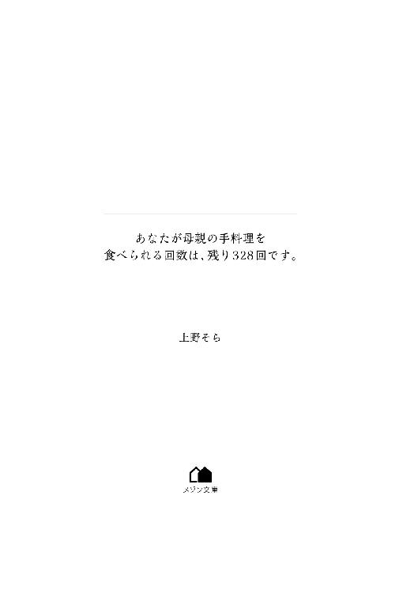

| あなたが母親の手料理を食べられる回数は、残り328回です。 (メゾン文庫) | |
| 上野 そら | |
| 一迅社 (2018) | |

【あなたが母親の手料理を食べられる回数は、残り３６４７回です】
十歳の誕生日、視界の下にそんなメッセージが見えるようになった。目を瞑ってもこすっても、その文字は消えない。
「かずき、お誕生日おめでとう。今日はかずきの好きな生姜焼きにしたからね」
母が笑顔で、作りたての料理を食卓に並べる。豚の生姜焼きとこふき芋、だし巻き卵の入ったおにぎり。
僕はなんの気なしに、いつも通り料理に箸をのばした。生姜のきいた豚と、控えめに味付けされたこふき芋――大きなおにぎり。
そしてそれらを食べ終わる頃、僕はその異変に気づいた。
【あなたが母親の手料理を食べられる回数は、残り３６４６回です】
「あれ？」
数字がひとつ減っている。僕は首を傾げた。母が不安そうな顔をする。
「どうしたの？ 生姜焼き、おいしくなかった？」
「ううん、そうじゃなくて......数字がね」
母親の手料理を食べられる回数が減った。十歳の僕は、母にそれをうまく説明できなかった。「母親の手料理」という言葉にもいまいちぴんときていなかったのだろう。
その頃はまだ、親の手料理なんていくらでもいつまでも食べられると信じ込んでいたのだ。
けれども僕は、その根拠もない自信を少しずつ疑い始めた。
【あなたが母親の手料理を食べられる回数は、残り３６４５回です】
【あなたが母親の手料理を食べられる回数は、残り２８５１回です】
母の手でつくられた食事をとる度に、数字がひとつずつ減っていく。
一食食べるごとに、ひとつ。食事ではなくおやつでも――たとえばホットケーキミックスで作られたマフィンを食べてもそれはやはり、手料理としてカウントされた。
――母親の手料理を食べられる回数。
日がな一日、この数字が見えているわけではなかった。たとえば授業中、あるいは放課後友達と遊んでいる時なんかは、この数字が見えなくなる。けれどもふとした瞬間に――今日の晩御飯はなんだろうとか、母特製のカレーが食べたいとか、そんなことを考えると決まってこの数字が視界に現れた。
【あなたが母親の手料理を食べられる回数は、残り１６５２回です】
「今日は煮物かあ......。カレーがよかったのに」
家の外まで漂ってきていたしょうゆの匂いを嗅ぎながら僕は言った。「カレーは先週食べたでしょ」と、母が呆れたように返してくる。僕はムッとして、母を睨んだ。
「いいじゃん、毎日カレーでも。ねえ、明日はカレーにしようよ。肉がいっぱい入ってるやつ」
この間食べたばかりだとか、そんなのはどうでもよかった。問題は、母の手料理を食べられる回数が決まっていることにある。
嫌いな食べ物でも、さしてテンションのあがらない食べ物でも、口にすれば一回としてカウントされてしまうのだ。それならいっそ、毎日好きなものばかり食べておいた方がいい。
当時小学五年生だった僕は、短絡的にそう思った。煮物で回数を使うより、毎日カレーを食べた方が幸せだ、と。
「なに馬鹿なこと言ってるの。早く手を洗ってきなさい」
ランドセルを背負ったままの僕に対し、母は面倒くさそうにそう言った。
言われるがまま洗面所に行き、ハンドソープのポンプを二回押す。両手にもこもこと泡が立つのに比例して、頭の中にはさまざまな考えが浮かんできた。
今日も晩御飯を食べたら、数字が減るだろう。一日三食ご飯を食べたとしたら、この数字を使い切るのに何年かかる？ せんろっぴゃくごじゅうに。それってどのくらいだ？ 僕が大人になるまで、だろうか。
手を洗い終えた僕は自分の部屋にかけこみ、先日買ってもらったばかりの電卓で執拗に計算を繰り返した。
一カ月に三回くらいは外食するかもしれない。寝坊して朝ごはん抜きになるかも。そうだ、お正月はお婆ちゃんの家に行くから「母親の手料理」は関係ない？ それに、平日は学校で給食を食べる。ああでも、夏休みと冬休みは給食がないから......。
色んなケースを考えて、計算方法を変えてみる。けれどどうやっても、僕が大人になるまで数字はもたなかった。ここにきて初めて、僕は恐怖した。
大人になったら家を出るから、母の手料理を食べられなくなる。
この数字はそういう意味じゃない。
じゃあ、どういう意味だ？
【あなたが母親の手料理を食べられる回数は、残り１６５２回です】
――この数字がゼロになったら、どうなるんだ？
「かずきー、ご飯できたわよー」
廊下から聞こえてきた母の声に驚くがあまり、計算途中の電卓を床に落とした。拾う気力もなくした僕は、いそいそとダイニングへ向かう。
食卓には煮物と、ほうれん草のおひたし、あさりの味噌汁が並んでいた。席につくと同時、茶碗が置かれる。白米の香りと、むわりとした蒸気が顔にあたった。
「あ、ごめん。ネギ入れるの忘れてたわね」
母がキッチンに戻り、味噌汁に入れるためのネギを刻み始める。
とんとんとん。
心地よい音を聞きながら、僕は再度食卓を見た。そして、自分の前に置かれた煮物には、鶏肉が多めに入っていることに気づいた。母の分には、ほとんど入っていないのに。
『明日はカレーにしようよ。肉がいっぱい入ってるやつ』
――とんとんとん。
母の背中に目をやる。けれども何も、言えなかった。
「お待たせー。さ、食べよう」
手際よく味噌汁の椀にネギを入れた母が、「いただきます」と手を合わせる。僕もそれに倣い、鶏肉の煮物を頬張った。
【あなたが母親の手料理を食べられる回数は、残り１６５１回です】
「......今日のはちょっと味が薄かったかな」
僕の表情を見た母が、ゴボウを噛みながら深刻な顔をした。僕は首を振る。
「大丈夫。いつもの味だよ」
「そう？ ならいいんだけど」
母がようやく笑顔を見せて、僕はほっとした。
そこからはしばらく母と雑談をした。僕は主に、学校でドッジボールをした話を。母は、近所のおばさんと交わした世間話について。
平和なやり取り。けれど食事を終える頃、母が「そういえばね」と言った。
「向かいのお姉さん、入院したんだって」
「えっ、なんで......」
「交通事故。赤信号なのに渡ろうとして、車にはねられたそうよ。かずきも信号はきちんと守りなさいね」
「............」
「お姉さん、もうちょっとで死ぬところだったって」
「......死ぬ」
その言葉を聞いた僕は急いで席を立った。母が目を丸くする。
「なに、どうしたの」
「なんでもない。ごちそうさま！」
僕は食べ終えた皿を流しに置くと、母に声をかけられる前に自分の部屋へと戻った。床に落ちていた電卓を拾い上げ、「１６５１」を使って何度も何度も計算する。けれど、結果は一緒だった。
このまま毎日食事をすれば、僕が大人になる前に数字はゼロになる。
......それじゃあ、ゼロの意味はなんだ。
母の手料理を食べられなくなる、その理由は、なんだ。
やがて。僕はひとつの、確信的ともいえる仮説にたどり着いた。
【あなたが母親の手料理を食べられる回数は、残り９９９回です】
――この数字がゼロになった時、母は、死ぬ。
＊
【あなたが母親の手料理を食べられる回数は、残り３２８回です】
「かずき、晩御飯は？」
「友達と外で食べてきたから。要らない」
「今日はすき焼きにするからって、朝言ったでしょ？」
「うるさいなあ。要らないって言ってるだろ！」
三食きちんと食べたとして、数字がゼロになるまで残り四カ月を切った頃。
十三歳になった僕はついに、母の手料理を食べなくなった。数字がゼロになれば母は死ぬ。ならば、僕が母の手料理を拒絶すればいいのだ。
僕は徹底して、母の出す食事に口をつけなかった。
自分で料理するようになったし、面倒な時はカップ麺やスナック菓子で済ませた。
話の合わない同級生たちとファストフードでたむろして、そこで食事することも増えた。「それじゃあ身体に悪いから」と母が用意してくれたおにぎりでさえ、手を付けずに流しに捨てた。あるいは、トイレに捨てて食べたふりをするようになった。
食べたふりをするために、食事の時は自分の部屋にこもり、両親の前には姿を出さないようにした。
ある日、トイレに行こうかとリビングの前を通りかかった時、母が父に相談しているのを聞いた。
「かずきがね、私のご飯をぜんぜん食べないのよ。お弁当も要らないって言うし......」
「反抗期なんじゃないか？」
父は、母の相談を重く受け止めていないようだった。かずきももう中学生だしなあ、と明るく笑い飛ばす。母はどこか納得していないようだったが、そんなものなのかしらと呟いた。その声は、随分と悲しそうだった。
そうじゃない、と声を大にして言いたかった。僕だって本当は、母の手料理を腹いっぱい食べたい。玉ねぎを多めにいれた肉じゃが。市販のものよりコクのあるカレー。豚の生姜焼きとこふき芋。焼き菓子。具を多くいれるせいで少しいびつになるおにぎり。
【あなたが母親の手料理を食べられる回数は、残り３２８回です】
だけど僕がそれを食べる度に数字が減るんだ。ゼロになれば、母は死んでしまうんだ。
父も母も当然そんなことは知らない。父が、のんびりとした声で言った。
「そういや母さん、最近なんか痩せたか？ あごがすっきりして見える」
「そう？ ダイエットの効果が出たのかしら」
僕はそっと、その場から離れた。違うのに違うのに違うのに。ただ、そう思い続けた。
僕が母の手料理を食べない理由も、母が痩せている理由も。そんなのじゃないのに。
【あなたが母親の手料理を食べられる回数は、残り３２８回です】
......けれど、この数字のことを話して何になるだろう。母親の手料理を食べられる回数が見えていて、それの残りが少ないから、できるだけ食べないようにしている？ そんな話を、誰が信じてくれるだろう。
僕だって、この数字が質の悪い冗談であることを祈っている。祈っていた。いつもいつも。
だけどいつだって、数字は減ったじゃないか。母の料理を食べた時はいつも。それが僕の好物でも、苦手な食べ物でも。「失敗しちゃった」と母が苦笑いしながら持ってきた料理ですら。
母が作ったものなら、一口でも食べれば、数字は減ったじゃないか。
――それなら母ごと、母の手料理を遠ざけてしまえばいい。母を避けるのが難しいなら、家に帰る回数を減らしてしまえばいい。
数字がゼロにならなければ母は死なないし、今は「ダイエットの効果」だなんて言っている体調不良もすぐに良くなるはずだ。
僕が母の手料理に口をつけなければ、母はずっと健康でいられる。長生きできる。
そうだよ。僕のおかげで母は生きてるんじゃないか。
「......あのね、かずき。今日、カレーにしようと思うんだけど。ほら、かずきも好きだったでしょ、牛すじの」
「要らない」
――母にこんな顔をさせてしまっても。
「カレー屋で食べたやつのが美味かったから。あんたのは、もう要らない」
僕はきっと、なにも間違えてはいないんだ。
＊
【あなたが母親の手料理を食べられる回数は、残り３２８回です】
数字が減らなくなって、五年が経過した。
大学に進学した僕は、バイトをしながら一人暮らしをする道を選んだ。家から遠い大学を選んだのは、一人暮らしをする口実だ。自立心の問題ではない。ただ、家から出たかった。
母と顔を合わす機会を、減らしたかった。
狭いマンションに入りそうな、必要最低限の荷物だけを選別して段ボールに詰める。そんな僕の背後から、母が幾度となく声をかけてきた。
――そんな薄い毛布一枚で大丈夫なの。タオルはもっといるんじゃないの。
あれこれと心配する母を制止したのは、僕ではなく父だった。良くも悪くも楽天家である父は、僕の「反抗期」はそろそろ終わると思っていたらしい。
――あんまり口うるさく言ったら、かずきだってもっと反抗したくなるだろう？
父は、そんなことを朗らかに言ってみせた。寛容な態度にも見えたが、「面倒くさいもの」には触れないようにしているだけのようにも思えて、僕を余計に苛立たせた。
結局、母は寂しそうに笑いながらも、荷造りを手伝ってくれた。
荷造りと同時に部屋の掃除もしたおかげで、長年しまいっぱなしだったものが次から次へと出てきた。
子供の頃、クリスマスプレゼントに買ってもらったゲーム機と、セーブデータの消えてしまったゲームソフト。見返すこともない卒業アルバム、なんとなく捨てられなかったミニカー。
そういったものを見つける度に、母は「これは誕生日の時に買ってあげたやつね」と言ったり、卒業アルバムにいる僕を懸命に探したりした。
写真の中の僕を撫でる母の指先は、優しい動きをしていて。
――母の背中はこんなに小さかっただろうか。
ふと、そう思った。
食器、衣類、パソコン、本。中身の書かれた段ボール箱を、業者の人たちがトラックに運んでいく。ラックやデスクが運ばれる様子を見守っていた母が、不安げに僕に話しかけてきた。
「ねえ。やっぱりお母さんたちも今日くらいは手伝い――」
母の目も声も振り払うように、僕は言う。
「引越センターが大体のことはやってくれるし、あとは自分でできるから。引っ越し先まで来なくていい」
目も合わせようとしない僕に、母は「じゃあ」と紙袋を差し出してきた。
できるだけ無関心を装って、中身を窺う。母が度々、弁当箱代わりに使うタッパーが入っていた。
「これ、移動中にでも食べて。あんたはすぐになにも食べなくなるから」
【あなたが母親の手料理を食べられる回数は、残り３２８回です】
「......ああ」
僕は奪いとるようにしてそれを受け取り、車に乗り込んだ。走り出す車に、母はいつまでも手を振り続ける。角を曲がって完全に僕の姿が見えなくなるまで、ずっと。
道中、コンビニに車をとめ、母がくれたタッパーを開けた。
コンビニのおにぎりよりもひとまわり大きいおにぎりがふたつ、ラップにくるまれ入っている。なんとなく、具の想像はついた。僕が一番好きだった鮭と、母特製のだし巻き卵だろう。くたくたになった海苔は、いくぶんラップに張り付いているように見える。
【あなたが母親の手料理を食べられる回数は、残り３２８回です】
僕は。
母のくれたそれを、コンビニのゴミ箱に、捨てた。
＊
大学は、それなりに楽しく過ごせた。気のあう友達もできたし、自分の選んだ学部だけあって、講義も興味深いものが多い。
たまに講義をサボって街まで遊びに行くこともあった。そうすることで「これが青春なんだ」と錯覚することもできた。なお、「これが青春」という言葉は、サークルで知り合った彼女に半年で振られた自分への慰めにも用いられた。
「――望月くん。麻婆豆腐、九番テーブル」
「はい！」
バイト先に選んだ中華料理屋は常に忙しくて、だからこそやりがいがあった。美味い賄いが食べられることもメリットの一つだ。
パラパラに仕上がったチャーハン、鉄板にのせられたエビチリ、綺麗に成形された餃子。接客担当の僕が厨房に立つことはなかったけれど、僕と同い年の厨房担当スタッフは、餃子を作るのが誰よりも早くて上手だった。
――そういえば、母は餃子を作るのが妙に苦手だった。
焼いている最中に皮の口が開いてしまい、焼きあがる頃には見るも無残な姿になるのだ。皮とタネがバラバラになった餃子を、子供の頃に何度か食べた覚えがある。父は「胃に入れば一緒だ」と美味そうに酒のあてにしていたけれど、母はいつも神妙な顔をしていたっけ。
そんなことを思い返していたら、バイト終了後に母からメールが来た。
『かずき、元気ですか。水曜日、そっちに行く用事ができました。夕方ごろ、かずきの家に寄りたいと思っています。寄ってもいいですか？ 家にじゃがいもがたくさんあるので、肉じゃがを作って持っていきます』
メールだと「ですます調」になる母特有の、ぎくしゃくとした文章だった。油の匂いがこびりついた制服を脱ぎながら、僕は頭の中で返事を考える。
『肉じゃが、楽しみにしてる。玉ねぎは多めにしといて。バイト先で餃子の簡単な作り方を教わったから、今度教えるよ』
【あなたが母親の手料理を食べられる回数は、残り３２８回です】
私服に着替えて携帯を持つ。そして、脳内で組み立てた文章とはまったく違う文面を親指が綴った。
『水曜日はバイトがあるから無理』
――送信。
お疲れ様でした、と店長に挨拶をして外に出る。扉に吊るされた「本日は閉店しました」というプレートが、カラカラと音を立てた。僕は店を、店の看板を振り仰ぐ。
「定休日 毎週水曜日」
結局僕は、大学在学中、盆と正月しか実家に帰らなかった。帰省しても、出前の寿司やピザばかりを食べ、母の料理には一切手を付けないようにした。
そして。
就職してからは、まったくと言っても過言ではないほど、実家に寄りつかなくなった。
＊
「......前から思ってたけどさ、お前って食べ物に興味ないの？」
社会人になって十年が経過したある日、同僚の菰田にそう言われた。
昼食にしようと僕が鞄からコンビニの袋を取り出した時、「どうせ今日もおにぎりかサンドイッチなんだろ」と隣席の菰田が言いだしたのだ。
「サンドイッチだよ。ハムサンド」
「なるほど。じゃあ晩飯はおにぎりか？」
菰田はまさかと思っていたようだがそのまさかだったため、僕は首肯した。すると、眉をひそめた菰田の口から「食に興味がないのか」という台詞が飛び出したのだ。
「いや、そんなことはないと思うけど......」
「そうか？ 昼飯はコンビニで済ますってやつは結構いるけどさ、お前ほどメニューが固定されてるやつも、毎食コンビニのやつも珍しいって」
そうかなあ、と僕は曖昧な返事をした。本当は、食べることが好きだ。けれど自分で料理をしたり、美味い物を食べに行ったりするとどうしても、母の料理を想起してしまう。結果、「母親の手料理を食べられる回数」が視界に現れるのだ。
残り、３２８回。
一日三回その現実を突きつけられるのが嫌で、僕はいつしかコンビニ弁当やカップ麺といった「手料理らしくない食べ物」に安心できる人間になってしまっていた。
どう説明しようかと沈黙する僕に、「まさか」と菰田がこわごわ言った。
「好き嫌いが激しすぎて炭水化物しか食べられないとか？ 野菜もちゃんと食べろよ望月......」
「家では食べてるよ」
「昼飯だけ見てると説得力に欠けるなあ。このままだと夏バテ一直線だぞ」
菰田はそこまで言うと、鞄から出した黒い弁当箱をデスクに置いた。
プラスチック製の二段弁当は、コンビニのものではない。手作り弁当を持ってきている社員は多いので、菰田のそれも会社の風景に馴染んでいた。
ただ、弁当を持ってきている人間の大半は既婚者で、奥さんが作ってくれたもの――つまりは愛妻弁当というやつだ。女性社員に関しては、旦那や子供の弁当と一緒に、自分の分も作りましたというものが多い。
しかし菰田は独身で一人暮らし、彼女もいないという。
「......菰田。今日もやっぱり自分で作ったのか？」
「悪いか」
「いや、マメだなあと思って」
本心だった。菰田の弁当には、冷凍食品だってほとんど入っていないのだ。
「晩飯をちょこっと残して、翌日にアレンジすりゃ簡単なんだよ。あるいは晩飯を作る時に、弁当の分も作っておくとかな」
「......マメだな」
「他に言葉はないのか。つーか、お前も簡単な料理くらい作れるようになれって」
「煮物と炒め物なら作るよ。揚げ物は掃除が面倒だから、滅多にしないけど」
「ふうん」
料理できないわけじゃないんだな、と言いながら菰田は弁当箱の蓋をあけた。今日のおかずはなんだろうかと、僕は菰田の弁当箱を覗き込む。そして、絶句した。
「......なんだよ、物欲しそうな目しやがって」
生姜の匂いを隠すように、菰田は弁当箱を僕から離した。けれどもう遅い。
今日の菰田の弁当は、生姜焼きがメインらしかった。白飯の上に敷き詰められた肉が、食欲をそそる匂いを発している。
そして、おかずの段に見えた黄色は、いつもの卵焼きとは違うようだった。
「菰田、あのさ」
「なんだよ。どれが欲しいんだよ」
「今日のそれって、だし巻き卵？」
僕が指さしたものを見て、菰田は意外そうな顔をした。
「ぱっと見でよく分かったな。そうそう。これな、昨日の晩酌ん時に作ったんだけど、思いのほかうまくできたから弁当にも入れたんだよ」
そこまで言って、菰田は僕の顔を見た。かと思えばおかずの中から一品選んで、僕にそっと差し出してきた。
つまようじにささった、枝豆五粒だった。
「これも昨日のおつまみのひとつなんだけど。さやから出して、つまようじに刺すという手間暇かかった一品。お前はとりあえず野菜を食え」
有無を言わさない口調に気おされ、僕は枝豆を受け取った。それを見た菰田は満足そうに、だし巻き卵を指さす。
「枝豆を食い終わったら、つまようじでこれも持ってっていいぞ」
「え、いいのか？」
「お前が食べ物に反応するのって珍しいし、今日は特別な。ただし枝豆を食ってからだぞ」
いただきます、と菰田は几帳面に手を合わせ、生姜焼きを食べ始める。
野菜を食べろとか、食事の前にきちんと手を合わせるところとか。菰田のそういうところに母親の影を感じる。
そう伝えると菰田は、「俺のはどっちかと言えば爺ちゃんのがうつったんだと思う」と苦笑した。そういえば菰田は子供の頃に両親を亡くしてから、就職するまでの間、祖父の家で世話になったのだと言っていた。
枝豆を食べ終えた僕は、菰田に再度確認してから、だし巻き卵を一切れもらった。つまようじで刺しても落としてしまいそうなくらい、卵はふわふわに焼かれてある。綺麗に成形された黄色の食べ物を、矯めつ眇めつ僕は眺めた。
――だし巻き卵。
居酒屋で食べることはあるが、外食以外で食べるのは何年ぶりだろう。
僕は「いただきます」と呟いてから、菰田のだし巻き卵を口にした。柔らかな卵の食感とともに、だしの香りが口内にふわりと広がった。
【あなたが母親の手料理を食べられる回数は、残り３２８回です】
「......どうだ、美味いだろ」
菰田が自信たっぷりにそう言った。確かに、もらっただし巻き卵は売り物になりそうな味を誇っている。美味いだろ。僕は頷く。けれど。
「これ、なんのだし？」
僕の質問に、菰田は首を傾げた。
「粉末だしだよ。......変な味だったか？」
「まさか。本当に美味かったよ。そこらの居酒屋より美味い」
僕がそう言うと、菰田は気を良くしたようだった。
ついでにこれも食べてみるかと生姜焼きをすすめられ、僕は遠慮せずに一切れもらった。ほのかに生姜が香る肉は厚切りで、食べ応えがある。適度な焦げも香ばしくて、いいアクセントだ。本人がその気になれば飲食店でも開けるかもしれない、そう思える味だった。
けれど、違うと思った。
だしの味が。焼き加減が。生姜の量が。焦げ目のつき方が。
母のそれとは、違っていた。
菰田の料理を食べても、数字は減らなかった。当然だ。菰田は母ではないのだから。
僕は、何に期待していたのだろう。
数字を減らさずに母の手料理を食べられるとでも思っていたのだろうか。あるいは、母の手料理に近いものが食べられると思っていたのか。
人の手料理を食べられたことに違いはない。けれどそのせいでより一層、母の味を思い出してしまったような気がした。
その日の夕方、僕は近所のスーパーで卵を二パック購入した。そして、自分でだし巻き卵を作った。
数種類の粉末だし、白だし、麺つゆ。けれどそのどれを使っても、母の味にはならなかった。水の分量を変えても、焼く時間を長くしても短くしても、母のだし巻き卵と同じ食感にすらならない。
「......くそっ」
卵を割れば割るほど、母のだし巻き卵から遠ざかっていくような気がした。
水の量も焼く時間も――母が普段、どんなだしを使っているのかすら僕は知らない。
なのに、だからこそ。
母のだし巻き卵が、懐かしくてたまらなかった。
弁当を分けてもらった半年後、僕は菰田に温州みかんをプレゼントした。
母から送られてきたものだが、僕はそういったものにも手を付けず、常に誰かにあげるよう心がけていたのだ。
実家から送られてくる野菜や果物が「母親の手料理」でないことは理解している。けれど、万が一にも数字が減ったら。そう考えると食べられなかった。
みかんの色と艶を見た菰田は「おお」と声を出し、感動した様子で顔を上げた。
「一人暮らしだと果物ってあんまり食べられないからな。おふくろさん、お前の体調を気にしてるんじゃないか？ インフルエンザも流行ってるしな」
「かもね」
「なのに、そんな親御さんの愛を、俺なんかに渡しちゃっていいのかよ」
【あなたが母親の手料理を食べられる回数は、残り３２８回です】
「......いいんだよ。一人じゃ食べきれない量を、毎回むこうが送り付けてくるんだから」
僕は苦笑した。「数字」のために食べたくないのも本当なら、食べきれないのも真実だった。
野菜や果物が送られてくるようになった当初、一度だけ「一人じゃ食べきれないから送ってくるな」と母に連絡したことがある。一人じゃ食べきれないというのは詭弁で、本当は「母」と「食べ物」の組み合わせが怖いだけだった。
――父さんも母さんも果物好きだったよな。二人で食べればいいだろ？
しかし、音信不通だった息子から連絡が来たのが嬉しかったのか、二週間後には立派なリンゴが二十個も届いた。そして、リンゴの箱に同封された手紙にはこう書かれてあった。
「食べきれないなら会社の人に配ってね」
母からの贈り物に一切手を付けず、他人に配って回ることに対する罪悪感が、ほんの少し薄らいだのを覚えている。
野菜や果物だけではない。母からは、毎年欠かさず年賀状もくる。
大学進学のために僕が家を出た直後、母はデジカメを買ったらしく、自分で撮った写真を年賀状にプリントするようになった。父と母のツーショット。一年で両親の容貌が劇的に変わることはなく、けれど五年前のものと比べればやはり老けたと思えた。
「......今度の正月は、おふくろさんのところに帰ってやれよ」
菰田がみかんの皮をむきながら言った。そうだなあ、と煮え切らない返事をする僕の顔を、菰田がまじまじと見る。
「あのさ、ちょっと前から思ってたんだけど......。望月お前、ちゃんと飯食ってんの？ やつれてんぞ」
「最近ちょっと食欲ないんだ。この前の風邪が長引いてるのかも」
「風邪ならビタミンＣだろ。ほれ」
菰田が、皮をむいたみかんを僕にくれようとする。首を振って断ると、菰田は「せっかくおふくろさんがくれたってのに」とぶつぶつ言いながらも一房頬張った。
「そうだ、望月。こないだの健康診断はどうだったんだ？」
「ああそういえば......なんかの項目に引っかかってさ、要再検査って書かれてた」
みずみずしい温州みかんのかおりを嗅ぎながら、僕は答えた。
もともと血糖値が低かったり貧血だったりするため、健康診断ではいつも何かしらの項目で引っかかる。だから僕は今回もなんとも思わず、深く考えず、衝撃も受けていなかった。
けれど。
「――スキルス性のがんです。若い分、進行も早い」
僕は。
「......望月さん」
【あなたが母親の手料理を食べられる回数は、残り３２８回です】
「余命、三カ月です」
自分が生きられる日数にも限りがあることを、知った。
＊
どこかから、煮物のような懐かしい匂いが漂ってきていた。
それにつられたかのように、子供たちは家路を急ぐ。彼らの背中を見送ってから、僕はスマホを取り出した。
『自宅』と登録された番号を探し、通話ボタンを押す。そこに電話するのは十年ぶりだった。昔から変わらない呼び出し音が何度か続いた後、ぷつりと音が途切れる。
『――もしもし？ かずき？』
電話の向こうで懐かしい声がした。いや、昔より少し声が低くなっているような気もする。
僕が何も言わないものだから、母がもう一度声を出した。『もしもし？』
「......久しぶり。元気にしてんの」
平静を装うつもりが、上ずった声が出た。けれど、母は気にならなかったらしい。
高揚したような――どこか嬉しそうな声が聞こえてくる。
『元気よう。お父さんも元気。ちょうどね、そっちに遊びに行ってみたいわあって話してたところなの。なんていうんだったかな、ほら、そっちで流行ってるパンケーキあるでしょ。フルーツとホイップクリームがたくさんのってるやつ。この前テレビで観てね、お父さんが珍しく食べてみたいって言うから――』
母が息継ぎをするところで適当に相槌をうちながら、僕は「その意味」を考えていた。
【あなたが母親の手料理を食べられる回数は、残り３２８回です】
これは、あと３２８回母の手料理を食べれば、母が死ぬという意味ではない。
けれど恐らく、僕が死ぬという意味でもない。
ただ単純に、純粋に、事実を。
「手料理を食べられる回数」を示しているだけだ。
......テレホンカードの残度数と同じようなものなのだろう。
残っているのが五十度なら、あと五十回電話することができる。けれど五十回電話した後は、誰かが死ぬわけでも公衆電話がなくなるわけでもない。ただ、そのカードが使えなくなるだけ。電話ができなくなるだけだ。
もしも僕が早々にこの数字を使い切ったとしても、母や僕が死ぬとは限らない。
僕は寮のある中学に進学したかもしれないし、仕事のため海外に移住していた可能性だってある。結婚して、実家にはほとんど帰らなくなっていたかもしれない。
――僕や母がどんな状態だったとしても、手料理を食べられない状況になる。
この数字はきっと、そういう意味だった。
そして。この数字を、テレホンカードと同じように考えるのであれば。
たとえ度数が残っていたとしても、そのカードを「紛失」「破損」してしまうことだって、当然あり得るのだ。
カードの持ち主が死んでしまう、その可能性も。
【あなたが母親の手料理を食べられる回数は、残り３２８回です】
......こんなものが見えていなければ、僕はもっと純粋に、食事を楽しむことができていたのだろうか。
母の手料理を避けることも、捨てることもせず。
母に対して素直に「おいしいよ」と言えて、引っ越しの時には母のくれたおにぎりを頬張って。
そうすれば、母との仲も、今とは違っていたのだろうか。
【あなたが母親の手料理を食べられる回数は、残り３２８回です】
けれどこの数字が見えていなければ、母の手料理について、ここまで深く考えることもなかったはずだ。
子供の頃と同じように、「こんなものいつでも食べられる」と勘違いしたまま。
母も手料理も、ないがしろにしていたのではないか？
――見えない方が幸せだったのか、見えたからこそ気づけたのか。考える時間はあまり残されていない。
時間がない。けれどまだ、
【あなたが母親の手料理を食べられる回数は、残り３２８回です】
残っているなら。そして......許されるなら。
「――母さん」
ひとりでに盛り上がっていた母の話の腰を折る。
母はそれを不快に感じなかったのか、いつもと同じ口調で「どうしたの」と聞き返してくれた。
「今度、俺そっちに帰るから。......なんか作ってよ」
声が小さくなった。けれど母には届いたようだった。『なんかって......』と狼狽した声が聞こえてくる。
二十年以上、母の手料理を受け付けなかった息子が急にそれを要求してきたことに動揺しているらしい。
『今度っていつよ』
「もうすぐ」
『もうすぐ!? な、何が食べたいの』
「なんでもいいよ」
『よくないわ。好きなもんたらふく食べさせてあげないと。あんたは放っておいたらすぐに食べなくなって痩せちゃうんだから』
母が笑って、僕も笑った。
視線の先に見える自分の左手は、以前よりも不健康に見える。「どうにかしてごまかさないと」という思いと「母の料理を食べて少しでも健康的になろう」という気持ちがごちゃ混ぜになっていった。
残り三カ月で、僕は、母のご飯をどのくらい食べられるだろうか。
『――......それで。かずき、何が食べたいの？』
少しばかり不安げな声がした。そうだなあ、と僕は返す。
「肉じゃが」
『玉ねぎ多めね？』
「カレー」
『お肉は牛すじ、隠し味にコーヒーね』
「豚の生姜焼き」
『こふき芋と一緒に食べるのが好きなのよね、かずきは』
「ホットケーキミックスで作るマフィン。実はあれ好きだった」
『あらあ、懐かしい。チョコチップと――ホイップクリームもいるわね』
【あなたが母親の手料理を食べられる回数は、残り３２８回です】
「......あと、おにぎり。妙に大きくていびつなの」
『......中身は鮭と、だし巻き卵？』
泣いているような、笑っているような母の声が聞こえて。
僕もようやく少しだけ。
笑って、笑って、泣いた。
今にも降りだしそうな曇天を見ながら、『アンドレーサ』を買おうと決心した。
中山競馬場に傘の花が咲く様子を想像し、俺は自宅で身震いをした。雨ではなく雪が降ってもおかしくない、まさに年の瀬らしい気温だった。
競馬新聞の出馬表から目当ての名前を探し、赤丸をつける。それから、机の端に置いてあった吹雪饅頭を手に取った。
半額シールが貼られた白黒の饅頭は、賞味期限が昨日できれている。いつものことだ。気にせず、一口頬張った。
スマホで天気を確認すれば、午後の降水確率は九〇パーセント。レースが始まる頃には間違いなく降っているだろう。そうなれば、アンドレーサの独擅場だ。
俺は一人で笑いながら、これまた机の端にあった缶ビールへと手を伸ばした。
「......休日なんだし、昼から飲んでも文句ねえだろ」
机の端――両親の遺影に向かって言い訳をする。
当然、返事はない。
――二人は十五年前、俺が高校二年の時に交通事故で他界した。
二〇〇三年、八月十五日。その日から俺は毎日吹雪饅頭を食べ、成人してからは缶ビールを一本飲むようになった。
父と母への供え物。これは、十五年間変わっていない。
父は『酒』が、母は『甘いもの』が好きだったはずだから。
「......さてと。腹ごしらえも済んだし行ってくるか」
空き缶を机の上に放置したまま、新聞片手に俺は立ち上がった。黒のダウンを選び、玄関で靴を履く。傘も要るな、と考えたところでスマホが震えた。
なんだ、電話か？
ダウンからスマホを取り出し、ディスプレイを確認した。着信番号――
「公衆電話ぁ？」
それは、あまり馴染みのない単語だった。
もちろん公衆電話は知っている。しかし、使用したことはほとんどない。公衆電話からかかってきた回数も、これまで数えるほどしかなかった。
誰からだ？ 俺の知ってる奴か？
訝しがりつつも、俺は電話に出た。
「もしもし」
『も、もしもし。あんた、梶啓介？』
「は？」
どこか聞き覚えのある声だった。しかし、誰なのか思い出せない。
俺は眉間にしわを寄せた。
「なんだ、あんたこそ誰だよ」
『......今、何月何日の何時だ？』
「はあ？」
『十二月二十三日の十三時ちょうど、有馬記念の馬券を買いに行く前か？』
奇妙な電話の主に「馬券を買いに行く前」とまで言われ、俺はついに黙り込んだ。
電話の向こうで男がぽつりと『マジかよ......』と呟く。
マジかよ、と言いたいのはこっちだった。有馬記念どころか競馬を趣味にしていること自体、誰にも話していないのに。
「ちょっとさ、マジであんた誰......」
『お前あれだよな。今、アンドレーサの単勝狙ってるよな？ 雨が降ったら重馬場の得意なアンドレーサが断然有利とか思ってんだろ』
「えっ」
早口でまくしたてられ、俺は思わず競馬新聞に目を落とした。赤丸のついた、アンドレーサに。
玄関を見回し、隠しカメラや盗聴器が仕掛けられていないかチェックする。しかし、そんなものは見当たらない。
こいつはなんで、こんなにも俺のことを知ってるんだ？
なんなんだよ、この電話は。
『――いいか、よく聞け。天気予報は外れる。今日、夕方五時まで雨は降らない』
諭すように、けれども焦った口調で男が言った。
俺は「はあ？」と声を出す。
「何言ってんだ、あんた。降水確率九〇パーセントだぞ？ 降らないはずないだろ」
『それが降らないんだよ！ いいか、アンドレーサは負けるから絶対に買うな。今年の有馬記念、勝つのはイ――』
「イタズラも大概にしろよ！ 俺は忙しいんだ！」
自分でも驚くほどに大きな声が出た。しかし、謝るつもりもない。俺はスマホを耳から離し、通話終了を選んだ。
十二月二十三日、十三時〇〇分着信。公衆電話。通話時間五十三秒。
......ガキの間で、変なイタズラでも流行ってんのか？
俺はスマホをダウンのポケットにねじ込み、外に出た。
『イザナミチャットです、イザナミチャットが有馬記念を制覇しました！ 二着はハナ差で五番デライラステラ、三着は八番マジカルマ。注目馬アンドレーサは無念の八着ーっ！』
「はあー!?」
俺は馬券を放り投げた。何もかもが滅茶苦茶だった。
前評判の悪かった牝馬イザナミチャットが優勝。二着三着も予想と違う。
いや、それよりもアンドレーサだ。スタートから出遅れたとは思ったが、まさかそのまま八着とは......。
すべてはこの天気のせいだと、俺は空を仰いだ。一粒たりとも雨を降らさなかった鉛色の雲。
ちくしょう、降水確率九〇パーセントはどこにいったんだ。
一着から三着までを当てたやつは万馬券。俺はといえば、三分弱で三万円をドブへと捨てた。財布の中身は残り三千円。
「ちくしょう！」
一言吐き捨て、外れた馬券を踏みつける。
こんな日は酒でも飲んで鬱憤を晴らすべきだ。しかし、いい酒を飲む金もない。
――いつものスーパーで、発泡酒でも調達するか。
俺は競馬新聞をゴミ箱に捨てると、駅へと向かった。
＊
ざあざあと、雨が降っていた。
「遅いんだよ......」
まさに最悪な一日だ。競馬は大負け、スーパーを出れば雨が降っている。
そして、出掛けにかかってきた奇妙な電話に気を取られたせいで、傘を持ってくるのも忘れていた。
スマホで時間を確認する。午後五時すぎ。
あと二時間ほど早く降ってくれれば、今頃美味い酒を飲めていたかもしれないのに。俺は溜息をついた。
ここから自宅マンションまでは徒歩十分。雨はやむ気配もない。
――腹を決めるか。
俺は、スーパーの袋をしっかりと胸に抱えた。
袋の中には自分用の発泡酒とチューハイ、更には両親への供え物として買ったビールや吹雪饅頭なんかが入っている。袋の中身を揺らしたくはないが、走って帰らないと自分が風邪を引きそうだ。
俺はぐっと、足に力を込めた。そうして一歩前に踏み出そうとして、
「すみません......」
隣から声をかけられた。
「え、あ、はい？」
前傾姿勢をとっていた俺は、必要以上に背筋をのばした。姿勢を正した理由はただひとつ。隣に立っていたのが、かなりの美人だったからだ。
ただ、寒さのせいか女性は顔面蒼白だった。長時間雨にあたったらしく、黒い髪は濡れそぼっている。
「......あのー、大丈夫ですか？」
見ているこっちが不安になるくらい、彼女は震えていた。
何か温かい飲み物でも、と言おうとする俺を制して、彼女が再び「すみません」と呟く。そして、自身のコートから定期券のようなものを取り出した。
「これを......もらってくれませんか」
俺は彼女から、彼女の持っているものへと視線をうつした。
定期券、ではなさそうだ。彼女の持つカードには、小さな穴が並んでいる。
「......テレホンカード、ですか？」
彼女が小さく頷いて、俺は困惑した。
――金に困っているからテレカを買ってほしい、ということだろうか。
テレホンカードが欲しいかと訊かれれば、答えはノーだ。
スマホを持っている現代人に、テレカを売りつけるのは無理がある。いくら相手が美人でも、買おうという気にはなれない。
正直に言おう、要らないと。
俺は視線を上げた。しかし俺の表情で、次の言葉を察知したのだろう。彼女は慌ててこう言った。
「お金は要りません。もらってくれるだけでいいんです」
「え......」
尚更、わけが分からなかった。
彼女が「わ、わたしも」と震えた声で続ける。
「わたしも、このカードを知らない人にもらったんです。でも......もう、わたしは、このカードを使わない。だから――」
「要らないなら、捨てればいいじゃないですか」
冷たく言い放ってしまったが、本音だった。
しょせんは度数の少ないテレホンカードだ。見知らぬ人間に渡すほどの価値があるとも思えない。
俺の言葉を聞いた彼女が、ぶんぶんと首を振る。濡れた髪から飛んだ雫が、俺の頬にかかった。
「このテレカは......」
呟き、彼女がカードを裏返す。そこには無機質な文字でこう書かれていた。
【あなたが自分に電話をかけられる回数は、残り５回です】
「......なんですか、これ」
怪しい、胡散臭い、変なイタズラ。最初に思い浮かんだのはこのみっつだった。
笑ってやりたい気持ちをこらえて、彼女を見る。
彼女は、笑っていなかった。
「文字通り、です。このテレカで電話をすると、過去や未来の自分が電話に出る」
「そんな馬鹿な」
今度こそ笑ってしまった。しかし、彼女はくすりともしない。むしろ必死だ。
「電話番号は『西暦―何月―何日―何時―何分』。話せるのは、一回につき一分だけです」
「へえ」
俺は適当に相槌を打った。怪しい話を聞かされている間に、雨脚が弱まりつつある。今のうちに、家へと走って帰りたかった。
「お願いします、受け取ってくれませんか」
半ば押し付けるように、彼女がテレカを差し出してきた。
......気味は悪いが、さっさと受け取った方が早く帰れそうだ。この場ではもらっておいて、あとでコンビニのゴミ箱にでも捨てればいい。
俺は渋々、カードを手にした。しかし、
「もう一度聞きますけど。このカード、どうして捨てないんですか」
気になったので訊ねた。彼女がこのカードを不要だと判断した理由も、用済みになったカードを他人に押し付けてくる理由も、まるで分からなかったからだ。
俺の言葉に、彼女はそっと顔を伏せた。そして、消え入りそうな声で言った。
「誰かにとっては必要なものかもしれないから。５回分しか、残ってなくても」
雨音が、消えたような気がした。
濡れた地面に目をやる。水たまりはあるが、空から降るものは少なくなっていた。
俺は無言で彼女に背を向けた。奇妙な女性に怪しいカード。早く、この場から立ち去りたかった。
「......ねえ！」
ぱしゃりと足音を立てた俺に、背後から彼女が声をかけてきた。
振り返れば、彼女は酷く情けない顔をしていて。
「――......お繋ぎできませんって、どういう意味だと思います？」
俺が言葉を発する前に、彼女が「さようなら」と手を振った。
＊
テレホンカードを譲り受けた翌日、十二月二十四日は振替休日だった。
クリスマスイブにやりたいこともない俺は、朝からだらだらとテレビを観ていた。しかし、テレビ番組もクリスマス一色で面白みがない。
供え物の饅頭をかじりながら溜息をつく。そして、眼前でテレカをひらひらと振った。
【あなたが自分に電話をかけられる回数は、残り５回です】
「過去か未来の自分に電話をかけられる、ねえ」
到底信じられない話だ。今時、小学生でもこんな嘘にはひっかからないだろう。
――しかし、彼女の表情だけは真実に見えた。
「......駄目だなー、下手な演技にすぐ引っかかるんだから」
自分で自分を笑ってから、俺はパジャマを脱いだ。
――クリスマスツリーの映像はもう見飽きた。近所のレンタルショップでＤＶＤでも借りてこよう。
パジャマを脱衣かごに放り投げ、適当なパーカーに袖を通す。
二〇一八年十二月二十四日、午後一時。
ダウンのジッパーをあげて、机の端に目をやった。写真の中で微笑む両親。
【あなたが自分に電話をかけられる回数は、残り５回です】
「......もしもこれが本当なら、交通事故だって回避できるかもな」
俺は両親にテレカを見せつけるようにして、笑った。
駅前のレンタルショップで旧作の映画を三作借りて、スーパーに寄った。
いつもの缶ビールと、いつもの吹雪饅頭。饅頭にはやはりというか、値引きシールが貼られてある。俺は迷うことなく、半額の饅頭をかごの中に入れた。
スーパーのビニール袋をぶら下げ、自宅マンションへと戻る。
道中、シャッターのしまった酒屋の前に、電話ボックスがあるのを見つけた。ガラスで区切られた小さな空間と、緑の電話。そういえば、ここに一台設置されていたっけ。
「......まあ、騙されてみるのも面白いか」
俺はダウンのポケットからテレカを取り出し、電話ボックスの中に入った。荷物を地面に置き、テレカの表面を見る。
【あなたが自分に電話をかけられる回数は、残り５回です】
――昨日の俺に万馬券を教えて、全財産つっこめば、遊んで暮らせるな。
安易にそう考えた俺はためらいなく、公衆電話にテレカを挿入した。
「えーと、昨日の昼頃だから、番号は......」
２０１８―１２―２３―１３―００
０を二回押した時、昨日の十三時ちょうどに電話がかかってきたことを俺は思い出した。
......けれど、そんなまさか。
受話器が「プ、プ、プ」と短い電子音を出し始める。はん、と俺は鼻で笑った。
「どうせ『この番号は現在使用されていません』とか言うんだろ」
急に馬鹿らしくなってきた。さっさと家に帰ってＤＶＤでも観よう。
そう思い、受話器を置こうとしたその時だった。
ブツン、と何かが切れる音がした。
「ん？」
プ、――......プルルルル、プルルルル、プルルルル。
「お、おい、ちょっと」
こんな適当な番号で、どこに繋がってるんだよ。
俺は慌てて電話を切ろうとした。しかし、呼び出し音がふいに途切れる。
『――もしもし』
それは、不機嫌そうな男の声だった。けれど確かに、この声は聞き覚えがある。
まさか......。
「も、もしもし。あんた、梶啓介？」
『は？』
自分の名前を呼んでみると、相手が更に声を低くした。「あんたこそ誰だよ」と、挑発するように言ってくる。威圧的なこの口調。少し掠れた声。
間違いない。これは俺だ。
待て、それじゃあ......。
「今、何月何日の何時だ？」
『はあ？』
「十二月二十三日の十三時ちょうど、有馬記念の馬券を買いに行く前か？」
言うと、急に静かになった。競馬の話をされて狼狽しているのが伝わってくる。
ということは今、電話の向こうは十二月二十三日の十三時。俺が馬券を買いに行く前で間違いない。
「マジかよ......」
俺は呟き、けれどもすぐに頭を切り替えた。
これが昨日の俺に繋がっているのなら、言うべきことがある。このままだと俺は、負ける馬に三万円賭けてしまうのだから。
昨日のレースを思い返し、俺は口を開いた。
夕方五時まで雨は降らない。アンドレーサの単勝は外れるから買うな。
「今年の有馬記念、勝つのはイザナ――」
『いたずらも大概にしろよ！ 俺は忙しいんだ！』
受話器が割れそうな怒声が響いた。そのままぶつりと通話が途切れる。
「おい、おいっ！ ............ちくしょう！」
乱暴に受話器を下ろすと、電子音とともにテレホンカードが返ってきた。そこに書かれた文言。
【あなたが自分に電話をかけられる回数は、残り４回です】
「......減ってる」
俺は慌てて、スマホの着信履歴を見た。
十二月二十三日、十三時〇〇分着信。公衆電話。通話時間五十三秒。
「嘘だろ......」
このカードは、本物だ。
足元から徐々に這い上がってくるような恐怖を感じ、俺は電話ボックスから飛び出した。
＊
机の端にはいつだって、同じ笑顔がある。
自分たちが事故に遭うことを知らない、二人の穏やかな笑顔。
「その日」が来るまで、俺だって何も知らなかった。
警察から電話がかかってきて、駆け付けた時には両親が死んでいる。そんなのはドラマの世界の話だと思っていた。あるいは、自分とは関係のないものだと思い込んでいた。
けれど突然、大切な人に二度と会えなくなることは誰にでも――俺にだって起こり得るものだった。
通夜、葬式、四十九日、納骨。
何かをする度に、日常だと思っていた日々が遠ざかっていく。やがて、かつての日常は消え去り、両親の写真だけが机の端に残った。
――失ってからは、家族という単語を毛嫌いした。
親と一緒に担任のもとへと向かう同級生を見て、こいつらは親がいないと自分の進路も決められないのかと考える。保護者席の設けられたイベントには出ない。
家族愛をうたうテレビ番組で、子供が手紙を朗読すれば寒気がした。
『おとうさんはいつも、おしごとがんばってくれてます。おかあさんはまいにち、おいしいごはんをつくってくれます』
「......よかったなあ、上手に読めて」
嫌悪の中に混じる、羨望。
俺が十七歳から三十二歳になっても、写真の二人は年を取らない。二度と会えないし、話せない。
別れの準備ができていなくても、最期の挨拶をしていなくても、そんなのは関係ない。
誰かの死は予言できないし、回避できないものなんだ。
両親がこの世界から消えてからようやく、俺はそれを悟った。
――つもりだった。
【あなたが自分に電話をかけられる回数は、残り４回です】
「避けられる、のか......？」
テレカに書かれた文字を何度も確認しながら、俺は独りごちた。
過去か未来の自分に電話ができる。
見知らぬ女性にもらったこのテレカがあれば、両親の死を予言することも、回避することも容易い。高校時代の自分に電話をかけて、両親が事故に遭わないよう注意を促せばいいのだから。
俺はテレカを机に置き、写真たてを見た。そこにおさめられている顔は年々薄れ、黄ばんできている。
老けない顔、劣化していく写真。
十五年前は想像もしていなかったこの未来を、変えられるかもしれないんだ。
「けど、四分か......」
俺は頭を抱えた。
テレカの残りは四回。一回につき一分だから、このテレカは最長でも四分しか話せないということになる。
つまり、四分で両親の事故について簡潔に話し、なおかつ過去の自分に信用してもらう必要がある。イタズラ電話と疑われてしまっては話にならない。
何を言えば、過去の俺は「未来の自分から電話がきた」と信じるだろう。
「高校時代の俺が、他の誰にも秘密にしていたこと......」
なかったといえば嘘になる。しかし、十五年も前のこととなるとかなりうろ覚えだ。
――ちくしょう、日記でも書いておけばよかった。
頭を掻きむしりながら遺影を見る。俺が笑っていようが悩んでいようが、いつでも変わらない二人の笑顔。
その表情を変えられるなら。
「やってみるしかねえ......！」
テレカを片手に、俺は立ち上がった。
シャッターの閉まった酒屋。その近くに鎮座している電話ボックス。
戸を引いて中に入ると、一気に世界と遮断されたような気がした。冷え切っていない、けれど暖かくもない空気がボックスの中に滞留している。
現在時刻は、十二月二十四日の夕方五時。けれど今から電話する先は、十五年前の真夏だ。
２００３―０８―１４―１８―００
両親が事故に遭うのは翌日の十五日。盆休みだった。
当時反抗期だった俺は家族で出かけるのを嫌がり、「盆休みは爺ちゃんの家に行こう」と提案する両親に対し「行かない」と言い張ったのだ。
結果、両親だけが祖父母の家に向かい、居眠り運転をしていた大型トラックに追突された。
二〇〇三年、八月十五日。
この日の運命を、五分でも変えることができたなら。
電話番号を押し、受話器を耳にあてる。呼び出し音がしばらく続いた。七回、八回......九回。
『――もしもし？』
高校生の俺が、出た。
ようやく聞けた声は妙に低かった。この前の俺同様、公衆電話という慣れない単語に警戒しているのかもしれない。
「もしもし。梶啓介、今から俺が言うことをしっかり聞いてほしい」
『はあ？』
「頼むから聞いてくれないか」
あえて下手に出ると、受話器の向こうが静かになった。
自分のことだからこそ分かる。思春期の俺は、見るものすべてに文句を言うようなやつだった。
面識のある相手ならともかく、素性のしれない人間のアドバイスなんて聞きもしないだろう。ましてや「公衆電話からかけてきたのは未来の自分だ」なんて話を、簡単に信じるはずもない。
しかし、俺は四分でこいつを説得しなければならないのだ。
「梶啓介。お前の両親は明日、祖父母の家に行く予定だろ。お前は留守番をすると言い張ってる。そうだよな？」
『......なんだお前、誰だよ』
「まずは最後まで聞いてくれ。いいか。明日、両親が出かけられないようにしろ。それができないなら、五分でもいいから出発を遅らせるんだ。このままだと明日、お前の両親は――」
『だーかーらー、誰だよお前。気持ち悪い』
「黙って聞けっつってんだろうが！ いいか、俺は十五年後の――三十二歳のお前だ。信じられないならお前の秘密を言ってやる。お前、クラスの松田が好きだろ！」
向こうがはっと息をのんだのが分かった。どうだ、と俺は追及する。
松田はクラスの中でも寡黙な女子で、漫画を描くのがとりわけうまかった。しかし男子からは「オタク」と呼ばれ、常にいじめられていた。
そんな松田に好意を抱いているなんて知られたら、今度は俺がからかわれる。そう考えた俺は結局告白することもできず、高校を卒業してしまったのだ。
クラスの松田が好き。これは絶対に「俺以外の人間」は知らないはずだ。
つまり、この事実を言い当てれば「電話の相手は俺自身」という話の信憑性が高まる。
だが、電話の向こうから返ってきたのは、
『――......んなわけねーだろ』
怒気を含んだ低い声だった。思いもよらぬ返事に、俺はうろたえる。
なんだ？ 本当のことを言われて、どうして怒ってるんだ？
『あんな冴えないオタク女なんか好きになるわけないだろ。なんだお前、俺と同じクラスの誰かか？』
若干震えたその声を聞いて、俺はようやく気づいた。
過去の俺は焦っているんだ。
「松田に好意を抱いている」という秘密を公表されてはたまらない。だから虚勢を張っている。電話の相手――俺の話はあくまで推論で、間違えていると言い張るつもりだ。
まずい。話の選択を誤った。
「お、おい待て」
『ったく。イタズラ電話かよ、出て損した』
「ちがっ、ちょ、待て」
『犯人は誰だ、ヒデあたりか？ ケータイの充電ないからもう切るぞ』
「やめろ切るな！」
このままだと明日、お前の両親は死んでしまうんだ。
そう言い切る前に、ブツン、と無慈悲な音がした。
「おい！ おいってば！」
受話器に向かって叫ぶ。しかし、どれだけ呼びかけても反応はなかった。
観念して受話器を置く。
公衆電話が、高い電子音とともにテレカを吐き出した。
【あなたが自分に電話をかけられる回数は、残り３回です】
たった一分で、たった一回で。ここまで絶望したのは初めてだ。
俺は電話に向かって軽く拳を振り下ろした。鈍い音がボックスの中に響く。
「くそっ......」
秘密を暴いてやれば、俺の話を信じ、耳を傾けてくれるものだと信じていた。
けれど、現実はこうだ。
思春期の俺と、大人になった俺とでは、感じ方も考え方も違ってくる。そんなことにも気づけなかったなんて。
――どうする。
俺はテレカを睨んだ。
もう一度、高校時代の俺に電話をかけるか？ しかし、いつの俺に？ 事故の一カ月前、それとも半年前か？ 高校生の俺を、今の俺はうまく説得できるのか？
さっきの一分は、まったくと言っていいほどの不毛だった。次は失敗したくない。せめて、電話を切らせないようにしないと。
なら、どうする？
「......十七歳よりかは素直で、判断力もある時か」
俺は受話器を持ち上げ、テレカを入れた。
そして、ボタンを押す。
１９９９―０５―０５―１９―００
中学一年、十三歳の誕生日。
この頃ならまだ、言うほど人を疑っていない。ノストラダムスの大予言を信じ、震えていた時分だ。
頼む。俺のことを偉大な予言者だと思い込んでくれ。
最後まで話を聞いてくれ。
――ところが。
『イタ電か。最近ホントに多いな、こういうの』
中学生の俺が出した結論は、高校生の俺とまったく同じものだった。
「は、話を聞けって。このままだとお前の両親は」
『はいはい。死ぬとかなんとか言うんだろ？』
ははは、と乾いた笑い声が聞こえてきた。
中学時代の俺は、一切話を聞こうとしない。なんで、と考え思い当たった。
当時、学校でイタズラ電話が流行っていたのだ。
ノストラダムスの大予言で盛り上がったせいだろう。電話の内容は未来を予言するもので、それも誰が死ぬとか事故に遭うとか、そういう不安をあおる話ばかりだった。
――しまった。そう思った時には遅かった。
『こういう電話、もうやめろよー。不謹慎だし』
それは下手な詐欺師を諭すような、他者を見下した言い方だった。
このクソガキ、と思うが口には出さない。論点は、伝えるべき言葉はそこではない。
「違うって。本当なんだよ、本当に！」
『必死すぎて怖いから。もしかして「親が死なないように」って壺でも売るつもり？』
「違うんだって！ 本当に、お前の両親は二〇〇三年八月――」
けいすけー、ご飯できたけどー。
遠くで、俺を呼ぶ声が聞こえた。
十三歳の俺が、『今行くー』と返事する。そして、こちらにも鼻息が飛んできそうな勢いで、ふんっと笑った。
『じゃ、せいぜい頑張れよノストラダムス』
「待て、切るな！」
――ブツン。
心臓を止めてしまいそうな音が鼓膜を震わせた。
続くのは「プー、プー」という脱力したくなる音。俺は焦点の定まらない目でぼんやりと、緑の筐体を眺めた。
失敗したくないと考えた結果が、これか。
数分前まで苦悩していた自分を笑ってやりたい気分だった。
いくらなんでもあんまりだ。信用させるどころか「両親が死なないようにしろ」という用件すらまともに話せていない。
これ以上、どうしろっていうんだ。
俺は、公衆電話から返却されたテレカを引っ張り出した。
【あなたが自分に電話をかけられる回数は、残り２回です】
「二回......」
女性からテレカをもらった時に残っていたのは五回分。
それが残り二回。これまでの通話にはなんの成果もなく、ただ三回分浪費しただけだ。
電話ボックスの中で、俺は途方に暮れた。
「次は『いつ』にかければいい......？」
テレカに向かって呟く。高校生の俺も中学生の俺も、話にならなかった。
それならいつにかければいい？ 両親が事故に遭う前で、なおかつ「未来の俺」を信じて行動しそうな年齢。小学校の低学年か？
......いやだめだ。
たとえ子供の俺が電話の内容を信じたって、両親はきっと信じない。
七歳の俺が「お父さんたちが事故に遭うんだって」と話したところで、「何言ってるんだ」と一蹴されて仕舞いだ。
つまり、俺自身が、両親を説得できる年齢に達していなければ意味がない。
「どうすれば......」
悩んでも答えは出そうになかった。
いや、焦るな。今日中にすべてを決める必要はない。テレカさえ紛失しなければ、過去を変えるのはいつだってできるのだから。
とりあえず落ち着こう。時間を置くんだ。
俺は電話ボックスのドアを押して、――すぐに引いた。
「一年後......」
閃いたのだ。
「未来の自分に、電話すればいいんじゃないか......？」
そうだよ、なんで気づかなかったんだ。
【あなたが自分に電話をかけられる回数は、残り２回です】
未来の俺は、このテレカの存在を知っている。
つまり、過去の俺から電話がかかってきたとしても、イタズラ電話だとは絶対に疑わないはずなんだ。
むしろきっと、今すべきことを教えてくれる。
両親を救う方法があるなら伝授してくれるだろうし、もしもそんな方法がないのなら「未来」を教えてくれるはずだ。
どの馬券が万馬券になるとか、株価とか。
過去の自分から電話が来ると分かっていれば、楽に金が入る情報くらいは書き留めているだろう。
――たとえば、一年後の自分なら。
迷いもせず、俺は受話器を持ち上げた。公衆電話がテレカを吸い込む。
２０１９―１２―２４―２０―００
一年後の今日、仕事も終わっているだろう時間を見計らって番号を押した。
......このテレカは、こういう使い方をすべきだったのか。
未来の情報を聞くことで「今」を変えられる、便利なテレカだったんだ。
そこまで考えたところで、そんな便利なものを俺に譲ってくれた女性を思い出した。
血の気のない顔、震える身体。
そして、言葉。
『お繋ぎできませんって、どういう意味だと思います？』
「......あ」
目を見開く。受話器からは「プ、プ、プ」と断続的な電子音が続いていた。
――もしも、未来に電話をして。
繋がらなかったなら、それはどういう意味になる？
俺はごくりと唾を飲み込んだ。
テレカをくれたあの女性は「そうなった」んじゃないのか。
未来の自分に、電話が繋がらなかったんじゃないか......？
そうなる原因は、なんだ。
自分が電話を取れる状況にいなかった。携帯を持っていなかった。あるいは。
......あるいは？
プ、プ、プ。電子音を聞きながら、俺は受話器を置こうかと考え始めていた。
一年後の今日に、もしも繋がらなかったらどうする。一年後はやめておくべきか？ いったん受話器を置いて、半年後にかけ直してみたらどうだ。
......半年後の自分に繋がる保証があるか？ ない。それじゃあ一週間後なら、明日の俺なら、確実に繋がるだろうか？ ......いいや。
両親が突然この世から消えてしまったように。
俺が一時間後には死んでいる可能性だって、あるんだ。
「......っ」
受話器からほんの少し耳を離したその時、ブツン、と大きな音がした。
――おかけになった番号に、お繋ぎできませんでした。
「あ......」
死を伝えるメッセージが頭をよぎる。それをかき消すかのように、
『よお。待ってたよ』
一年後の自分が、柔らかい声を出した。
＊
二〇一八年十二月三十一日。
一年の終わりと始まりが、同時に近づいてきていた。
――未来の自分と話をしたあの日から、一週間かけて熟考した。
最後の一回はいつの自分にかけるか。何を言うか。何を言うべきか。
結論は、出た。
電話ボックスの冷たい扉を引き、中に入る。財布の中からゆっくりと、テレホンカードを取り出した。
【あなたが自分に電話をかけられる回数は、残り１回です】
これが、最後。
俺は深呼吸を三回繰り返してから、一枚のメモ用紙を取り出した。今からかける電話番号が、そこに書かれてある。
１９９３―０５―０５―１８―００
七歳の自分。これが、俺の出した結論だった。
＊
よお。待ってたよ。
時間がないから手短に言う。
いいか、これから俺が言う言葉の意味をよく考えろ。考え切ってから次の行動に移るんだ。
今のお前は後悔しているだろう。「過去の自分」にかけた電話がすべて失敗に終わったと思っているからだ。
けれどそうじゃない。その電話にはすべて、ちゃんと意味があった。
思い出せ。
これまでの電話で、お前は何を言われた？ 電話の向こうで何が起こっていた？
過去の自分にかけた電話。それは「どこ」に繋がっていたんだ？
お前が話したいのは、声を聴きたいのは。過去の自分だけなのか？
考えろ。
未来の俺から言いたいことは他にない。お前が裕福になる方法は知っているが、教えられない。
いいな、これが最後のヒントだ。
＊
未来の俺がくれた言葉を元に、考えた。
「過去の自分」に電話をかけた時、それは「どこ」に繋がっていたか。
一回目、競馬前の俺へとかけた時は、現在使用しているスマホに繋がった。
けれど二回目。高校二年の自分にかけた時は、当時所持していた「ケータイ」――ガラケーに繋がっている。
そして三回目。中学一年の自分はまだ、携帯を持っていなかった。なら、あの電話が繋がった先は――
家の固定電話だ。
このテレホンカードは「自分の携帯に繋がる」のではない。「当時の自分が最も取りやすい電話に繋がる」という意味だろう。
つまり、七歳の自分に電話をかければ、それは間違いなく家の固定電話に繋がることになる。
「......よしっ」
気合を入れて、テレホンカードを公衆電話に差し込んだ。ここまでは確信に近い。
１９９３―０５―０５―１８―００
番号をプッシュして、子供の俺が出るのを待つ。
呼び出し音は五回続き、六回目でぷつりと途切れた。
『はい、もしもし。カジです』
――七歳の俺が、電話に出た。
早鐘を打つ心臓を押さえる。そして、なるべく丁寧な口調で俺はこう言った。
「もしもし。......おうちの人に、替わってもらえますか」
ここから先は、賭けだった。
【あなたが自分に電話をかけられる回数は、残り１回です】
この一文を何度も読み返して気づいた。
――自分としか話せないとは、書いていない。
それなら、家の固定電話に繋がれば、家族の誰かに替わってもらえるんじゃないか？
夕方六時なら、夕食の準備をしている母がキッチンにいる可能性は極めて高い。
加えて、七歳の俺は「大人に替われ」と言われれば、疑うことなくそうするはずだ。
頼む。親に替わってくれ。......頼む。
『あ、えっと。ちょっとまってください』
プツン、と小さな音がした。
悲鳴をあげかけたが、直後ピロピロとした安っぽい音で「エリーゼのために」が流れ始めた。そういえば家の電話を保留にした時、いつもこの音楽が流れていたっけ。
名曲に耳を傾ける余裕もなく、俺はひたすら祈った。
時間がないんだ。早く替わってくれ。繋がってくれ。頼む。......頼む。
『――......はい、お電話替わりました』
耳元で懐かしい声が、した。
「......あ」
顔を上げる。母さん、という言葉を飲み込んだ。
言いたいことはたくさんあった。
けれど「言ってはいけないこと」も、たくさんあった。
「あのっ」
落ち着け、焦るな。でも急げ。時間がない。
「......梶さん」
一週間かけて俺が選んだ言葉は、
「あなたと、あなたの旦那さんの好きな食べ物は......なんですか」
笑ってしまうくらいに、ちっぽけな質問だった。
――お前が裕福になる方法は知っているが、教えられない。
一年後の自分はそう言った。この言葉が最後のヒントだ、とも。
「教えない」ではなく「教えられない」。
何故か。
......恐らく、未来を大きく変える事実は言えないからだ。
これまで「過去の自分」に電話をした時もそうだった。両親が死ぬ事実を克明に教えようとすればするほど、電話を切られてしまった。このテレホンカードはきっと、そういうつくりになっているんだ。
過去や未来は変えられない。
庶民がいきなり大富豪になったり、過去に死んだ人物が蘇るような情報は、言えないようになっている。
死んだ両親を蘇らせるようなことは、言えない。
だとすれば、もしも母と数秒でも話せる機会を得た時、俺は何を言うべきだろうか。何を、聞くべきだろうか。
思い浮かんだのは、いつも用意している缶ビールと吹雪饅頭だった。
酒が好きだったから、甘いものが好きだったから。
そんな単純な理由で選ばれた、毎日の供え物。
――けれどもしも、二人が本当に好きだったものを聞けたなら。
『ええと......』
母の困惑している声が聞こえていた。当然だ。「赤の他人」から突然、好物を聞かれたのだから。怪しさすらも通り越している。
『失礼ですが、食べ物のセールスでしょうか。だとしたらうちは』
「違うんです」
母の言葉を遮る、その声すら震えた。
「......そんなんじゃ、ないんです」
俺の声を聞いた母が、黙り込んだ。
イタズラやセールスの類を疑われても弁明はできない。時間がないし、余計なことを言えば通話が切れる結果になってしまう。
失敗、だったか。
歯を食いしばる。その時、母が口を開いたのが分かった。
『......主人は、梅酒と唐揚げをあわせるのが好きですね』
「梅酒？」
思わず復唱した。ええ、と母が答える。
『自分で作るのが楽しいみたいで。梅酒はとっておきの日に飲むお酒だとか言ってます』
「梅酒......」
思いついたこともなかった。言葉を失う俺に、『私は』と母が続ける。
『甘いものが好きですね。特にシュークリーム』
「............」
『主人がね、お土産によく買ってきてくれるんです。駅構内で売ってる、四つ入りのやつ』
息子もよく、一緒に食べてますよ。
幸せをにじませた声で、母はそう言った。
「......ご」
言いたいことは、たくさんあった。
そんなこともろくに覚えてなくてごめん。こんな息子でごめん。親孝行できなくてごめん。
二〇〇三年八月十五日は、絶対に家から出るな。
言いたいことはたくさんあった。
けれど、最後に。
「あ......」
最期まで言えなかった言葉を今、伝えられるなら。
「......ありがとう、ございました」
ブツン、という音が俺にすべての終わりを告げた。
それは、俺が選んだわけでも母が選んだわけでもない。一分という、最初から決められていたタイムリミットだった。
静かに受話器を置く。出てきたテレカを引っ張り出した。
【あなたが自分に電話をかけられる回数は、残り０回です】
読み終わると同時、テレホンカードの右上が砂のように変化して床に落ち始めた。
右上が。中央が。左下が。
さらさらと音もなく砂に変わり、やがて跡形もなく消え去ってしまった。
「――......っ」
俺はその場に膝をついた。そして、公衆電話に縋りつくような格好で、声をあげて泣いた。
一言「ありがとう」と言うだけでこんなに気分が違うのなら、二人が生きている時にもっと言えばよかった。一分でも長く、話しておけばよかった。
けれど今日、一言だけ、伝えられた。
満足からは程遠いのに、痞えがとれたような充足感があった。
【あなたが自分に電話をかけられる回数は、残り５回です】
最初は「しょせん５回」と思っていた。たったの５回、捨ててしまえばいいと。
けれど、違った。
たった一分が。あるいは一言が。
――俺には確かに、必要だったんだ。
電話ボックスの外に出ると、冷たい空気が頬に刺さった。
「さむっ」とひとりごちて首をすぼめる。いつの間にか日は沈み、空にはオレンジ色がかすかに残っている程度だった。息を吐くと、くるると控えめに腹が鳴った。
――年越しそばの用意をしてないな。
どんな状況でも年越しそばを食べようとする自分の根性に呆れる。
俺は苦笑しながらも「そば、海老天、かまぼこ」と、必要なものを頭に思い浮かべていった。
ネギ、七味、それから、
「梅酒、唐揚げ、シュークリーム」
俺は泣きはらしたみっともない顔で――それでも口角をあげて、いつものスーパーへと歩き始めた。
ヤバい。ひじょーにヤバい。
「今回は平均点も高かったなあ」なんて皮肉が聞こえる教室で、あーしは「ヤバい」を繰り返していた。手の震えにあわせて、紙がかさかさ音を立てる。
ヤバい。つーかあり得ない。我ながらこれはないわー。
「葛城うっさい。心の声が漏れてんぞ」
あーしの前に座っている眼鏡女子が、冷たい視線をよこした。
この女子はいつもそうだ。なんていうんだろう、この目。ツンデレ？ いや、こいつがデレてる時なんてないか。
「私の前に座る黒髪ボブの女子高生、ターキーこと滝沢美冬が、ツンドラブリザードな視線を飛ばしてきた」
「滅茶苦茶な日本語で状況説明すんな」
いっそう険しくなる目つきと、深く彫られた眉間のしわ。
その不機嫌な顔やめればいいのに。あと、もうちょっとかわいい言葉遣いを心がければいいのに。そしたら男子からもウケるだろうに、こいつマジでもったいないわー。
「だから心の声漏れてんぞ。余計なお世話だっつーの」
眉間のしわを一段と深くして、ターキーがこちらを向く。その拍子に、彼女の席からひらりと紙が落ちた。あーしの足元まで飛んできたので拾ってやる。ついでに中身も見た。
――はあ？
「うっわ、九十六点とかマジあり得ないんですけど！ ターキーこれわざとでしょ！ あーしの足元に九十六点の答案用紙が落ちるよう、計算して飛ばしてきたっしょ！ こわっ、理系女子の計算高さこっわー！」
「人の点数を大声で叫ぶんじゃねえよ」
ターキーが不機嫌な顔のまま、答案用紙をあーしの手から奪い取る。......って、うん？
「あーそれ！ あーしのやつ！」
「ああ？」
どうやら本当に間違えたらしい。答案用紙を見たターキーが、ぽかんと口を開いて凝り固まった。かと思えば、すうっと音もなく表情をなくす。
「葛城......」
「いやもうマジやめて。その、かける言葉もなくしちゃったみたいな顔と口調マジでやめて」
ターキーの手に握られた答案用紙が何点だったかなんて、あーしが一番知っている。
十二点。
「お前これむしろ、どこが正解してたんだ？ この十二点はどこからきた？」
あーしの答案用紙をターキーがまじまじと見る。
どこが正解だったかなんてあーしも把握してないわ。というか、
「あーし思うんだけど、国語って正解も不正解もなくね？ だって国語ってマジ中途半端じゃん。正解なんてないっしょ、中途半端だもん」
「......曖昧って言いたいのか？」
「そうそれ」
あーしの言葉に、ターキーはわざとらしく大きな溜息をついた。十二点の答案用紙をあーしの机に置き、すっと目を細める。
「ま、いつも通り補習頑張ってくださいね？ 葛城慧さん」
「うーわムカつく。その敬語すげームカつくわー」
「知らねえよ。どうせまたお前は一夜漬けだったんだろ」
九十六点の答案用紙を手に、ターキーはふふんと笑った。
なんだなんだ。テスト勉強って一夜漬けでやるもんじゃないのか。学年トップともなると、一夜漬けはさすがにないか。じゃ、三日くらい前からやってるのかな？
訊くと、話にならないわといった様子でターキーは肩をすくめた。
「あたしはテストの二週間前から少しずつ勉強して、一週間前に本腰据える感じだな」
「は？ なにそれ合計三週間も勉強してんの？ 受験生でもないのにあり得なくね？」
「お前本当に国語苦手だな。なんで足したんだよ......」
呆れたようにターキーが言う。それでも、彼女はあーしを突き放したりしはない。幼稚園からの友達ともなると、あーしのお馬鹿な言動にも慣れてしまうのだろう。
中学の頃から落ちこぼれていたあーしが、ターキーと同じ公立高校に進学できたのは奇跡と言ってもいい。合格発表の日、親も担任もとにかく驚いていた。
しかし、奇跡は長く続かない。高校に入ってからは学年トップのターキーにひきかえ、あーしは常に赤点の補習組。留年候補ナンバーワンだ。
そう。高校を選ぶ時、あーしは背伸びをしすぎたのだと思う。
だから今、ひじょーに、まずいことになっている。
「......あのさあ、ターキー」
おずおずと切り出すと、ターキーはあーしの変化に気づいたのか、無言でこちらを向いてくれた。
そう。これから話すことは、とてつもなく深刻な問題だ。
周囲に聞こえないよう、あーしはそっと耳打ちした。
「あーし達、いま高校何年生よ？」
「は？」
ターキーがツンドラブリザードな声を出す。しかし、あーしは本気だ。
「いいから答えてよ。あーし達、いま高校何年よ」
ターキーは何か言いたげにこちらを見ていた。けれど、やがて観念したように息を吐いた。
「......高校二年だな」
「いま何月？」
「六月」
じゃあさ、とあーしは核心に迫る。
「あーし達って、あと何回授業受けると思う？」
「ああん？」
それは、女子高生とは思えないくらいにドスのきいた声だった。「あ」には濁点がついている。
「また......なーにを面倒くさいこと聞いてくるんだお前は」
「だーかーらー、あーし達が今後受けるだろう授業の回数だって。一時限ごとに一回ね。国語の授業受けたら一回、次に数学受けたら一回って数えんの」
面倒くさ、とターキーが低い声で言った。
「自分で数えろよ、そんなの」
「どーやって？ どーやって計算すんの？」
「ああ？ だから、一日六時間授業として、一日に受ける授業は六回だろ。それが月曜から金曜までの五日間......ってことは一週間で三十回。これを月に換算して、それに十二をかけて、そこから夏休みとかを引いて......」
ターキーはぶつぶつ言いながら、あーしの机に式を書き始めた。さすが、国語もできる理系女子。シャーペンの動きが止まらないわ。ていうか、なにその掛け算と引き算の速さ。よどみなくスラスラ解いていってるんですけど、この人ほんとに人間なの？ 電卓かパソコンの化身じゃね？
「で、文化祭とか体育祭とか、テスト期間も考慮してだな......」
いや、計算方法はマジでどうでもいい。あーしが知りたいのは式じゃないんだ。
あーしは首をのばして、ターキーの計算結果を覗き見た。
「それで、卒業式までに受ける授業の回数は？ １６２１３回ぴったり？」
「はああ!?」
珍しく、ターキーが大きなリアクションをした。
「そんなにねえよ！ どうやったらそういう計算になるんだよ！」
「１６２１３回になんなきゃおかしいんだって！ あと１６２１３回授業受けないとあーしマジで無理、ダメ、人生終了のお知らせになるからマジで！」
「なんの話だよ！ あとその語彙力をどうにかしろ！」
あーしの机にシャーペンを置き、ターキーが前を向こうとした。
――待った待った、話も休み時間もまだ終わってない！
あーしはターキーの肩に手をかけて、無理やりこちらを向かせた。ターキーが、鋭い目であーしを睨みつける。
「......んだよ」
「落ち着いて話そうターキー。ね、仲良くしよう？ 帰りにシェイクおごったげるから。ね？ イチゴのシェイク、好きでしょ？ ふふっ、知ってますよ」
「......なんか腹立つな」
言いながらも、ターキーはあーしの方を向いて座り直した。
うむ。幼少からの弱点、イチゴシェイクはいまだ通じるようだ。
「んで、授業を受ける回数がなんだって？」
溜息交じりにターキーが言う。あーしは居住まいを正した。
「現在、高校二年の六月。これから毎日欠かさず授業に出たとしても、１６２１３回にはならないんですか、滝沢美冬さん？」
「ああ」
「あーしが補習受ける回数とかもちゃんと足してます？ 補習もぜんぶカウントしてくださいね。あーしが赤点と補習の女王なの、滝沢さんなら知ってますよね？」
「知ってるけど、それでも一万回はねえな」
「そこをなんとか、１６２１３回にしてもらえないでしょうか」
「ああ？」
ターキーがまたもや、濁点のついた「あ」を出した。
――駄目だぞターキー。もうちょっと綺麗な声を出さないと。
おほん、と咳ばらいをして、あーしは続けた。
「あーしはね？ 留年せずに進級、卒業したいんですよ。滝沢さんたちと同じアルバムに写りたいんですよ」
「それは、ここにいる全員が思ってるんじゃないか？」
「それで、あーしはね？ １６２１３回授業を受けてから卒業したいんですよ」
「無理だな」
「やだあーっ！」
あーしは勢いよく立ち上がった。ガタンと音を立てて椅子が倒れる。ターキーが不愉快そうに、周囲を見回した。
「......おい。皆こっち見てんぞ」
「それどころじゃないの！ 卒業までに受ける授業の回数が１６２１３回で揃わないと、マジであーしヤバいんだって！」
「むしろその『揃う』の使い方がやべえよ」
あーしが叫んだせいで、周囲の視線が余計こちらに集まった。しかし、今はそれどころではない。
「ヤバい......」
十二点の答案用紙を見たその時とまったく同じ焦りを、あーしは感じていた。
――まずい。非常にまずい。
自分の視界にだけ見える文章を、再度読み返してみる。
【あなたが授業に出られる回数は、残り１６２１３回です】
小学生の頃から「この数字」は見えていて、でも何も思わなかった。
高校生になって「なんかおかしい」とは思った。そして今日、「おかしい」は「ヤバい」に変わった。
――ターキー曰く、無事に卒業できる人間は、残りの高校生活で一万回も授業を受けない。
ということは、あーしが授業に出る回数が【残り１６２１３回】もある理由はひとつしか考えられない。
本日、国語のテストで十二点を記録したあーしはまた、その「理由」に近づいたわけで。
「ヤバい......」
教室の中心で、あーしは叫んだ。
「あーしこれ、皆と卒業できないじゃん！」
＊
おごると約束したのに、おごってくれたのはターキーだった。
「何に落ち込んでるのか知らないけどな......」
不機嫌な顔でイチゴシェイクを飲みながらターキーが言う。しかし、彼女は決して不機嫌ではない。このしかめっ面がターキーの通常運転なのだ。
その証拠に、買ってくれたシェイクはＳサイズではなくＭサイズ。さりげなく優しさが溢れている。
「葛城、とりあえず飲めば？ 溶けるから」
「無理......留年確定とかマジでウケるんですけど......」
「お前それウケてないだろ。つーかなんで留年確定してんだよ、まだ六月だぞ」
「............ふふっ」
だよねー。ちょっと赤点取った程度で留年だなんて決まらないよねー。
【あなたが授業に出られる回数は、残り１６２１３回です】
......この回数が、もっと少なかったらねー。
「おまっ、ちょ、はあ？ なんで泣いてんの？」
「泣いでない......イチゴシェイク目がら出でぎだだげでえ......」
「お前まだ一口もシェイク飲んでないじゃん......」
ターキーがあーしから距離を置くように、背もたれに身体を預けた。
ポテトの香りが充満した生ぬるいバーガーショップで、友人を前に泣く女子高生。
今のあーしは周囲から見れば間違いなく「彼氏にフラれ、友人に慰められてる女」だろう。話してる内容は「もっと彼氏を大切にしとけばよかった」とか「ヨリを戻したい」とかそんなのだ。
しかし実際、あーしが話してるのはもっと恐ろしいもので。
「インフルエンザになっても授業出とけばよかった......遠足とか体育祭とか文化祭とか、授業のない日が嬉しかった自分が恨めしい......小一まで時間が巻き戻ったら毎日でも補習受けたい......そしたら１６２１３回も残ってなかったはずなのに......」
「それさあ、さっきから何の話だよ」
怪しい通販番組を見るような目でターキーが言った。
友達が一緒に卒業できないかもしれないのに、ツンドラすぎるぞターキー。
あーしは、涙と鼻水でぐちゃぐちゃになった顔をターキーに向けた。
「だから！ あと１６２１３回授業受けなきゃ、あーしは卒業できないの！」
「なんだそれ、誰が決めたんだ？」
「神様仏様未来人あたりだと思う、あるいは予言者！」
「............」
「よく分かんないけどこの数字って多分運命なの！ あと１６２１３回、授業受けなきゃいけない運命っていうか呪いにかかってるんだよ、あーしは多分！」
「おかしいな。同じ言語を話してるのに、言ってる意味がさっぱり分からんわ」
ずごーっと音を立てて、ターキーがシェイクを飲み干した。人がシリアスな話をしてるのに、酷い仕打ちだ。
ターキーはシェイクのカップをトレイに置くと、無表情で腕を組んだ。高圧的に見える動作だけど、彼女のそれは話を真剣に聞いてくれている時の癖だった。
ターキーっていい奴だよなあ、としみじみ思う。
なんだかんだ言って彼女はいつも、あーしの話をちゃんと聞いてくれるから。
「......ほんっとーによく分からないんだけどさ」
しばらく宙を見ていたターキーが、ふっと思いついたように言った。
「あと一万六千回くらい授業を受けたら、お前は納得するんだよな？」
「納得ってか、受けなきゃダメなわけよ。正確には１６２１３回」
じゃあさ、とターキーは続けた。
「もうお前、大学受験すりゃいいんじゃね？」
「は？」
あーしは首を傾げた。
ターキーが腕を組んだまま、ぎこぎこと椅子を前後に揺らす。
「葛城って確か、大学には行きたくないとか言ってたよな」
「うん。勉強嫌いだからね、あーし」
「でもさ、残りの高校生活で一万六千回も授業を受けられないだろ。だから、大学の講義も含めりゃいいじゃん」
「......んん？」
「いやだから。大学に通えばいいんだよ、四年制の。大学の講義も「授業回数」としてカウントしていいなら、高校で一万六千回も授業受けなくてもいいだろ？ よく分かんねえけど」
「............」
なんだ、あーしの友達はただの天才か。
「ターキーすっげえ！ マジ天才！」
「思いつくだろ普通......」
ターキーが憐れみの目をこちらに向ける。いやでも、あーしは高校を卒業することしか考えていなかった。ターキーの案はまさに、目からうろこというやつだ。
そうか、大学に行けばいいのか！
元気を取り戻したあーしは、イチゴシェイクを一気に飲み干した。ストローから口を離し、カップを勢いよくトレイの上に置く。それから、テーブルが傾きそうな勢いで身を乗り出した。
「ね、そしたらアレだよね？ あーしが進学選んだら、高校は皆と一緒に卒業できるんだよね？」
あーしから距離を置くよう、のけぞりながらもターキーは答える。
「一緒に卒業できるかはお前次第だと思うが......」
「んで？ 四年制の大学に通ったら、一万回くらいは授業受けるんだよね？ 四年もあるし、一万回とか余裕じゃんね？ そういう計算になるよね？」
「............」
「そーゆー反比例になるんだよね！」
「お前、反比例の意味分かってねえだろ」
ターキーが本日何度目か分からない溜息をついた。
――確かにあーしは馬鹿だ。いつも学年最下位だ。でも、
「決めた！」
【あなたが授業に出られる回数は、残り１６２１３回です】
この数字をゼロにするために。
ターキーと一緒に高校を卒業するために。
バーガーショップの中心で、あーしは叫んだ。
「これからめちゃくちゃ勉強して、大学受験する！」
＊
【あなたが授業に出られる回数は、残り１５９４２回です】
「......塾は『授業回数』に含まれないのかあ」
「何をまたわけの分かんないこと言ってんだ、お前は」
クーラーの効いた自習室でターキーがさらさらとシャーペンを動かす様子を、あーしはぼんやりと眺めていた。
――葛城は自習するタイプじゃないし、塾に通っといた方がいいんじゃね？
大学受験すると宣言したあの日。ターキーにそう薦められ、あーしはさっそく親に相談した。
留年しないよう勉強に専念したいこと。そのために、ターキーと同じ塾に行きたいこと。
あーしの話を聞いた両親はもう、それはもう、喜んだ。
――慧が勉強したいと言いだすなんて！ ああ、明日は雨が降る！ 母さん、傘だ！ 傘を持ってこい！
――カイロもいるわよお父さん！ 六月なのに大雪になるわ間違いなく！
「......あれって喜んでたのかな」
「何を一人でぶつぶつ言ってんだ」
チャレンジ問題なるものを解き終わったターキーが、シャーペンを参考書の上に転がして息を吐く。どんな問題をやっているのかと覗いてみれば、分数にｘやｎなんかが使用されている意味不明な式が羅列されていた。
なんだその式。ｘの斜め上にｎがのっかってるそれ、読み方すら分からんぞ。
ターキーは眼鏡をはずして、レンズを拭きつつあーしを見た。
「つーか。ここ自習室だからな。お前も勉強しろよ」
「今からしますー」
あーしは気合を入れて国語の参考書を開いた。それを見たターキーが、なんともいえない――老眼のお爺ちゃんが新聞を読むような顔を作る。
「葛城それ......中学生向けの参考書じゃね？」
「そう！ あーしは基礎からとことんやり直すことにしたの！ あ、もちろん受験までには高三レベルまで上がっとくから」
「ふーん」
ターキーの反応はそれだけだった。
薄い。なんて薄い反応だろう。カップ麺に入ってるかまぼこくらいの薄さだ。
「ターキー、呆れてるでしょ」
「本人が楽しそうに勉強してんのに、呆れることはないだろ」
思いもよらぬ一言に、あーしは参考書をばさりと落とした。
「え......。あーし、楽しそう？」
「楽しそうに見えるけどな。少なくともあたしには」
チャレンジ問題の答え合わせをしながらターキーが言う。そうかなあ、とあーしは参考書を拾った。
勉強が好きになったかと訊かれれば、正直よく分からない。でも、受験を意識するようになってからは毎日ちゃんと勉強している。毎日できてるってことは、案外楽しめているのかもしれない。少なくとも「理解できないこと」は確実に減っていた。
......そういえば。
「授業中に寝るの、減ったかも」
「特に現代文が好きだろ、お前」
「あ、それ分かるわー」
「分かるわーって、お前の話をしてんだよ」
ターキーがまたひとつ溜息をついた。
――溜息の女王、ターキー。これから毎日、その溜息の数を数えてやろうか。大学の四年間で軽く一万回は超えるだろう。賭けてもいいわ。
そこまで考えて、あーしは「あれ？」と思った。
そういやターキーって、進路はどうするつもりなんだ？
「ターキーってさー、第一志望の大学とかあんの？」
「なんだ、藪から棒に」
「ヤブカラボー？」
「......あとで辞書引いとけ」
ターキーは低い声でそう言って、リュックからクリアファイルを出してきた。大学のパンフレットがそこには挟まっている。お綺麗な、それでいて由緒正しい感じのするキャンパスの写真。ずらりと並んだ学部の名前。
......あれえ？ なんか聞いたことのある大学だなあ。確か、近所のお姉さんがここに通ってたよね？ 頭のいいお姉さんが通ってた大学、ここだったよね？
「第一志望はそこだな」
「は？」
あーしはパンフレットからターキーに視線をうつした。いやいやあり得ん。
「レベル高すぎじゃね？ あーしと同じ大学に行こうよ。幼稚園からの友達じゃん」
「知らん。あたしは自分の行きたい大学に行く」
迷いもためらいもなく、ターキーはさらりと言った。
......マジであーしの友達は冷たいわー。コールドだわー。ベリーコールドだわー。
「ターキーの馬鹿、非情、冷血、ツンドラブリザード！」
「だからなんなんだよ、そのツンドラブリザードって」
「ターキーがいなくなったら、誰があーしの授業回数を計算してくれんの!? 大学生活できちんとゼロになるよう調整できるのはターキーしかいないんだよ？ まだ１６０００回くらい残ってるのに！」
【あなたが授業に出られる回数は、残り１５９４２回です】
「正確には１５９４２回！」
「だからなんなんだよ、その数字......」
胡散臭いオカルト番組を見るような顔でターキーは言った。酷い。あーしはあくまでもどこまでも真剣なのに。
くそう、見てろ。ターキーが志望校を変える気がないのなら、こっちにも考えがある。
「決めた！」
がたりと音を立て、あーしは席を立った。そして、胡散臭いといった顔をしているターキーを指さした。
「あーし、ターキーと同じ大学目指す！ んでもって......」
【あなたが授業に出られる回数は、残り１５９４２回です】
「この数字をゼロにして、大学を卒業してやる！」
「......あっそう」
「薄っ！ 反応薄っ！ まあ見てなさい、勉強の楽しさに気づいたあーしなら余裕ですよ、あっははは！」
「その前にお前は、高校を卒業することを考えろよ」
「うっ......」
＊
「――......で？ 葛城、お前の身に何が起こったんだよ」
隣の席でターキーが溜息をつく。
相変わらず溜息の多い女、滝沢美冬。今度から、溜息の略でターキーと呼んでやろうか。
「なんかねー。毎日必死に勉強してたら色々楽しくなっちゃって。ターキーと同じ大学には行けなかったけど、あーしも違う大学で頑張ったってこと。結果、職場が一緒になるんだからさー。人生ってマジで、何があるか分かんないわ」
「......大人になっても、その『あーし』はやめられないのか」
「皆の前ではちゃんと『私』って言ってますー」
眉根を寄せた彼女の顔を、私はびしっと指さした。
「そちらこそ、その苦々しい顔と荒い口調はやめたほうがいいですよ？ 教育に悪いので」
指摘するとターキーは沈黙した。かと思えば、三秒かけてその表情を変えた。
「ほほっ。わたくしも、人前ではお上品にしておりますのでご安心を」
......瞼も唇もぴくぴくしていて相当不気味だけど、本人なりに口角をあげているつもりらしい。
「おーっほっほ」
声はまさにフクロウだ。
「......ないわー。ターキーのその笑顔、マジでないわー」
「余計なお世話だっつーの」
私たちの談笑を遮るように、チャイムが校内に鳴り響いた。
生徒がバタバタと教室に戻る気配がこちらにまで伝わってくる。昼休み終了の合図だ。
私たちは、ほとんど同時に立ち上がった。
「それじゃ、また後で」
私が笑顔で手を振ると、ターキーはこちらを見ることなく、けれども手を振り返してくれた。
「はいはい。行ってらっしゃい、......葛城先生」
ターキーは数学の教科書を、私は現代文の教科書を抱えて、それぞれの教室へと歩きだす。
【あなたが授業に出られる回数は、残り１２５９８回です】
その日、私の元に一通の手紙が届いた。
これは不幸の手紙です。
これと同じ手紙を今日中に七人の人間に送らないと、明日、あなたに七回不幸が訪れます。
「うっわ懐かしい。こんなのまだあったんだ」
ピンクのハートが散りばめられたファンシーな手紙に、私は笑った。
独身アラサーのポストに、誰がこんなのを投函したのだろう。近所の小学生だろうか。
私は掛け時計に目をやった。『今日』が終わるまで、残り三分。
「メールやラインじゃなくて、手紙ってところがまた古風だわ」
私は手紙を破いて、ゴミ箱に捨てた。
＊
不幸の手紙が届いた翌日。
目覚まし時計を止めた私は、目に入ったゴミを取ろうと悪戦苦闘していた。
しかし、なかなか取れない。黒いゴミが入っている気がするのに。
私は視界の下、黒くなっている箇所に焦点を当てた。
【あなたに不幸が訪れる回数は、残り７回です】
「んんん？」
文章が、見えた気がした。
視線を床や天井へと移してみる。文章らしきものは視界の下にぴったりとくっついてきた。ごみにしては異物感もない。
「なにこれ、飛蚊症？」
飛蚊症は、「視界に黒い虫のようなものが見えて、視線を動かすとそれがついてくる」のだと聞いたことがある。
......私のはどうしてか、文章として読めるんだけど。
スヌーズ機能のせいで目覚まし時計が再び鳴り始め、私は我に返った。
「目が疲れてるんだわ、きっとそう！」
適当すぎる結論を出して、洗面所へと向かう。
――このまま目の調子が悪いようなら、仕事帰りに眼科に寄ろう。
そう考えていたけれど、弁当を作っているうちに黒いものは視界から消えた。
しかし、ここからが悪夢の始まりであった――。
＊
弁当の準備をして、朝食を食べ、身支度するべく衣服を選び始めた私は絶句していた。
臭い。
服が、超絶臭い。
なんの匂いかと訊かれれば答えは簡単。
生乾き臭である。
「うそ、え、なんで？ なんでこんなに臭いの？ 昨日まで柔軟剤のフローラルな香りだったよね？ こんな雑巾臭じゃなかったよね？ 昨夜一日で雑菌繁殖したの？」
物言わぬ衣服に、私は一人で語りかけた。一人暮らしをしていると、独り言が増えるからいけない。
私は、クローゼットにかけてある衣服の匂いを手当たり次第に嗅いでみた。
......臭い。
超絶、臭い。
「え、なんでこんなに臭いの？ どうして全滅してるの？ 昨日は真夏日だったから洗濯物も完璧に乾いてたじゃん」
本日着て行く予定だったブラウスとスカートも、この世のものとは思えない匂いを放っている。職場にたどり着く前に、電車で白い目を向けられるのは間違いない。
私は「なんでなんで」と呟きながらも衣服の匂いを嗅ぎ続けた。そうしてようやく、匂いのしないものに巡り合った。
白目をむき、涎をたらしている馬がプリントされたＴシャツ。それと、無人島でサバイバルでもしていたのかと思えるくらいにボロボロすぎるダメージジーンズだった。
......そういえばあったわ、この服。
Ｔシャツにプリントされた馬を見ながら私は思った。
今年の正月、購入した福袋。その中に、この突飛な衣服たちが入っていたのだ。
――私の趣味とかけ離れてるなあ、Ｔシャツはパジャマとしてしか使えないわ。
そう思った私は、この服をさっさとクローゼットの奥底にしまい込んだのだ。
そのおかげでこれだけが、生乾き臭から身を守っていられたとは......。
勤務先は「服装自由」なので、最悪この服装でも規約に反することはない。
しかし、このＴシャツとジーンズ姿での出勤は、社会人としていろんなものを失う気がする。
「とはいえ、生乾きの服を洗濯し直す余裕もないしな......」
――せめて、Ｔシャツの馬プリントを隠せるようなカーディガンはないのか！
探してみたものの、見つけた上着はやはり生乾き臭を漂わせていた。
時計を確認する。出勤の時刻が、刻一刻と迫っていた。
......今日一日、この格好で耐えるしかない。帰宅したら即行で衣服を全部洗濯しよう。そして、コインランドリーで乾燥させる！
私は腹をくくり、馬Ｔシャツに袖を通した。
くくった腹が一瞬でほどけそうなくらい、芸術的な姿となった。
「うっく......ふぐっ......」
鏡の前でむせび泣く。その時、視界にふっと黒い文章が現れた。
【あなたに不幸が訪れる回数は、残り６回です】
「......ん？」
初めて見た時より、数字がひとつ減っているような......。
目をこすってみる。文章は、すぐに消えた。
「が、眼科にも行かなきゃ......。生乾きの服がフローラルな香りになってから」
私は涙を拭き、コンタクトを装着しようと保存ケースに手を伸ばした。
ケースの蓋を開く。
結晶のようなものがきらきらと、保存液の中で舞っていた。
「な、なんじゃこりゃああああああああああ！」
私は、保存液の中で粉々になっているコンタクトに向かって叫んだ。
「え、なんで？ なんで割れた？ しかもなんで粉砕してんの？ 昨日は普通に使えてたよね？ ヒビも何もなかったよね？ 落としたり踏んづけたりしてないよね？」
きらきら光るガラス片へと話しかける。もちろん返事はないし、あったところで割れたものは元に戻らない。
「裸眼で仕事できるほど、視力よくないし......」
私は、自宅で使っている黒縁眼鏡をかけた。
先ほどのＴシャツとは、恐ろしく相性が悪かった。
「め、めがね、眼鏡単体なら全然普通なのに......！」
私は号泣した。しかし、時間がない。
――いつもならば、シンプルながらも女性らしいブラウス、スカート、パンプス姿で出勤する私こと小野奈緒美は。
本日、白目をむいた馬Ｔシャツに、スライディングでもしたのかとつっこみたくなるようなジーンズ。そして、それらとは絶妙に合わない黒縁眼鏡にスニーカーという、芸術が爆発したような格好で出勤することとなった。
【あなたに不幸が訪れる回数は、残り５回です】
＊
「ちょ......小野さんどうしたん？ その格好」
「訊かないで。明日はいつもの服装してくるから今日は何も訊かないで」
未知との遭遇。
そんな顔をした同僚に、私は懇願した。
「いや訊きたいわ。せめて、その白目むいた馬の絵だけでも」
「本当になんでもないの。今日の私は無地。無地のＴシャツを着ているのだと脳内変換しておいて」
私は物音をたてないよう、静かに席についた。そして、周囲を見回した。
「......島崎係長は？」
「今ちょうど席はずしてる。昼過ぎまで帰らんって」
関西出身の同僚は、私に意地の悪い笑顔を見せた。
「よかったやん、大好きな係長に馬Ｔシャツ見られる時間が短くなって」
「馬ばっかり言わなくていいから！」
同僚のカットソーを思いきり引っ張り、私は言った。
島崎係長は私の二歳上で、今年三十歳。モデルのようなスタイルで、社内の誰よりスーツが似合う男性だ。精悍な顔つきなのに笑顔は甘く、少女漫画にいる美男子を具現化させたような人でもある。
それなのに、独身で恋人もいないだなんていうものだから、女性社員の間で日々、熾烈な争いが繰り広げられていた。
――お菓子作ってきたんですけど食べません？
――映画のチケットが二枚あるんですけど一緒にどうですか。
――係長、バイクがお好きなんですか？ わー、私もなんですー。
熾烈とはいっても互いの足を引っ張ることはない。ただ、係長に気に入られようと各々奮闘している。そんな感じだ。
「まあ、今日の小野さんは色んな意味で係長の目をひくんちゃう？」
係長争奪戦に参加していない同僚が、のんびりとそう言った。
彼女は半年前に結婚したばかりで、現在幸せな新婚生活を送っている。だからこそ邪念なく私を応援してくれているし、私も彼女にだけは素直に相談できるのだが。
「今日だけは目をひきたくないわ......」
私は、自分のＴシャツに目を落として言った。
周りにいる女性社員たちが、ちらちらと私の方を見ていた。含み笑いをしたり、何やらこそこそ言っている。聞き取れなくても話の内容は大方予想がついた。
私のこの、けったいな格好についてだろう。
「服装なんて個人の自由、個人の趣味じゃん......」
呟くと、同僚が目を見開いた。
「あ......今日のそれが小野さんの趣味やったん？」
「違いますっ！」
私の叫び声が、オフィスに響いた。
＊
午前中の仕事は大きな障害も問題もなく進んだ。
同僚が言っていた通り、係長とは出会うこともすれ違うこともなかったため、私は安心して仕事に没頭することができた。
そしてこの頃にもなると、朝方見えていた謎の文章の存在を、私はすっかり忘れていた。
係長と鉢合わせないよう注意して、できるだけ早く帰宅して、衣服を洗濯しなくては。
そればかりを考えていた。
「......はあー、ようやくお昼や。お腹すいたー」
休憩室の椅子にだらりと座り、同僚が息を吐いた。
私は向かいに腰掛けて、ランチバッグを机の上に載せる。
「あ、今日も手作りのお弁当なんや」
「うん。大したもの入ってないけどね」
「そんなん言うて、いっつも手の込んだおかずばっかり入れてるやん。しかもなんや、健康志向みたいな、野菜中心のやつ。今日のお弁当もオーガニックとかそういう言葉の似合いそうな、ちょっとおしゃれな感じのやつなんやろ？」
「えー、そんなことないよ」
「係長に見られるのを意識して、お弁当作るのにも力入れてない？」
「いやー、そりゃあ多少はね？」
「恋の力やなあ」
同僚が笑いながら、持参していた弁当の蓋を開いた。
おかずの段にはとんかつ、卵焼き、ひじきの煮物、ブロッコリー、たこさんウインナーが入っている。私は「おー」と声を出した。
「すごい、朝から揚げ物したの？」
「旦那がとんかつ食べたい言うから、しゃーなしで......」
「しゃーなしで、とか言うわりにめっちゃ幸せそうじゃん。新婚パワー炸裂してるわ羨ましい」
このこの、と同僚を指でつついた。
彼女は「旦那と同じおかずにしたら弁当の見た目がかわいくなくなるから嫌やねん」などと言っているが、たこさんウインナーだけでも充分かわいいと思う。
「朝から揚げ物するの、ほんと尊敬するわ。私は炒め物中心だからさー」
へらへらしながら、私も弁当箱の蓋を開いた。
にんじんがまるごと一本、入っていた。
ばんっ！
「......小野さん、どうしたん？」
勢いよく蓋を閉じた私に同僚が言う。
私は、血の気のないだろう顔を同僚に向けた。
「な、なんでもない......」
――気のせいだよね。気のせいだよね？
なんか今、すごく変なもの見ちゃった気がするけど、絶対気のせいだよね？
背中を汗が伝っていく。私は「本当にね、なんでもないの」とうわごとのように呟いてから、弁当の蓋をほんの少しだけ開いた。
にんじんがまるごと一本、入っていた。
ばんっ！
「......やっぱり、なんかあったんちゃうの？」
「え？ いや？ いやいや？」
引き攣った笑みを同僚に向ける。一方私の脳内は、混乱の極みに達していた。
――あり得ん。
いやいやあり得ん。なに今の？ にんじん？ 今絶対にんじんが入ってたよね？ 調理されていないにんじんが、綺麗に一本入ってたよね？ ついさっき畑から抜いてきましたと言わんばかりのものが。「オーガニック」よりも「産地直送」という言葉の似合う光景が今、そこにあったよね？
私は弁当の蓋に手を載せたまま、今朝がたの自分を思い出した。
朝起きて、トイレ行って洗面所行って――キッチンに行ったよね。
ほうれん草を用意して、さっと茹でる。冷水にさらして食べやすい大きさにカット。あらかじめ作っておいた白胡麻多めのあえごろもと混ぜあわせれば、あっという間にほうれん草の胡麻和え完成だ。......作った。絶対に作った。
メインは鶏肉の照り焼き。ヘルシーにするため胸肉を使用し、皮を取った。酒、しょうゆ、メープルシロップで味付け。昨晩漬けておいて、今朝焼いた。......焼いた、確実に焼いた。
その後、しらす入りの卵焼きを作り、にんじんしりしりの卵抜きを調理。......確かにここでにんじんが登場する。しかし確実にしりしりにした。しりしりにした！
雑穀米はラップに包んで冷凍していたものをレンジでチン。そして、これらを冷ましている間に朝食を食べ、身支度を整え、馬Ｔシャツに嘆きながらも弁当箱にご飯とおかずを詰め――詰めた！ やっぱり詰めてる！
私は自信を取り戻した。
やはり、私は間違いなく弁当を作った。あの工程は夢でも幻でもない。きっと、今しがた見たにんじん一本の方が何かの間違いなのだ。
私は弁当の蓋をそっと開き、刮目した。
にんじんがまるごと一本、入っていた。
ばんっ！
「......なあ、ほんまにどうしたん？」
「なんでもない！」
いや本当になんで？ なんでにんじんだけが、素材を活かした状態で入ってるの？ 他のおかずはどこに行ったの？ なんでにんじんだけが入ってるの？ まさかとは思うけど、馬Ｔシャツに合わせてるの？ 馬？ 馬のためのにんじんなの？
頭に浮かぶ文章のすべてが疑問形になった時、視界に黒いものが映った。
【あなたに不幸が訪れる回数は、残り４回です】
「......まさか」
ここでようやく、私は昨夜の手紙を思い出した。
これは不幸の手紙です。
これと同じ手紙を今日中に七人の人間に送らないと、明日、あなたに七回不幸が訪れます。
「い、いや、そんなまさか......」
「小野さん、どうしたん？ 顔色悪いで」
同僚が心配そうにこちらを見ている。私は急いで弁当箱をバッグにしまいこんだ。
「な、なんだか気分悪くなってきちゃった。私、お昼やめとく......」
「ええ？ 大丈夫なん？」
「平気へいき、あはは......」
動揺して汗をかきすぎたせいか、唇がカサカサに乾いている。私はポーチからリップを取り出し唇にあてた。
「あ、小野さんそれ！」
「ん？」
くいっとリップを塗る。......つもりが、何故だか滑りが悪かった。なんだか妙に粘っているし、独特の匂いがする。
私はリップを見た。
――スティックのりだった。
「あ......あれえぇぇぇええええぇぇぇええええ？」
唇をネチネチさせたまま、私は叫んだ。
【あなたに不幸が訪れる回数は、残り３回です】
視界の下にある数字が、またひとつ減った。
＊
トイレの洗面台で必死に唇を洗いながら、私は恐怖におののいていた。
あと三回。
あと三回、私に不幸が訪れる。
それも、突拍子も現実味もない、変な不幸ばかりが。
不幸の手紙なんてこれまで信じたためしもなかったのに、今回ばかりは信じ切っていた。
......それにしても、起こることすべてが非現実すぎる。
いや、思ったことはあるよ。スティックのりを見て「リップに似てるなあ」と思ったことはある。それでも間違えて化粧ポーチに入れたことなどない。にんじん一本を弁当箱に入れるなんて、もっとない。
けれど、それらが実際に起きてしまっている。
あと三回、どんな不幸が訪れるのだろうかと私は考えた。
万が一、交通事故にあったりしたらどうしよう。預金残高がいきなり〇円になってしまうとか？ ま、まさかとは思うが命を取られるなどということは――。
いや、落ち着け私。ファンシーな便せんに書かれた不幸の手紙に、そんな効果があってたまるか。どうせ、この後だって子供のいたずらレベルの不幸が続くだろう。ピンポンダッシュされるとか、きっとその程度だ。
「負けないように、気を確かにもつんだ私......」
鏡に映る自分に、強く言い聞かせる。
あの手紙が正しければ、残りの不幸は三回。それらはすべて、今日中に訪れるはずだ。
逆に言うなら、今日という最悪の日さえ乗り越えてしまえば、平穏な日々が戻ってくる。そう考えて、精神を保つしかない。
「あと半日くらい頑張ればいいんだから！」
自分を鼓舞して、私はトイレの個室へと向かった。
――用を足したら仕事に打ちこもう。そして、定時であがって家に帰る。家に帰ったらさっさと寝てしまえばいい。寝ている間に、今日という日を終わらせるんだ。
自分なりのベストプランをたて、私は個室に入った。
扉を閉めて鍵をかける。ベルトをはずし、ジーンズをおろして便座に座り、
扉の上部にゴキブリがはりついていることに、気づいた。
「......ひっ」
本来ならば大絶叫する場面だ。
しかし、『ここはトイレで自分はズボンをおろしている』という状況に理性が働き、最小限の悲鳴で済んだ。
――内開きの扉というのは、実に恐ろしい。
内側に何がはりついているのか、外からでは分からないからだ。今回がまさにそれで、扉上部にはりついているヤツを、私はまったく感知できなかった。
ヤツが上部にいるとも知らず、私は扉を閉め――鍵までかけた。
自分で自分を、窮地に追い込んだのである。
「あ、あああ......」
ヤツを刺激しないよう、最低限の動きでジーンズをあげる。その間も、私の頭はすさまじいスピードで回転していた。
――どうする。どうするどうするどうする。
ここから脱出するには、鍵と扉をあける必要がある。
しかし、扉上部にはヤツがいる。扉をあけたりすれば、その振動でヤツが降ってくる可能性も十二分に考え得るのだ。
それよりなにより近づきたくない。
ただでさえトイレという密室、狭き空間。これ以上の至近距離にヤツが来たら、私は失神する自信さえあった。
黒き悪魔は明らかに成虫で、恐ろしく大きい。
スニーカーで叩くか？ いや無理そんなの無理、仮に殺虫剤があったとしてもこの距離で噴射するのは怖すぎるわ。
私は願った。
平和的解決として、どうか今すぐここから出ていってくれないだろうか。私は殺虫を好む人間ではない。どうか、今のうちに出ていってくれ。
願ってはみたものの、ヤツには聞こえていないし出ていかない。「じりじり」という効果音が似合いそうな時間だけが過ぎていく。
――どうする、どうするどうするどうする！
だらだらと汗をかいていた私は、昔聞いた話を唐突に思い出した。
ゴキブリは、空を飛べない。
飛んでいるように見えるのは、高所から低所へと滑空しているだけ。奴らは、低所から高所へは飛べないのだ。
しかし、飛べないというわりにはこんな体験談をしょっちゅう耳にする。
「奴らが、顔面めがけて飛んできた」
滑空しかできないのに顔面に飛んでくるなんてどんな才能だよ、と思うだろう。しかし、顔面めがけて飛んでくるというのは実話である。私の母などは、肩にゴキブリがはりついた経験すら持っている。
つまり、今から何が起こるのかと言えば――
「ぎぇああぁあぁぁあああああぁぁぁあああぁぁああぁああああ！」
ゴキブリが、華麗に宙を舞った。
反射的に目を瞑ったため、ヤツが私の身体に着地したかどうかは分からず、
「んばばばばああんぁぁぁがががあぁぁああっふぁっふぁあうっんばばあ！」
自分が何を口走っているのかもよく分からないまま、勢いよく個室の扉をあけた。
頭部にはりついているかもしれないゴキブリを落とすため、ヘヴィメタルのライブ会場がごとく頭を振りながら廊下まで出る。恐らく、傍から見れば悪魔かなにかに憑りつかれているような光景だったとは思う。
「お、小野さん？」
様子を見に来てくれたらしい同僚が、ヘッドバンギングしている私に声をかけてきた。驚きと気遣いと笑いを、ほどよくブレンドした声だった。
「ご、ごき、ごごっ」
同僚の顔を見た瞬間、涙が溢れた。
たとえ彼女の表情が、明らかに笑いをこらえているものだったとしてもだ。
女子トイレから、ゴキブリだと騒ぐ声が聞こえてくる。
自身の身体にヤツが付着していないことを知り、安堵した私はぼろぼろと涙をこぼしながら数字を確認した。
【あなたに不幸が訪れる回数は、残り２回です】
やっぱりあれも、不幸のうちのひとつか。
私は笑った。泣きながら笑っているので、同僚から見ればさぞかし不気味な光景だったとは思う。
――全衣服が生乾き臭、コンタクトレンズ粉砕、弁当ににんじん、リップがスティックのりときて、
「なんでいきなり、こんな現実的な不幸......」
私は廊下で四つん這いになり、しゃくりあげた。その時、視界に革靴が見えた。
「小野さん？ どうした？」
その、低いながらも柔らかい声。見覚えのある革靴。
「し、島崎係長っ」
同僚が早口に、その名を呼んだ。
――明日、会いたかった。
私は思った。
馬Ｔシャツに、廃棄寸前のようなダメージジーンズ、ヘッドバンギングのせいで山姥のようになった髪、ズレた眼鏡。涙のせいで崩れているだろう化粧。
今だけは、会いたくなかった......。
けれど、顔を上げないわけにもいかない。私は涙を拭いて眼鏡をかけなおし、手ぐしで髪を整え、鼻をすすって立ち上がった。
「お疲れ様です、島崎係長」
「お疲れ様。......ええと」
「なんでも！ なんでもないんです！」
問題だらけの私の姿に、係長は戸惑っていた。
同僚が小声で「小野さん、小野さん」と囁いてくる。私は「もう大丈夫だから」と微笑んだ。
「係長にも西門さんにもご心配をおかけしました。ゴキブリがいたので、うっかり叫んでしまいまして」
努めて明るい声で、私は言った。同僚が再び「小野さん」と私を呼ぶ。私は、彼女に満面の笑みを向けた。
「ほんとにごめんね、うるさかったでしょ」
「小野さん、下、下！」
「へ？」
私は視線を下におろした。
ジーンズのファスナーが、全開だった。
【あなたに不幸が訪れる回数は、残り１回です】
「はいやぁっ！」
馬を走らせるような声を出し、大事なところを両手で隠す。
係長は全開のそれに気づかなかったのか、邪気のない笑顔で私を見ていた。
＊
――疲れた。
今日はほんっとーに、疲れた。
最寄り駅のホームをとぼとぼと歩きながら、私は大仰な溜息をついた。
なんとか仕事は終わらせたけれど、一日で起こったあれやこれやに体力はすべて持っていかれ、精神は削られ、喉は枯れた。憧れの係長にはあり得ない姿を晒しまくり、恐らく多分で失恋した。もしかしたら、体重も四キロくらい減っているかもしれない。
......多分減ってないんだろうな。こういう時に限って減らないんだよな。
むしろ四キロ増えているかもしれない。
【あなたに不幸が訪れる回数は、残り１回です】
あと一回、残ってるから。
「もうやだ。あと一分で今日が終わればいい」
内心で今日という日に呪詛を吐き、改札を抜ける。途端、盛大にお腹が鳴った。
――そういえば今日、お昼ご飯を食べてない。
思い出した途端にお腹が減る、この現象をなんと呼ぼう。
私は激しく自己主張する腹部をおさえながら、すぐそこに見える弁当屋に立ち寄った。
一年前に駅近くにできたこの弁当屋は安くておいしくて、なによりボリュームがある。男子学生はもちろん、私もよく利用していた。
今日はもう自炊する気力も残っていないし、ここのお弁当を食べてさっさと寝よう......。
店に入るなり、私は自分が一番好きな弁当を注文した。
「肉汁たっぷり極厚ステーキとさくさく唐揚げのギガ盛肉祭り弁当。ライス大盛で」
「はい、肉祭り弁当のライス大盛ですね」
注文した部分のほとんどを、カットされた。
「はあー、ごはんごはんっと」
よろめきながらもアパートへと戻り、私はビニール袋から弁当を取り出した。
――はてしなく、嫌な予感した。
「んん？」
二段弁当の容器が、ふたつとも白色だったのだ。
この弁当屋はご飯の容器が白、おかずの容器が黒で構成されている。なのに今日は、何故だかふたつとも白い。
......容器の色が、白で統一されたのかな。
自分の心が折れないよう、都合の良い解釈をしてみる。しかし、嫌な予感は消えない。
「そ、そんなまさか......」
私は微笑み、一段目の蓋をそっとはずした。
ライス大盛だった。
私は神に祈り、二段目を蓋をそっとはずした。
ライス大盛だった。
「............」
【あなたに不幸が訪れる回数は、残り０回です】
「のおおぉぉおぉおおぉおぉおおおおおぉぉぉぉおおおおおお！」
ご近所迷惑になることも忘れ、慟哭した。
＊
ライス大盛の入った袋をぶらさげ、私は弁当屋へと歩いていた。
「何度かけても電話は繋がらないし疲れたし、早くお肉食べて寝たい......」
人気のない夜道でぶつぶつと文句を言った。
しかし不幸中の幸い、本日起こった不幸はこれで七つめだ。これ以上不幸が訪れることはない。
眼鏡が割れることもゴキブリと密室で対面することも、次にもらう弁当の中身がにんじん一本であることもないだろう。
そう思っていたのだが。
「あれ？ 小野さん？」
もうすぐ弁当屋というところで、ばったり島崎係長と出くわした。
「か、係長......！」
どうしたんですか、こんなところで！
――そう言って喜んだよ、いつもの私ならね。
現在の私はどろどろになった化粧をなおしもせず、眼鏡は若干汚れたまま放置、相変わらずの馬Ｔシャツと露出度のおかしいダメージジーンズ、それに薄汚れたビーチサンダルをあわせるという最高のおしゃれをしていた。
――おのれ、不幸の手紙。あったじゃないか、八つめの不幸が。
私は泣いた。内心で号泣した。
「どうしたの、こんなところで」
私の涙などつゆ知らず、係長が爽やかに話しかけてくる。アイスの宣伝にでも起用されそうなくらい、清涼感溢れる笑顔だった。
――弁当買ったらライス大盛しか入ってなくて、今から肉をもらいに行くんです。
いくらなんでもかわいげがなさすぎて、係長にだけは言いたくなかった。
「係長こそどうしたんですか」
私が訊き返すと、「それがね」と係長が困り顔を見せた。
「近くの弁当屋で弁当を買ったら、二段ともおかずだったんだ。だから、ライスをもらいに」
「えっ......」
私は、係長が持っているビニール袋を見た。
私の持っているそれと同じ、弁当屋のロゴが入った薄茶色のビニールだった。
「......あれ？ 小野さんのそれ」
私がぶら下げているビニール袋に気づいた係長が、遠慮がちに尋ねてくる。
「小野さん、それの中身って......」
「......ライス大盛です」
「小野さんの頼んだ弁当は......」
「肉汁たっぷり極厚ステーキとさくさく唐揚げのギガ盛肉祭り弁当......の、ライス大盛です......」
ああ。
こんなことなら、にんじん齧ってた方がまだよかった......。
Ｔシャツの馬のように、私も白目をむきそうだった。
会社では「野菜中心、健康に気を遣ったヘルシー弁当」を食べている私だけれど、実のところステーキや唐揚げといった脂っぽい食べ物が大好きで、弁当屋では毎回、肉メインの弁当をライス大盛で注文している。
係長はもちろん同僚にすら知られていないことだった。
ああ。家に帰ったら肉を食べながら盛大に泣こう......。
「小野さん......その、肉なんちゃら弁当が好きなの？」
追い打ちをかけるように係長が訊いてくる。私は無言で頷いた。
途端、係長が相好を崩した。先ほどの爽やかな笑顔よりも、人懐こい笑みだった。
「これ美味いよね。俺も好きなんだ」
「え......」
「まさか、小野さんの弁当と俺の弁当が入れ替わってるとは思わなかったな」
はいおかず、と係長がビニールを差し出してくる。私は、自分の持っていたライス大盛を係長に渡した。
「俺の弟が、最近この近くで一人暮らしを始めてね。ちょくちょく遊びに来てるんだけど、その度にここの弁当買っちゃうんだ。安いし美味いし」
「そう、ですか」
「色々食べてみたんだけど、やっぱりこの弁当が一番かな。名前が長すぎて覚えられないんだけどね」
嬉しそうに話しかけてくる係長がかわいすぎる。
私は係長を直視できず、地面に視線をさまよわせた。
「小野さんの家、この近くなの？」
「あ、はい。すぐそこのマンションで......」
下を向いたまま答える。すると、係長がさらりとこう言った。
「送っていくよ」
「えっ！ いえいえ大丈夫です！」
「まあまあ。女の子一人だと危ないし」
行こう、と係長は歩きだした。
私はろくに顔を上げられないまま、係長の横に並んだ。それは、今日一日の疲れが吹き飛びそうなないくらいに幸せな時間だった。
「――それにしても、今日の小野さんはなんだか新鮮だったな。服装もいつもと違うし」
「こ、これには色々と事情がありまして......」
馬Ｔシャツが視界に入り、涙が出そうになる。その時、係長が「そうだ」と声を出した。
「小野さんさ、肉が好きなら今度一緒に焼肉行かない？ 美味くて穴場の店、知ってるんだ」
「へっ！」
瞬時に顔を上げる。にこやかな係長と目が合った。
「炭火焼の店なんだけどね、肉好きなら気に入ると思うよ」
「い、行きます！ 絶対行きます！」
私は即答した。よかった、と係長が目を細める。
「会社での小野さんしか知らなかったら、焼肉には誘えなかったな。ある意味、弁当屋に感謝しないとね」
係長の言葉に、私は激しく同意した。
――ああ。今日、肉汁たっぷり極厚ステーキとさくさく唐揚げのギガ盛肉祭り弁当を頼んでよかった......！
心の底からそう思った。そして、この店を一生利用しようと心に決めた。
アパートに到着し、送ってくれた係長にお礼を言う。係長は「大したことしてないから」とどこまでも爽やかに言った。
「じゃあ、一緒に焼肉行けるのを楽しみにしてるね」
「は、はい......」
「それと」
係長は、私の顔を覗き込むようにして言った。
「眼鏡、よく似合ってるよ」
それじゃまた明日、と係長が踵を返す。その背中を見つめながら、私は思った。
――ありがとう、不幸の手紙。
コンタクトを粉々にしてくれて。弁当の中身をにんじん一本にしてくれて。弁当を取り違えてくれて。
あの不幸がなければ、私は今日、係長とこんなに話せなかった。
二人きりで隣を歩く機会なんてまずないし、焼肉に行く約束だってできなかっただろう。
私は、肉の入った弁当箱を抱きかかえた。
――人間、幸せばかりではだめなのかもしれない。
不幸や不運を乗り越えてこそつかめる幸せが、あるんだな。
「ありがとう、不幸の手紙......！」
私は感涙した。
そして、明日も眼鏡で出勤することを固く誓った。
＊
七つの不幸を乗り越えた翌日。
我が家のポストに、一通の手紙が投函された。
これは、おかしな手紙です。
これと同じ文面の手紙を今日中に十人の人間に渡さないと、明日、あなたに二十回おかしなことが訪れます。
「......不幸の次は、おかしなことか」
ふっと笑みがこぼれた。私の手の震えに合わせて、花柄の便せんがカサカサと音を立てる。
――確かに昨日は思ったよ。
嫌なことを乗り越えれば良いことがあると、昨夜泣くほど痛感したとも。
それでも、
「もう勘弁してくれぇ......」
私は笑った。
笑うしか、なかった。
自分が一日何回嘘をつくのか、これまで何個の嘘をついたのか、数えている人はいるのだろうか。
少なくとも私は、嘘をついた回数なんていちいち数えたりしていない。
ただ、自分がこれまで何回嘘をつかれたのかは知っている。
「ママにそっくりでかわいいわねえ」
母の知り合いが上機嫌な声で言った。
私は愛想笑いもせずに、その凶悪な笑顔を見上げる。
「きっと、美人さんになるわね」
【あなたが嘘をつかれる回数は、残り１３１４１１２回です】
「そのスカートもすごく似合ってるわよ」
【あなたが嘘をつかれる回数は、残り１３１４１１１回です】
嘘をつく人間なんて嫌いだ。
そう思ったことはない。嘘をつかない人間がいるのなら、そちらの方がおかしいからだ。「嘘も方便」なんて言葉があるように、それが必要となる時もある。
大なり小なり、人はみんな嘘をつく。
嘘をつかれる度に減っていく数字のせいで、私は幼い頃からそれを知っていた。
――嘘をつく人間を嫌いだと思ったことはない。
ただ、
「この子の将来が楽しみね」
【あなたが嘘をつかれる回数は、残り１３１４１１０回です】
誰一人として信用できないとは、思った。
＊
娘さんは誰にも心を開いていません。
中学二年の三者面談で、担任が至極余計なことを言った。
そうなんです、と心配そうに同意したのは母だ。私をさしおいて、どんどん話を進めていく。
――この子は家でも、あまり喋らなくて。小さい頃から友達もいないんです。
――そうですか......。友達がいればいい、というわけではありませんが......。
ここで、数字がひとつ減った。指のささくれをいじっていた私は鼻を鳴らす。
「友達がいた方がいいと思ってるなら、正直に言えば？」
私の言葉に、担任が目を見張った。
普段あまり喋らない生徒がいきなり口を挟んだのがおかしかったのか、私の言葉が図星だったから動揺したのか。
担任は「誰もそんなこと言ってないだろう」と諭すように言った。
「先生も、どちらかといえば一人で過ごす方が好きなんだ。だから、無理して友達を作れとは言わないよ。でもね、心を開いて話せる友達がいた方が――」
「家のサボテンに色々話してる」
「そういうのじゃなくて......」
「先生さ。私みたいな生徒、めんどくさいって思うでしょ」
答えは目に見えていた。なのに聞いた。
担任が、力強く答える。
「そんなことないよ。大切な生徒のことを、面倒だなんて思うもんか」
【あなたが嘘をつかれる回数は、残り１２３６８９２回です】
「――......嘘つき」
私は立ち上がった。母と担任を置きざりにして教室を出る。どうせ、私がいなくても話は勝手に進むだろう。
蒸し暑い廊下を歩いていると、母が慌てて私を追いかけてきた。
「ちょっと！ 教室に戻りなさい」
「やだ」
「やだじゃないでしょ！ それと、先生には敬語で話しなさい」
「......お母さんは早く家に帰って、大事なお兄ちゃんを塾に送る準備でもしたら？」
私は母を睨んだ。
問題児である私よりも、頭が良くて母親想いの兄の方がかわいいし期待ができる。
そんなのは私から見ても一目瞭然だし、納得のいく話だった。
「......そんなこと言って。あんただって、大事な娘でしょ」
なのに大人は、嘘ばかりをつく。
「じゃあ聞くけど。お母さんは私のこと、面倒だと思ってないの」
「思うわけないでしょ？ 心配はするけど」
薄っぺらい言葉に、減っていく数字。
「......なんで、無理して嘘つくかなあ」
私は笑って、母のそばから離れた。
――嘘をつかれる回数。
「嘘」としてカウントされるものには、いくつかルールがあった。
まず、私に対して直接言われたことでしか数字は動かない。メール等の文面にある嘘は見抜けないし、「私にむけて発言していない」テレビやラジオも、カウントの対象には含まれない。
次に、社交辞令等は嘘とみなされる。大しておいしくもない料理に対して「おいしい」と言ったりすれば、数字が減る。
そして、相手が「嘘」だと思って発言したものに対してのみ、数字が動く。逆に言えば、情報そのものが「偽物」だったとしても、本人が「真実」だと認識して発言した場合は嘘だとみなされない。
――この能力を得て私が知ったことは、世の中には嘘が氾濫している、ということだった。
言葉の真偽を判別できる能力、と言えば聞こえはいい。
ただし、最低な能力であることには違いなかった。
愛情も、友情も、同情も。
そのすべてが、嘘だらけだと分かるのだから。
＊
学校ではいつも、読書をして時間を潰した。
人と接する時間を減らすことができて、数字が減ることもなく、穏やかに過ごせる一番の方法。中学生の私にとっては、小説が唯一の救いだった。
『本ばかり読んでいて、得体のしれない子。暗い子。近づきたくない子』
陰でそう言われているのは知っていた。
そして、それは事実であるため、数字も減らなかった。
「――妹尾さん、付き合ってください！」
男子のこういうゲームに利用されることも、多々あった。
書籍から顔を上げる。
本日私の席にやってきたのはサッカー部のエースで、女子たちから熱狂的に支持されている男子だった。彼の背後で、他の生徒たちがニヤニヤしながらこちらを見ている。
この状況なら、数字が減る減らないにかかわらず、彼の言った「付き合って」が嘘か真かを見抜くのは容易だろう。
「......面倒」
私の声は、男子に届いていなかった。
私は小さく息を吐いて、ゲームを盛り上げるために彼が言われたいだろう一言をあえて口にした。
「私でいいなら、彼女にしてください」
途端、彼の態度が豹変した。
「お前みたいなブス、好きになるはずないだろバーカ！」
数字は減らなかった。
つまり、彼は本当のことを言った。
男子たちがけたけたと嗤い、女子が哀れむようにこちらを見る。ただ、女子の眼差しには、男子に対する侮蔑とともに「自分でなくてよかった」という安堵も含まれていた。
いつも馬鹿にされて可哀想な子だけど、手を差し伸べるのは嫌だ。
あの子は確かに変わっているから、からかわれても仕方がない。
あの子がからかわれている間は、私たちに矛先が向かない。
私という羊を一匹差し出せば、自分たちの安寧は維持される。誰に教えてもらったわけでもないのに、皆、それを知っていた。
――もういい。
書籍に目を落としながら、私は思った。
今更、誰かに替わってほしいとも助けてほしいとも思わない。彼女たちにとっての平和が「からかわれないこと」なら、私にとっての平和は「誰とも話さないこと」だ。
こうやって騒ぎ立てる時期は、きっとそう長くは続かない。一通り私で遊んで飽きてしまえば、話しかけてこなくなるだろう。そうすれば、私は一生安泰だ。
【あなたが嘘をつかれる回数は、残り１２３６８８５回です】
――数字が減る度に、猜疑心を募らせる必要もない。
私は誰とも視線をあわせずに、手元の小説を読み進めた。
＊
中学生というのは、どうにも元気がありあまっているらしい。
一年生から二年生になっても、二年生から三年生になっても。人をからかう方法は、大して変化していなかった。
「長谷部くんが、今から女子に告白しまーす！」
中学最後の夏休みを控えたある日、教壇からそんな声が聞こえてきた。
参考書から視線を上げる。昼休みなのをいいことに、男子が下品な言葉を黒板に書きなぐっていた。
教壇にいたのは威勢のいい男子四名。
それから、そいつらにいつもいじめられている長谷部という男子だった。
長谷部は実に真面目な男子だ。制服のシャツはボタンをすべてとめているし、スクールバッグの中には教科書と文具以外何も入っていない。髪の毛は一部がはねていて、そのせいで「発芽玄米」などというあだ名をつけられていた。
そんな長谷部は現在、可哀想なくらいに頬を紅潮させていた。
――長谷部に告白させて、断られているところをからかう遊び。
誰もが瞬時にそう察した。恐らく、告白の相手は教室にいる女子なら誰でもいい。
長谷部が本当に好きな女子かどうかは重要でない。大切なのは結果だ。
女子から冷たくあしらわれて、赤面する長谷部が欲しいだけ。
――やめなよ、男子。
そう言える女子は誰もいなかった。それぞれが不安げに、自身の友人や長谷部に視線を巡らせている。
長谷部が自分のところに来たらどうしよう。
誰一人としてそう言わなかったのに、誰もがそう思っていることを、その視線から感じ取れた。
「ほら、行けよゲンマイ！」
男子にどんと背中をおされ、長谷部はつんのめりながらも前に出た。そのままふらふらと、迷子のように教室を歩く。女子の中にはあからさまに、長谷部を避ける者もいた。
おぼつかない足取りで、長谷部はさまよう。
長谷部が通り過ぎると、女子の身体から力が抜けた。
――そうして。
「あの......」
窓際の最後列にいる女子――私の前で、長谷部は立ち止まった。
「あ......」
耳まで赤くして、彼は声を振り絞る。
「あのっ......」
教壇の男子たちがにたにたと笑ってこちらを見ていた。
周囲の女子たちは、同情の目をこちらに向けている。
私は、長谷部に感心していた。
――なるほど。確かに私相手なら、誰も本気だとは思わない。いつもの「告白ごっこ」の延長であるのは明白だ。互いの傷も、最小限で済む。
「............言えば？」
教壇の男子たちには聞こえないよう、私は小声で長谷部に言った。
「私なら、平気だから」
私の言葉にほっとしたのか、あるいは観念したのか。
「せ、妹尾さんっ」
悲しくなるくらいに震えた声で、長谷部は言った。
「す、――......好きです」
【あなたが嘘をつかれる回数は、残り１２２７７３４回です】
「......え？」
私は驚愕した。それが「いい演出」になってしまったらしく、教壇の方からぎゃあぎゃあと声が聞こえてきた。
「ゲンマイ、声ちいせえぞ！」
「やっべ、これ脈あるんじゃね？」
「もう一回！ もう一回！」
男子がはやしたてる。女子は固唾をのんでこちらを見ていた。
長谷部は泣きそうな顔で「ごめん」と呟き、大きく息を吸った。
「妹尾さん、好きですっ」
【あなたが嘘をつかれる回数は、残り１２２７７３４回です】
――......なんで。
なんで、数字が減らないの。
私は立ち上がった。長谷部の告白に言葉を返すこともなく、無言で教室から抜け出す。
「あーあ。長谷部くん、あの妹尾にまで振られちゃったよー」
男子たちが長谷部を馬鹿にする声が聞こえてくる。
それでも私は、教室へと引き返せなかった。
＊
じめじめとした体育館裏で、私は膝を抱えて座っていた。
『好きです』
長谷部がこう言った時、数字は減らなかった。
つまり、彼の言葉は嘘ではない。
「......冗談やめてよ」
乾いた地面に言葉を落とした。
体育館から教師の声が聞こえ、生徒たちが一斉に走り始めた。体育館シューズと床がこすれる、独特の高い音がする。準備運動か、と私は遠いところでぼんやりと思った。
授業が始まったのは理解できたけれど、教室へ戻る勇気はなかった。かといって、荷物を置いたまま家に帰る度胸もない。
私は膝に顔をうずめて、時間が過ぎるのをただただ待った。
――嘘をつかれるのは平気だし、蔑まれるのだっていつものことだ。
ただ、数字の減らない好意的な言葉に、私は慣れていなかった。
「......早く夕方になれ」
私の小さな願いは、蝉の声にかき消された。
――ここで時間をやり過ごして、放課後、鞄を取りに教室に戻ろう。担任に事情を聞かれたら、昼寝をしていて寝過ごしたと答えよう。
長谷部には、会いたくない。
そう考えていた矢先、
「せ、妹尾さん」
背後から長谷部に声をかけられた。
――長谷部って、タイミング悪いよね。
そう言いたかった。けれど、違う言葉を選んだ。
「......なんで、ここが分かったの」
「わ、分かったと言うか探し回ったんだんけど、えっと......今日は暑いから、室内か日陰にいるかと思って......あと、人目につかない場所とか......」
随分と、歯切れの悪い返答だった。
「ふうん」と答えたまま顔を上げようともしない私に、長谷部がおずおずと切り出す。
「妹尾さん、あの......さっきはごめん」
「......何が」
「俺なんかにあんなこと言われて、その......嫌だったろうなって。皆の前だったし、恥かかせちゃって、だから、あの......謝りたくて」
長谷部の言葉に私は笑った。
――皆の前で恥をかいたのは、あんたの方だろう。
好きな相手に無理やり告白させられて、結果、相手が教室から逃げ出すだなんて、最悪にもほどがある。
私が教室から出ていった後、長谷部が散々いじられたのは間違いない。
教壇からやいやい言っていた男子の顔を思い出すだけで、反吐が出そうだった。
「......こっちこそごめん」
「え？」
「うまく対応できなくて、長谷部に嫌な思いをさせた」
私が言うと、長谷部が食い気味に「そんなの！」と声を出した。
「妹尾さんのせいじゃないから！ お、俺なんか、その......妹尾さんを泣かせちゃって」
「え？」
私はようやく顔を上げた。赤面している長谷部と目が合う。
「あ、あれ......？」
長谷部が、情けない表情をした。
「てっきり泣いてるのかと......思って......」
「いや、泣きはしないけど......」
湿気を帯びた風が吹き、周囲の雑草がざわめいた。
私と長谷部はしばらく黙り込んだ。けれど、沈黙は長く続かなかった。
「......ふふ」
長谷部も私も、なんとなく笑ってしまった。緊張の糸が切れたように、長谷部が身体から力を抜く。
「そうだ。あの、これ」
長谷部は肩にかけていたスクールバッグから、缶コーヒーを二本出した。
一本はブラック。もう一本はカフェオレだった。
「さっきのお詫びっていうか。ぬるくなっちゃったけど......」
「いいよ、そんなの」
「えっ！ いやあの、そう言わずに！」
二本の缶コーヒーを長谷部がぐいぐいと私に押し付けてくる。私は「じゃあ」とカフェオレを選び、ブラックは長谷部に返した。
「あ、あの......それじゃ、俺はこれで......」
私がカフェオレを受け取ったことに満足したのか、長谷部がその場から立ち去ろうとする。
私はなんとなく気になって、長谷部に訊ねた。
「長谷部、授業に戻るの？」
「え？ いや......。戻りづらいし、そこら辺でコーヒー飲みながら時間潰すよ」
【あなたが嘘をつかれる回数は、残り１２２７７３３回です】
数字が減った。
教室に戻らない。コーヒーを飲みながら時間を潰す。
この話のどこかに嘘が混じっている、ということだ。
私は質問を重ねた。
「長谷部、ブラックコーヒー飲めるんだ？」
「えっ、あ、うん。もちろん飲めるよ好きだから」
【あなたが嘘をつかれる回数は、残り１２２７７３２回です】
「......長谷部って、どうでもいい嘘つくんだね」
「えっ？」
長谷部が目を丸くした。
私は、カフェオレの缶を長谷部に差し出す。
「私、やっぱりブラックがいい。交換して」
「え、でも」
「私『は』ブラックも好きだから。気が変わったの」
長谷部はしばらく戸惑っていたけれど、やがてブラックの缶を渡してきた。
「なんなら二本とも」と言いかける長谷部を制して、私はカフェオレを長谷部に押し付ける。
「......なんで、自分は飲めないブラックを買ってきたの」
私が言うと、長谷部は眉を八の字にして笑った。
「妹尾さんの好みが分からなかったから。あと......」
「あと？」
「妹尾さん、大人びてるから、コーヒーもブラックが好きなんじゃないかなーって」
とんだ偏見だな、と長谷部は頭をかいた。
「でも、妹尾さんって本当に大人っぽくて、他の同級生とは違うっていうか、あの......そういうところが」
空気を裂くようなホイッスルの音が、体育館から聞こえてきた。長谷部が「ひっ」と小さく悲鳴を上げる。
「な、なんでもない。それじゃ」
ボロボロのスクールバッグを抱え、長谷部は走りだした。私と同じく居場所をなくした彼は、これからどこへ行くつもりだろうか。
私は缶コーヒーのプルトップに指をかけた。ぬるくなったコーヒーを、口に含む。
「......変な人」
思わず、言葉が漏れた。
――あいつと一緒に、私もどこかに行っちゃえばよかったかな。
そう考える私も、相当な変わり者に違いなかった。
＊
長谷部は想像以上に嘘つきだった。
「俺、ブラックコーヒー飲めるようになったんだ」
「ふうん。おいしい？」
「もちろん。今じゃブラックが一番だよ」
【あなたが嘘をつかれる回数は、残り１２２７６６９回です】
「......飲めるようになったのは本当だけど、おいしいとは思ってない、か」
「バレた？」
目の前でホットコーヒーを飲んでいた長谷部が、舌を出して顔をしかめた。
私は自分の砂糖とミルクを、長谷部に渡す。
「どうしてそんな、しようもない嘘つくかなあ」
「だって、かっこいいじゃん。ブラック飲めた方が」
「かっこつけたいの？」
「そりゃ、かっこつけたいよ。――――――――ね」
ぼそぼそと低い声で長谷部が言う。私はわざと訊き返した。
「聞こえなかった。なんて？」
「なんでもない！ ほら早く勉強しよう」
長谷部の耳が赤くなるのを見て、私はくすりと笑う。本当は、聞こえていた。
『かっこつけたいよ。好きな女子の前ではね』
彼の言葉では数字が減らない。それが何より、心地よかった。
夏休み前の一件で長谷部と少し打ち解けて、それから時折一緒に受験勉強するようになった。
はじめは図書室でばったり遭遇し、なんとなくの流れで同じ席についた。
そのうち、フードコートで待ち合わせるようになった。
長谷部の苦手科目が私の得意科目で、私の苦手科目が長谷部の得意科目だった。それなら互いに教えあったらいいんじゃないか、と言いだしたのはどちらだったろう。ただ、気づけばそうなっていた。
同級生からは最初こそあれこれ言われたが、そのうち無視されるようになった。私と長谷部が恥ずかしがったりしなければ、向こうもからかい甲斐がないのだろう。
私と過ごす時間に長谷部も慣れたのか、今では赤面することも少なくなっていた。
「卒業したらあいつらにはもう会わないでしょ。だから、何言われても平気」
私が言うと、「俺もそう思うようにしてる」と長谷部が笑った。
「もうちょっとで卒業だから」が、私と長谷部の合言葉だった。
いい意味でも、悪い意味でも。
「――......甘い物が食べたい」
消しかすを集めながら私は言った。
フードコートにはアイスクリームやクレープ、ドーナツといった魅力的な食べ物が溢れている。私は鞄から財布を出した。
「私、何かおやつ買ってくる。長谷部も食べない？」
「え......いや......」
英文を読んでいた長谷部が、消え入りそうな声で答えた。
「俺、甘いもの苦手だから」
【あなたが嘘をつかれる回数は、残り１２２７６６８回です】
「......だからどうして、そういうどうでもいい嘘つくの？」
「うぐっ」
長谷部は、何かが喉につっかえたような声を出した。
「だ、だって......ブラックコーヒーが好きで甘いものは苦手って男、かっこよくない？」
「別に。好きな食べ物に、かっこいいも何もない」
私の言葉に長谷部はうなだれた。
「それで？ 長谷部はおやつ、どうするの？」
財布の中身を確認しながら言う。
長谷部が、ついに立ち上がった。
「俺、クレープ」
「あ、いいね。私もクレープにしようかな。抹茶のやつ」
「俺はチョコブラウニーのキャラメルソースがけに、ホイップ増量してバニラアイスのせる」
「......そんなに甘いものが好きなら、最初からそう言えばいいのに」
私が笑うと、長谷部は拗ねたようにそっぽを向いた。
「かっこいい男とか渋い男とか、そういうのに憧れるじゃん」
「嘘つく男がかっこいいとは思わないけどね」
談笑しながらクレープ屋へと向かう。その途中、長谷部がぽつりと言葉を落とした。
「中学校を卒業したら、妹尾さんとクレープ食べることもなくなるのかな」
――......私は。
「会いたい？」
「え......」
「中学を卒業した後も、私に会いたいって思う？」
彼がどう答えるかを予測できていた。なのに訊いた。
「......会いたいよ」
長谷部を試すために。あるいは、確認するために。
「これからもずっと、会ってほしい」
彼が好意的な言葉を発して、数字が減らないかどうか。
私は事あるごとに長谷部を試しては、幸せと不安にまみれていった。
＊
中学生から高校生になっても、長谷部はくだらない嘘ばかりをついた。
「――今年のハロウィン、このテーマパークはゾンビをたくさん歩かせるらしい」
「ふうん」
「ハロウィンの季節も二人でまた来ようか」
「長谷部、ゾンビとか怖くないの？」
「ぜんぜん。ああいうの見て、怖いと思ったためしがないね」
【あなたが嘘をつかれる回数は、残り１２１５３０１回です】
「......そういう嘘、いい加減やめたら？」
「おかしいな。なんで毎回バレるんだろ」
長谷部のくだらない嘘は続いた。
二人でテーマパークに行くようになっても、手を繋ぐようになっても、「妹尾さん」ではなく「遙」と呼ぶようになっても。
長谷部のくだらない嘘は続いた。
けれど。
「......あ、財布」
側溝のそばに落ちていたブランド物の財布を長谷部が拾い上げる。男性用の長財布は、見るからに分厚かった。
長谷部は「ゴミじゃないよな？」と中身を確認し、光のような速さで蓋をとじた。その挙動から、よほどの大金が入っていたことは簡単に想像できた。
「と、届けないと。とんでもないものを拾ってしまった......！」
「......長谷部ってさ」
落とし物を抱えておどおどしている長谷部に、私はわざと訊いた。
「財布を拾ったら、神様からのプレゼントだとかは思わないの？」
「ええっ？」
「結構いるらしいよ、中身抜く人。それか、財布ごと盗っちゃう人。いざ問い詰められても『拾ってない』って嘘ついちゃえばバレないからって」
私の言葉に、長谷部は不愉快そうな顔をした。そして断言した。
「俺、そういうのは絶対しない」
「............」
「だって、これ落として困ってる人がいるんだろ？ それを知ってるのに『お金拾ってラッキー』と思える人の気持ちが理解できないよ。そんな風に金を手に入れても嬉しくないし、俺は届ける」
【あなたが嘘をつかれる回数は、残り１２１５３０１回です】
「そう。よかった」
減らない数字に私は微笑んだ。
長谷部はパークマップを広げて、インフォメーションへと歩き始める。
「......遙ってさ」
マップに目をやったまま、長谷部が言った。
「たまに、俺のこと試してる？」
「かもね」
「嘘をつかないかどうか、テストしてるの？」
「仮にそうなら、もうとっくに別れてるんじゃない？」
長谷部は本当にどうでもいい嘘ばっかりつくから、と私は笑った。
それもそうかと彼が苦笑する。
「じゃあ、嘘をつく人間が嫌いってわけじゃないんだな」
「......嘘つかない人間なんていないでしょ」
「それじゃ、どういう人間が嫌いなの？」
私は長谷部と目を合わせた。そして、言った。
「人を傷つけるような嘘をつく人」
長谷部はいつも、くだらない嘘ばかりをついた。
けれど決して、他人を陥れたり傷つけたりするような嘘はつかない人だった。
＊
大学生になると、私と長谷部はそれぞれ一人暮らしを始めた。
違う大学に進学したものの、私たちの関係は変わることなく続いていた。私の家と長谷部の家は、駅みっつ分しか離れていない。それも手伝って、私たちはしょっちゅう互いの家を行き来した。
相手の家に泊まることもあったし、自分の家に泊まらせることもあった。
よほど馬が合っているのか、私と長谷部は今日に至るまで、浮気や別れ話をしたことが一度もなかった。喧嘩をすることはあっても、一日――長くても三日あれば仲直りできるくらいだ。
中学の頃は私たちをからかって遊んでいた同級生も、いつの間にか違う意味で、私たちを冷やかすようになっていた。
そして――長谷部は相変わらず、くだらない嘘をついていた。
「長谷部、料理できたから運んでー」
「......なあ、いい加減その『長谷部』って呼び方やめないか？」
不服そうに長谷部が言う。私は肩をすくめた。
「いやあ。私はもうこれで慣れちゃったから」
「んなこと言って......。結婚したらお前も『長谷部』になるんだぞ」
「え？ 私たち、結婚するの？」
「は？ いや、例えばの話だよ。結婚なんてまだ微塵も考えてないって」
【あなたが嘘をつかれる回数は、残り１１７５８８８回です】
「......本当に？ 一ミリくらいは考えてるんじゃないの？」
「うっ。まあ、あの、大学卒業して就職して、生活が落ち着いたらとか......そりゃ多少は。でも何年も先の話だし......今はまだ学生だし、な？」
「へえー？」
「あーもうこの話は終わり！」
長谷部が半ば絶叫した。
私は頬を緩ませて、ハンバーグの載った皿を長谷部に渡した。それを見た長谷部が感嘆の声をあげる。
「おお、前より上手になってる」
「焼きすぎて小さくなっちゃったんだけど」
「いや、前の黒焦げバーグに比べれば断然美味そうだよ。前回のあれは、近年まれに見る暗黒物質だったからな......」
「そういうところでは嘘つかなくなったね」
「遙に嘘ついても、結構バレるからさー。ある程度は本心かつ本音を言うことにした」
長谷部がテーブルにハンバーグを運んでいく。私は口角をあげて、溜息をひとつ落とした。
――長谷部。私のこと、好き？
いつしか私は、そういった質問をしなくなっていた。
わざわざ尋ねなくても、自分が愛されているという絶対的な自信を持てるようになったからだ。
けれども同時に、「数字が減る」可能性を危惧していた。
彼を好きになればなるほど、一緒にいる時間が長くなればなるほど。
彼の言う「好き」の真偽を判定できるこの能力が、恐ろしくてたまらなかった。
＊
「......なんか最近、あんまり食べられなくなったな」
長谷部がそう言いだしたのは、大学四年にあがった頃だった。
回転寿司の皿をタワーのように積み上げていた私は、あんぐりと口を開いた。
長谷部が食べたのはたった三皿。デザートもなしだった。普段は、二十皿近く食べるのに。
「え......ダイエット？」
長谷部の「食べられなくなった」発言を無視して、思わずつっこんだ。長谷部が首を振る。
「胃というか腹というか、とにかく気持ち悪いんだ」
「......私の料理を食べすぎて、胃が変になった？」
「さすがに違うと思うけど」
長谷部が青白い顔で、ふにゃりと笑った。
笑う元気があるとはいえ、長谷部がいつも食べる量を鑑みれば三皿は少なすぎる。「アイスでも食べれば」と提案してみたものの、「気分がすぐれないから」との理由で却下された。
「ストレスかなあ」
みぞおち付近をさすりながら、長谷部が言った。
確かに最近、二人そろって説明会だの面接だのと就職活動に明け暮れている。長谷部は就活を楽しめるタイプでもないし、グループディスカッションや面接に長けている人間でもない。ストレスだってたまるだろう。
「病院、行ってみたら？」
風邪をひいた人間に勧めるくらいの軽さで、私は言った。
「うーん、そうだなあ......あんまり金ないんだけど」
「うちの母親もストレスで食欲不振になったんだけど、病院に行ったら薬もらえたらしいよ」
「気乗りしないなあ......」
「そんなこと言って。アイスもクレープも食べられない生活に耐えられるの？」
「それは無理」
即答だった。私は笑う。
「さっさと病院行って治してきなよ。治ったらクレープでも奢ったげるから」
「チョコブラウニーのキャラメルソースがけ、ホイップ増量バニラアイスのせ？」
「プラス、フルーツもトッピングしていい」
それは楽しみだな、と長谷部は言った。
「それじゃあ近々、病院に行ってこよう」
「はいはい。私はクレープのためにお金貯めておくから」
私はそう言って、自分用のバニラアイスを注文した。
病院を勧めて一週間。長谷部からの連絡がぱたりと途絶えた。
といっても、まったく連絡がとれないわけではない。こちらから連絡すれば、きちんと返事はきた。
『長谷部、明日あたり会えない？』
『ごめん。午前中講義で、午後は面接、夕方からバイト入ってる』
『そっか残念。そういえば病院行った？』
『まだ。忙しくて』
『早く行きなよー』
――軽かった。
役所に行くのと同じ気分で、私は病院に行くよう勧めていた。
早めに手続きした方がいいものを先延ばしにしているだけ。命をとられることはない。そんな感覚。
彼氏だから毎日連絡を取りたいだとか、最低でも週に一回は会いたいだとか、そういう想いは抱かなかった。私自身が日々の生活に追われていたし、一人で過ごす時間に慣れていたのもある。
『おいしそうなケーキバイキングの店を見つけたから、体調よくなったら付き合ってよねー』
......あれほど気軽に話せたのは、何故だろう。
食欲がなくなるなんてこと、人間誰しも経験するから。
長谷部はまだ若いから。
死ぬはずがないから。
決して、心配していなかったのではない。ただ、想像できていなかった。
「病院で薬をもらったら、あっという間に治っちゃったよ」なんて長谷部が言って、笑いながら二人でクレープを食べる。
それ以外の未来を、私はうまく想像できていなかった。
＊
『夕方、そっち行くから』
彼と会わなくなってから二週間後。このラインを送ったのは私の方だった。
その日は企業説明会があった。そして、会社から指定された会場がちょうど、彼の家の最寄り駅近くだった。
「ああそれなら顔を見に行こう」なんて軽く考え、私はラインを送ったのだ。
『バイト中なら、合鍵使って入っとくからね』
簡素な文章で用件を伝えて、スマホの電源を切った。
説明会では同じような格好をした学生たちが、一様にスクリーンを見ていた。私もまた同じ格好で、会社の説明を聞き続ける。製菓会社の説明会だったせいか、「試食もかねてお土産にどうぞ」と数点の菓子を渡された。
そうして二時間後。説明会が終わると同時に私はスマホの電源を入れた。
ラインを確認する。既読にはなっていたけれど、長谷部からの返事はなかった。
「......珍しい」
思わず呟いた。
長谷部は返事をしないと気が済まないタイプで、こちらが返信不要と書こうが必ず返事を送ってくる。最近では、「了解しやした！」と書かれた犬のスタンプを使うことが多い。なのに今日は、それすらなかった。
――バイト中にこっそりとラインを見たものの、返事をする時間がなかったとか？
私は適当にそう考えて、長谷部の家へと向かった。
念のためにインターホンを押して、長谷部の不在を確認する。そして、鞄から合鍵を出して、
「......久しぶり」
扉を数センチあけて長谷部が挨拶してきたことに驚いた。
「え......。今日、バイトじゃなかったの？」
「うん」
わずかな隙間から、長谷部が答えてくる。まるで自分が新聞の勧誘に来て、のっけから拒絶されているような気分だった。
「えーっと。とりあえず中に入れてくれる？」
「............うん」
「え、その間は何？ 浮気相手でも中にいる？」
「いない」
長谷部が言った。そしてそれが嘘ではなかったことに、私はほっとした。
長谷部の家に入り、我が物顔でソファに腰掛けた。スーツにしわがつくと思いながらもルームウェアに着替えるのが面倒で、私はだらだらと時間を過ごした。
その間、長谷部は何故だか部屋中をうろうろとしていた。動物園にいる、落ち着きのない肉食獣みたいに。
「さっきからなんで、そんなにうろうろしてるの？」
「......いや、なんでもない」
長谷部は神妙な面持ちで、私の向かいに腰を下ろした。ラグも何もない、フローリングの床の上に。
「どうしてそんな床に......。隣に来れば？」
「いやいい」
断固拒否、といった様子で長谷部が言った。
私は不思議に思いながらも、はたと思いだした。
「そういえば、さっき説明会でお菓子もらったの。食べる？」
「食べる」と返ってくるのを前提に訊ねた。
けれど、返事はなかった。
「え、要らないの？」
「うん......」
「まさか、まだ身体の調子悪いの？ ちゃんと病院行った？」
「行ったよ」
長谷部が言った。
「ぜんぜん、大したことなかった」
【あなたが嘘をつかれる回数は、残り１１５０２９６回です】
――長谷部が、嘘をついた。
私は驚いて長谷部を見た。寝不足なのか目の下にくまができていて、二週間前より若干痩せたように見えて、それでも大病を患っているようには見えなかった。
......嘘でしょ。
私は、視界にある数字が間違いであることを祈った。
けれどこの数字が、間違いだったことなど一度もなかった。
「......長谷部」
「あのさ、遙」
私に余計な言葉を言わせないよう、長谷部が声を出した。
「――もう、別れよう」
猜疑も、言及も、心配も。
そのすべてを拒絶するような、強い口調だった。
「......何、言ってるの？」
私がようやく言えたのは、それだけだった。
別れる、の意味は知っている。
聞きたいのはそこではなく、彼もそれは承知していた。
だから、あらかじめ考えていたのだろう理由を彼は発した。
「他に好きな人ができたんだ」
【あなたが嘘をつかれる回数は、残り１１５０２９５回です】
「最近、遙と会ってない間。......ずっとその人と会ってた」
【あなたが嘘をつかれる回数は、残り１１５０２９４回です】
「バイトがあるって言ってた日も、その人と一緒にいたんだよ」
【あなたが嘘をつかれる回数は、残り１１５０２９３回です】
「......なんで嘘つくの？」
苦い顔をしている長谷部に私は言った。
「嘘じゃない」と彼が言う。その言葉にまたひとつ、数字が減った。
――変な嘘言わないの。エイプリルフールじゃないんだから。
そう言えただろう。
彼が、病気だと知らなければ。
「......別れたい理由は、本当にそれだけ？」
私は俯いた。
せめて、本当のことを言ってほしかった。
真実を伝えられたうえで「別れたい」と言われれば、私はもっと違う言葉をかけられる。違う道を探すことができる。
なのに、
「あとは......」
彼は、
「――遙のこと、嫌いになった」
【あなたが嘘をつかれる回数は、残り１１５０２９１回です】
「もう、大っ嫌いなんだ」
【あなたが嘘をつかれる回数は、残り１１５０２９０回です】
――私に真実を伝える道を、選ばなかった。
長谷部が話す度に減っていく数字は、私にすべてを教えてくれていた。
彼が大病であること。
そのために、別れ話を切り出していること。
私を心配させないため、病気について一切話そうとしないこと。
彼がまだ、私を好きだということ。
私は数字のせいですべてを知ってしまって、だからこそ、言葉を失っていた。
別れたくないと泣きつけばいいのか。
是が非でも病気のことを聞きだしてやった方がいいのか。
浮気された女として彼を恨む素振りを見せた方が、いっそ彼も清々しいのか。
「......っ」
どうすればいいかも分からず、私はふらふらと立ち上がった。ぼやけた視界もそのままに、玄関まで歩く。
扉がしまる直前、長谷部が「ごめん」と呟いた。
数字は、減らなかった。
＊
長谷部はしょっちゅう嘘をついた。
ブラックコーヒーが好きだとか、甘いものは嫌いだとか、ゾンビは怖くないだとか。
長谷部のつく嘘はいつだってくだらなくて、誰も傷つけたりはしなかった。
けれど。
長谷部は今日、人を傷つける嘘をついた。
『遙のこと、嫌いになった。大っ嫌いなんだ』
私のために、私だけでなく自分まで傷つけるような嘘をついた。
「......嘘つき」
ローテーブルに突っ伏したまま私は言った。
自分の家の空気は湿気ていて、お世辞にも快適とは言い難かった。そばにあるチューハイの缶からは、小さな泡のはじける音が断続的に続いている。
「嘘つき」
私はチューハイの缶を掴んで、中身を一気に飲み干した。こつんと音を立てて机の端に空き缶を置く。ゴミがまた一つ増えた。
コンビニの袋から新しい缶を取り出して、私は鼻をすすった。
「人を傷つけるような嘘をつく人は嫌いだって、前に教えたのに」
そこまで言って、ようやく気づいた。
――長谷部は本当に、私たちの関係を終わらせる気なんだ。
他に好きな人ができたのだという彼の言葉を真に受ければ、私たちは破局する。
もしも私が彼の嘘を見破ったとしても、長谷部は「人を傷つける嘘をついた」ことになってしまう。
どちらに転がったとしても、私は長谷部を嫌いになる。
彼は最初から、そうなるよう考えていたのではないか。
「......馬っ鹿じゃないの！」
飲もうとしていたチューハイを放り投げ、再びテーブルに突っ伏した。
嘘をつかれることには、慣れているつもりだった。
嘘をつかれ、裏切られたと泣いた覚えもない。
ただ、自分を悪役にするため嘘をつかれたのは、初めてだった。
『ごめん』
長谷部は嘘つきだった。
そして私は、そんな長谷部に甘えきっていた。
――長谷部が私に向ける好意だけは、決して嘘ではなかったから。
周囲の人間に嘘を言われて傷心しても、疑心や不安が消えなくても。
長谷部に好きだと言ってもらえる。それだけで、私はいつだって救われていた。
......それなのに、私は長谷部に何も返そうとしなかった。
居場所。笑顔。時間。信頼。
もらうだけもらっておいて、何も言わずに彼から離れたのだ。
好きだと言われて、教室から飛び出したあの日みたいに。
「......馬鹿だなあ」
どうして長谷部は、こんな女に惚れたんだろう。
ぐずぐずと鼻を鳴らして顔を上げる。一人暮らしの部屋には、私以外に誰もいない。いつもは当然だと思えるそれを、受け止められない自分がいた。
くだらない嘘をついて笑う彼が、ここにいないことが悲しかった。
「......馬鹿なのは、私の方か」
私は笑った。
――長谷部が嘘を貫き通すつもりなら。
私も、覚悟を決めよう。
目をこすり、空き缶に埋もれたスマホを探し出す。待ち受けに設定した彼の笑顔を見ればまた泣いてしまう気がして、私はさっさとラインを起動した。
『合鍵返すから、駅前の噴水まで来て』
そっけない文章を送信し、私は長谷部の家の合鍵を手にした。
＊
噴水のふちに座って、長谷部を待つ。
駅前には人がまばらにいて、それぞれが何かに追われて歩いていた。居酒屋から出てきたサラリーマンたちが、惜しむように別れを告げている。
――また。ああまた今度。次は寿司でも。いいですね。気を付けて。奥さんによろしく。そちらこそ。
なかなか終わらない別れに、私がふっと笑った時だった。
「遙」
息を切らせた長谷部が、私の前に立った。
「......遅い」
顔を上げる。私の顔を見た瞬間、長谷部が怯んだ。
言われなくても、自分が現在どれだけ酷い顔をしているのかはよく知っている。さっきから私のことを遠目に観察している男性までいるくらいだ。
「遙......あの......」
「隣、座って」
私は、空いているスペースを軽く叩いた。
「五分で終わるから」
長谷部は何か言いたそうにしていたけれど、やがてゆっくりと腰を下ろした。
それからしばらくの間、私は口を開かなかった。
長谷部にとってはいたたまれない時間だったのだろう。背後から聞こえてくる水の音だけが頼りのようで、時折ちらちらと噴水を見ている。
これ以上長谷部を困らせたくなくて、私はようやく口を開いた。
「......長谷部、ここに来たくなかったでしょ」
「え？」
「合鍵のためとはいえ、『嫌いな女』に呼び出されてさ。来たくなかったでしょ」
長谷部はきゅっと唇を噛んだ。そして、首を縦に振った。
「......うん。嫌だった」
【あなたが嘘をつかれる回数は、残り１１５０２８９回です】
「......本当にもう、私のことは好きじゃない？」
「うん」
【あなたが嘘をつかれる回数は、残り１１５０２８８回です】
「そばにいるのも嫌なくらい？」
「......うん」
【あなたが嘘をつかれる回数は、残り１１５０２８７回です】
「――......本っ当に嘘つきだね。長谷部は」
長谷部には聞こえないよう言う。笑った拍子に零れた涙が、膝の上に落ちた。
「ごめん」
嘘をついたことに関してなのか、私が泣いていることに対してなのか。私とは目を合わせないようにして、長谷部が謝った。
私は手の甲で目をこすり、これ以上涙が零れないよう上を向いた。
「あのね、長谷部。私決めたんだ」
「......なにを？」
「長谷部が嘘をつくのなら、私は嘘をつかないことにした。だから全部、正直に話すね」
長谷部に目を向ける。叱られるのを察した子供のように、彼が首を縮こめた。
私は呼吸を整えて、できるだけはっきりと言いきった。
「私は、別れたくない」
長谷部が、今にも泣きだしそうな顔をした。
「私は別れたくないよ。合鍵だって本当は返したくない。......本音言うと、私のひっどい顔を見て、長谷部が『俺の家に来い』って言ってくれるのをちょびっとだけ期待してた」
最後の一言に、長谷部がほんの少し笑った。私も笑って、けれどまだだと思った。
まだだ。
まだ、肝心なことを言えていない。
「長谷部」
私はまっすぐ、長谷部の目を見て言った。
「私、長谷部が好きだよ」
彼からは何度も言われた、あるいは何度も言わせたその言葉を、私が使うことはあまりなかった。気恥ずかしかったし、言わなくても通じていると思っていたからだ。
それでも今は、口に出して言いたかった。
「長谷部はこれまで私に色んなものをくれた。楽しい時間も、幸せな時間も。......今度は私が、長谷部にそういうものを渡したい。今までと同じように二人で過ごして、今まで以上に、長谷部に幸せになってほしい」
長谷部が俯いた。それでも私は、長谷部から目を離さずに続けた。
「たとえ何があっても。......長谷部のそばにいさせてほしいの」
言いたいことのほとんどを言い切った。
けれど、長谷部は下を向いたまま顔を上げようとしなかった。
「......やっぱり、駄目？」
私はポケットに手を入れて、ぬるくなった合鍵を握りしめた。
長谷部に拒絶されたら、今の関係を終わらせるつもりだった。その方が、彼のためになるのなら。
――自分の気持ちを嘘偽りなく伝えても、終わることだってある。
いざとなったら別れると決意したものの、それが怖くて、私は長谷部を呼び出した後しばらく声を出せずにいたのだ。
黙る二人の間で、水音だけが途切れることなく続いていた。
十五秒か、三十秒か。私にとっては一時間にも二時間にも感じられる静寂だった。
「......ごめん」
彼がようやく発した言葉がそれで、私はそっと目を伏せた。
「だよね。ごめんね、往生際が悪くて」
「え？ あ、ごめん違う。嘘ついてごめんって意味」
長谷川が、心底申し訳なさそうに言った。
「他に好きな人ができたとか、遙のこと嫌いになったとか......嘘なんだ」
「うん」
彼の言葉で数字が減らなくなったことに、私は少しだけ安心した。
「本当は俺も、ずっとそばにいてほしいと思ってた」
「うん」
「......でも、遙がそばにいてくれるなら、話さなきゃならないことがある。どうしてもそれを避けたくて......だから、嘘をついて別れようとした」
私は頷いた。
「避けたい話」の内容はおおよそ察していた。その話が、どれほど深刻なものなのかも。
長谷部は、意を決したように立ち上がった。
「話、長くなるから......うちにくる？」
「私の顔も酷いしね」
自虐すると、それほど酷くないよ、と彼は笑った。
数字が減った。
「見え透いた嘘つかなくていいから」
「ごめん」
長谷部は笑って、私に手を差し伸べてきた。
その手を取った瞬間、私はふと思い出した。
「あ......。あの、長谷部」
「ん？」
「合鍵、返すね......」
私の言葉に、長谷部は目をむいた。
「え、あれ、なんで？ なんでこの流れで合鍵返そうと思ったんだ？」
「合鍵返すってラインしたのに、返さなかったら嘘になっちゃうから......」
私の言葉を聞いた長谷部が、なんだそれ、と笑った。
無邪気に笑う長谷部の顔を、私は久しぶりに見れた気がした。
＊
「あーあ。たまにはおいしいもの食べたいなあ」
病院食が口に合わないとぼやいていた長谷部が、天井を見ながら言った。
「私がなんか作ってきてあげようか。お手製ハンバーグとか」
「......おう、いいね」
【あなたが嘘をつかれる回数は、残り１１４６８６６回です】
「分かりやすい嘘つかないの」
「バレた？」
へへ、と長谷部は鼻をこすった。
「それで？ 本当に食べたいものは？」
「クレープ」
「あー、そういえばまだおごってなかったね。それじゃ、長谷部が退院した時のお祝いはそれで決定かな」
私が言うと、長谷部は「それ」と私の口を指さした。
「その『長谷部』っていうの、いい加減やめないか？」
「今更？ なに、下の名前で呼んでほしいの？」
「いや。そういうわけじゃない」
【あなたが嘘をつかれる回数は、残り１１４６８６５回です】
「......へー。呼んでほしいんだ？」
長谷部の顔が、みるみる真っ赤になっていく。ここまで赤面する長谷部は中学以来かもしれないなあと、私は妙な感動を覚えた。
「あーもういい、『長谷部』でいい！」
顔を隠すように、長谷部が布団をかぶる。私は、自分の顔が長谷部に見えなくなったことに安堵した。
布団の上からぽんぽんと長谷部を叩き、囁くように言う。
「それじゃ、またね。――奏多」
照れていたのは、私も同じだ。
「......いきなり言うのは反則だろ」
布団の中から聞こえる抗議は、それでも随分幸せそうだった。
私は勝利を確信した。
「ち、よ、こ、れ、い、――と！」
軽快な足取りで階段を下りていく。「と！」の掛け声とともに到着した場所は平らだ。つまり、階段を下りきった。
今日も私の勝ちだ。
振り仰げば、ふくれっ面をした彼女がいた。私と同い年の――二十代後半の女性がつくる顔とは思えない。
わずかに苔の生えた石段に腰掛け、彼女はぶつぶつ文句を言っていた。
「なんか......田渕くん、グリコだけやたらと強くない？ どうしてこんなに勝てないの」
「何故でしょう」
私は首を傾げた。とぼけてみたものの、高確率で勝てるのには理由があった。
彼女はグリコのゲームをする時、ほとんどチョキかパーしか出さないのだ。
グーだと「グリコ」の三文字分しか進めないため不利だと思っているらしい。けれど彼女がチョキかパーしか出さないのなら、私はチョキさえ出しておけば負けない。
「絶対あるでしょ、勝つ秘訣」
探るように彼女が言う。私は「さあ？」と再びとぼけた。
「これも私の実力というやつです――むふっ」
「あー！ なにその『むふっ』ってー！」
彼女が叫ぶと同時、数羽のカラスが空に舞った。
初夏を感じさせる生ぬるい風が、ざわざわと松の木を揺らす。拗ねている彼女の背後には夜が迫っていた。
――寺で遊びすぎたか。
「今日はそろそろ帰りましょう。明日は仕事もありますし」
「......はーい」
しぶしぶといった様子で彼女は立ち上がった。転ばないよう慎重に、それでもリズムよく階段を降りてくる。
彼女が隣に来るのを待って、私は駅へと歩き始めた。私の影を踏むようにして、彼女も一歩踏み出す。そして、
「ああ」
思い出したように微笑み、そっと呟いた。
「――あなたが遊べる回数は、残り９２４１回です」
＊
「なんだねこれは！」
顔を真っ赤にした部長が、私の企画書をハリセンがわりにしてデスクを叩いた。
スパーン。
いい音が鳴った。
「なんだねと言われましても......新製品の企画書ですが」
「そんな説明求めてないんだよ田渕くん！」
口角泡を飛ばして部長が怒鳴りたてた。
ますます赤くなっていくその顔に不安を感じ、私は言う。
「部長、血圧が上がってしまいます」
「誰のせいだと思ってるんだ！」
気を配ったつもりが、まったくの逆効果だった。
くしゃくしゃになった企画書を、部長が私に向かって放り投げる。なんとか受け止めたが、部長の怒りを一身に受けた企画書は、見るも無残な姿となっていた。
「田渕くん。私が今回、君に求めていた企画はなんだったかね」
「子供から大人まで幅広く楽しめるおもちゃ、です」
「で、君のこれはなんだね」
「はい。こちらの製品ですが、遊び続けることによって脳の前頭葉と海馬を鍛えることができます。また、数学の要素も多数取り入れているため、連立方程式や因数分解、微分積分など、有益な知識を遊びの中から取り入れることも期待でき、子供はもちろん大人の脳にまで刺激を」
「ばかぁーっ！」
彼氏に向かって叫ぶ女子高生のような声が、社内にこだました。
私は、喚声のせいでズレた眼鏡をくっと上げる。
「部長。お言葉ですが、部下に向かって『馬鹿』などという言葉は」
「そうだね悪かった。でもちょっと考えなさい、君も一緒に考えなさい」
部長が、肩で息をしながら言った。
「子供だよ？ 三歳とか四歳とか、そんな幼い子供たちがだよ？ 微分積分を楽しめると思うかね？ え？ 大人の私ですら楽しめないよ、だって因数分解だよ？ 分かる？」
「ですから、それを楽しめるよう趣向を凝らしたのです。たとえばですよ、『七人集まるパーティーに、三十個のケーキを用意しました。一人あたり何個配れて何個余りますか』という問題ですが、『七人集まると分かっているパーティーなのに、なにゆえ七の倍数ぴったりでケーキを買ってこないんだ』とか『一人四個もケーキを食べるのか』といった難解な事象に悩まされ、問題文が頭に入らないことも多いかと思います。しかし、私の企画したこのおもちゃにはそういった『奇妙な事象』が起こらないよう徹底しています。結果として集中力ややる気を高め、効率よく勉強できるというわけです。この企画で私は、知らない間に因数分解や微分積分を理解していた、そんな素晴らしいものを開発できたと自負し――」
「うちは教材を作る会社じゃないんだよ田渕くぅーん！」
くん、を無駄にのばして部長が言った。私の説明は、まだ終わっていないというのに。
「失礼ですが部長、人の話は最後まで聞くべきではないでしょうか」
「ごめん、でも分かったから！ いや嘘まったく分かってないんだけど、とりあえず違うんだよ田渕くん！」
部長は、重大発表をするかのごとく叫んだ。
「ウチは、ウチはね、トイメーカーなんだよ！」
しぃん。
社内が静まり返った。私は失笑してしまう。
「部長、それはここにいる全員が把握しております」
「本当に!? 若干一名、気づいていない気がしたよ！」
周囲からくすくすと笑い声が聞こえてくる。
声を張り上げていた部長は、悟ったようにふっと体の力を抜いた。
「......田渕くん、君はいくつだったかな」
「二十六歳です」
「その若さにして、遊び心というものを忘れてしまったのかね」
遊び心、と私はオウムのように返した。
あそびごころ。
正直に言えば、苦手な言葉の一つである。
部長はしばらく私の顔を見ていたが、やがて大きな溜息をついた。
「......とにかく。次の企画、子供や大人の遊び心をくすぐる、そういうのを考えてほしいんだ」
「遊び心をくすぐる、ですか」
形なきものを、くすぐれるのか？
そう言いたかったが、部長の血圧が上がってしまいそうなのでこらえた。
部長は「田渕くんは真面目過ぎるからな」などとぶつぶつ言った後、
「福本くん、ちょっと！」
一人の女性社員を呼んだ。
呼ばれた社員が颯爽とこちらにやってくる。私はぼんやりと、その姿を見つめた。
福本さん。
年齢は私と同い年だが、短大卒業後にこの会社で働きだしたという彼女は、二年前に入社した私の先輩にあたる。
綺麗にセットされたボブヘアと、子犬のようにくりくりとした目が特徴的で、兎にも角にもよく笑う。四字熟語で表すのなら「明朗快活」といった人物だ。
そして――私の初恋の人、あかねちゃんに少しだけ似ている。
そんな彼女だが、社内でのあだ名は「ヒットメーカー福本」。子供向けだろうが大人向けだろうが、彼女が手掛けた企画はなんでも当たると評判だ。
いまだ企画が通ったためしもない私は、彼女と会話したことすらろくになかった。
福本さんは私を一瞥してから、「なんでしょうか」と部長に問いかけた。
「あのね。田渕くんに、遊び心のくすぐり方を教えてやってほしいんだよ」
「えっ」
声を漏らしたのは私の方だった。福本さんも部長の真意を掴めていないらしく、頭上にクエスチョンマークを山ほどつけている。
部長は「だからね」と説明し始めた。
「福本くんはさ、童心に返って企画を作れるだろう。それを田渕くんにも教えてやってほしいんだよね。ほら、アレだよ、遊びのセンスっていうの？ まあそういうの。分かるよね？」
部長も、喋りながらよく分からなくなったのだろう。「アレ」とか「そういうの」で済ませようとしている。
福本さんはちらりと私の顔を見、部長に視線を戻して、
「分かりました」
首を縦に振った。そして、私に向かってこう言った。
「じゃあ田渕くん。早速だけど今日の帰り、遊びに行こうか」
「えっ」
男女が夜に遊ぶなど、なんて破廉恥な。
福本さんは私が困惑している理由に気づいていないのか、こちらを見ながら小首を傾げるばかりだった。
＊
ひょろろろろ。
「......なんですか、これは」
眼前を行ったり来たりする紙筒を見ながら、私は言った。
「ピロピロ笛。知らない？」
言って、福本さんは笛を吹いた。
ひょろろろろ。
丸まっていた紙筒がまっすぐに伸び、こちらにまでやって来る。私はのけぞった。
「見たことはありますが......」
「やったことない？ じゃあほら、はい」
先ほど駄菓子屋で購入した新品の笛を、福本さんが私に差し出してくる。私は更にのけぞった。
夜八時、ショッピングモールの食堂街。こんなところで大の大人が、ひょろひょろと笛を吹いているのはさすがに奇妙だ。私はきょどきょどと周囲に目をやった。
「大丈夫だって。音は出ないから目立たないし」
いや目立つだろう。
躊躇する私をよそに、福本さんは笛を吹き続ける。
ひょろろろろ。
「ほら、田渕くんも早く。何事も経験、これも企画に活かせるって」
企画という単語を用いられ、私はついに観念した。
――いい企画を作るため、遊び心を知るため。誰も私など見ていない、今の私は透明人間。
自分で自分に暗示をかけ、思い切り笛を吹く。
びょろろろ、ぺきょっ。
紙筒が折れた。
「なっ」
吹き口から唇を離す。折れた紙筒は中途半端に丸まった。
「ふ、不良品です！ これは不良品ですよ福本さん！」
「違うよ。田渕くんが強く吹きすぎただけだよ」
福本さんが笑って、私は俯いた。なんだこの笛は、と壊れたおもちゃを机に載せる。
もう二度と、このピロピロは吹かないと神に誓おう。
私の様子を見た福本さんは、「じゃあ次はねー」と駄菓子屋のビニール袋を漁った。
「これやってみよう」
福本さんが取りだしたのは、手のひらサイズの小さな箱だった。
「......なんですか、これは」
「型抜き。知らない？」
福本さんは自分の鞄からつまようじを出して、私の前に置いた。それから、型抜きなる薄い板をティッシュの上に並べ始めた。
何やら、模様が見える。
「私、ウサギがいい。田渕くんは......チューリップにしよう。あ、これ食べられるから、ティッシュの上で遊んでね」
「どういう代物なのですか、これは」
「つまようじを使って、このイラスト通りにくり抜くだけ。削ってもいいし、つついてもいい。以上」
言い終えると、福本さんは自分の板をつつき始めた。溝の部分につまようじをあて、ぐっと力を入れる。ぱきんと小気味よく、溝に沿って板が割れた。
「なるほど」
私は見よう見まねで、自分の板につまようじをあてた。
――ぱきょっ。
チューリップの茎が、綺麗に割れた。折れたと言ってもいい。
「おおっとー」
横目に見ていた福本さんが言う。彼女はウサギの型抜きを半分ほど、失敗もせずに進めていた。
「まあ、いきなりチューリップは難しいよね」
「............」
「アヒルならいけるんじゃないかな」
言われて、アヒルの模様を手に取る。尻尾の方からくり抜こうとすると、
――ぱきょっ。
「............」
「田渕くんは、難しいところから始めようとするんだね」
取れてしまった尻尾を見ながら福本さんが言った。
私はそっと、つまようじを机に置く。この型抜きとやらも、二度とやらないと仏に誓おう。
福本さんは真剣に、型抜きに取り組んでいる。ウサギのイラストは耳の部分が一番難しいのか、つまようじでカリカリと地道に削っていた。
「......子供の遊び心をくすぐる方法を教えてくださる、という話だったはずですが」
私は言った。福本さんは「そうだね」と答える。
「ちっとも教えてくれないのは、何故ですか」
「田渕くんの場合、遊びを実践した方がいいかなーと思ったからね」
削った粉をはらいながら、福本さんが言った。私は眉間にしわを寄せる。
「子供の心を知れ、ということですか？ あいにくですが、私は大学院で発達心理学を重点的に学びましたし、この会社に来てからはおもちゃの歴史や変遷などを常時研究しています。ですから――」
「すんごい知識量だろうね」
福本さんが言った。
「でも、遊びに必要なのは知識だけじゃないよね」
ぱきんっ。
ウサギの耳が割れ、福本さんは「あー」と嘆きながら顔を上げた。
「とにかく。しばらくは私と、色んな遊びを試してみようよ。そしたらなんか変わるかもしれないし」
「何が変わるって言うんです」
「......さあね。でもさ」
割れた型抜きを食べながら、福本さんが言った。
「田渕くんって普段あまり遊ばないタイプでしょ」
図星だった。
黙る私に、福本さんは言う。
「これを機にちょっとだけ、遊んでみてもいいんじゃない？ 少なくともあと何回かは、私と一緒に遊んでよ」
何回、遊ぶ。
福本さんのその台詞は、私の中にある古い記憶を呼び覚ました――。
＊
小学三年生の頃、私は初めて恋をした。
相手の名前は片桐あかねちゃん。
彼女が私の前に現れたのは、小学三年の夏休み明けだった。親の都合で、東京から私の町へと越してきたのだ。
ちなみに私の故郷は、ほぼほぼ村に近い――すなわち田舎だった。
「かたぎりあかねです、よろしくおねがいします」
彼女を初めて見た瞬間、私が思ったのは「お人形がきた」だった。
ふわふわのブラウスとふりふりのスカート、飾りのついた白いハイソックス。長い黒髪はハーフアップで、彼女が歩く度にさらさらと揺れた。
私の周囲にいるＴシャツ姿の女子たちとはまったく違う。私は強くそう思った。もちろん、Ｔシャツ姿の女子に罪などない。ただ、子供特有の「都会から来た子に対する憧れ」が、私の心にフィルターをかけたのだ。
そして恐らく、それは他の生徒たちも同じだった。
「あかねちゃん、一緒に遊ぼう」
転校してきたその日から、皆が彼女に声をかけた。あかねちゃんは嫌な顔一つせず、様々な遊びに参加した。
そこで発覚したのは、彼女のお茶目な一面だった。
走り始めた途端に転ぶ、ドッジボールで顔面にボールを受ける、缶を蹴るつもりが宙を蹴る。こんなのは序の口だった。酷い時など右足で犬のふんを踏んだあと、左足で猫のふんを踏んでいた。
それでも彼女は、いつも楽しそうに笑っていた。
お嬢様のように見えて、おっちょこちょいなおてんば娘。このギャップが、あらゆる男子のハートを射抜いたに違いない。かくいう私もその一人だ。
しかし、私は彼女と遊んだことなどまったくなかった。
私は元来、教室のすみで一人読書をしているタイプだったのだ。ごく稀に同級生と遊ぶことはあったが、彼女が転校してきてからはそれすらもなくなってしまった。
あかねちゃんと遊ぶのは恐れ多いと、そう思ったからだ。
故に私はいつだって、遠くから彼女を見ているだけだった。遊べなくとも言葉を交わせなくとも、彼女の笑顔を見られればそれだけで幸せだった。
ところが、
「――田渕くんは、本を読むのが好きなんだね」
小学四年の冬、あかねちゃんに唐突に声をかけられた。
私は驚いて顔を上げた。そこには確かに、憧れのあかねちゃんが立っていた。
――何故、声をかけてくれたのだろう。
困惑したが、それ以上に高揚した。とにかく格好つけたくて、普段とは違う口調で私は答えた。
「あ、ああ、まあね」
「放課後もいつも、ここで本を読んでるよね」
「まあね」
「それも、すごく分厚い本」
「まあね」
「その本も面白い？」
「まあね」
緊張のあまり、私は「まあね」製造マシンと化した。
これはまずい、格好がつかない。
私は頭をフル回転させ、あかねちゃんに違う言葉を投げた。
「あか、......片桐さんはいつも楽しそうに遊んでいるね」
言ってから、しまったと思った。私はあくまで、放課後は本を読むために教室にいるという設定なのだ。決して、「グラウンドで遊んでいるあかねちゃんを覗き見る」ためではない。
なんとかして取り繕おうとする私に、彼女は「うん」と元気よく答えた。私の失言には気づかなかったらしい。
「私は勉強より、遊ぶ方が好きなんだ」
「そ、そうか」
「よかったら田渕くんも、今度一緒に遊ぼうよ」
「えっ？」
ぶわりと、背中に嫌な汗をかいた。
遊ぶ......あそぶ？ 自分が、あかねちゃんと？
「あ、あの、おれ」
あかねちゃんといっしょにあそびたい。
私がそう言い切る前に、周りにいた同級生が「田渕くんと遊んでも面白くないよ」と囁いた。それを聞いて、私は口をつぐむ。
あかねちゃんにだけは、嫌われたくなかった。
「おれ、――いや、わ」
当時の私は、自分のことを「俺」と呼んでいた。しかしそれでは「教室のすみで小説を読みふける大人びたキャラクター」を演じきれないと思い、言いなおした。
「わた、わたしは！ 遠慮いたすで申すっ」
直前まで忍者の物語を読んでいたことを、この時ばかりは恨んだ。
赤面する私に、あかねちゃんは少しだけ笑った。しかしそれは、嘲笑ではなかった。
「そっか、残念」
彼女が言って、私もそう思った。
自分から断ったくせに、残念で仕方なかった。
「あの......」
少しでも彼女と話せる時間を増やしたくて、私は訊ねた。
「どうして、お......わたしを誘ったんですか？」
キャラクターの定まらない私に、彼女は悲しげに微笑んだ。そして言った。
「思うの。......あと何日、あと何回遊べるんだろうって」
この瞬間だった。
私の中で、あかねちゃんへの思いが確固たるものになったのは。
見た目はお嬢様なのにおてんば。そのくせこんなに悲しい笑顔を見せるというギャップの数々。
何よりも、彼女の発したその切実な言葉に、私の心は鷲掴みにされたのだ。
――いつか、あかねちゃんを遊びに誘える男になろう。
私はそう決心した。
しかし、運命というものはいとも簡単に私とあかねちゃんを引き裂いた。
私を遊びに誘ってくれてからわずか半年後。あかねちゃんは引っ越してしまったのだ。
「東京に戻るんだって」
あかねちゃんと仲の良かった女子が、涙目でそう言った。
東京から来て、東京に帰る。ああ東京。なんということだ東京。
三日三晩泣きに泣いて、私はついに決意した。
私も東京に行く。そして、あかねちゃんと再会するのだと。
＊
あれから十三年後の四月末日。東京は実に気持ちのいい一日だった。
白い雲が浮かんだ綺麗な青空。暖かい日差しに、湿気の少ない風。
歩くのにはちょうどいいが、走れば暑いのだろう。はしゃぐ子供たちの中には、既に半袖になっている子もいた。
というのは、六時間前の話だ。
「――......何故、休日の夜八時に、公園集合にしたのですか」
ぎこん。
「だって、昼間から私たちが遊具を独占したら子供たちに申し訳ないでしょ」
ばたん。
「しかしこんな時間に、公園で遊んでいる成人二名は奇妙奇天烈です」
ぎこん。
「まあぶっちゃけ、どの時間帯でもこの光景は浮くんじゃない？」
ばたん！
「ふがっ！」
「あ、ごめん。大丈夫？」
「で、臀部を強打しました！」
「すごい。日常会話で『臀部』を使う人、初めて見た」
Ｔシャツにジーンズというラフな格好をした福本さんが、ポロシャツ姿の私を見上げるようにして言った。彼女が膝をのばすと、私の視界が徐々に下がっていく。
「だ、大体です」
じんじんと痛む臀部に半分ほど意識を持っていかれながら、私は言った。
「シーソーで遊ぶことと私の企画に、なんの関連性があるというのですか」
足がようやく地面についた。私は腰を上げて臀部をさする。
福本さんもまた立ち上がりながら、言った。
「まあ、直接的には関係ないけど」
「これなら、最近売れている他社製品を調査する方がよほどタメになります」
「んー。じゃあ最近、田渕くんが『これは面白い』と思ったおもちゃは？」
言葉に詰まった。
見透かしていたように、福本さんは言う。
「自分が面白いと思えるものを探す。見つかったら、なんで面白かったのかを研究する。でもって、もっと面白いものを考え出す！ これが私のやり方なもんで」
はいじゃあ次はあれね、と福本さんはブランコを指さした。
今まで感じたことのない疲労感に、気を失いかける。
しかし、仕事のためと言われれば――彼女が私のために時間を割いてくれているのだと考えれば、ここで倒れるわけにもいかない。
私は気を引き締めて言った。
「今のこの時間が、間接的にでも企画に繋がるという福本さんの主張は分かりました。しかし、なにゆえ公園の遊具で遊ぶんです？ おもちゃではなくて」
私の質問に、福本さんは照れたように笑った。
「実は......久しぶりにシーソーで遊びたかったんだけど、こればっかりは一人じゃできないからさー。巻き込んじゃってごめんね？」
私は今度こそ、臀部を押さえて倒れたかった。
ブランコに座って、軽く揺らしてみる。柔らかな夜風を自分で作っているようで、少し気分がよかった。
しかし、隣を見れば福本さんは立ち乗りをしていた。ブランコが勢いよく弧を描き、びゅんびゅんと風を切る。
「......福本さん、少し落ち着いてはいかがでしょう」
「元気のない漕ぎ方してると、『悲壮感溢れるドラマのワンシーン』みたいになるから！ 私はこっちのが好きなんだよね！」
――つまり今の私は、悲壮感溢れるドラマのワンシーンのようなのか？
触発された私は恐る恐る、踏み台の上に立った。
思ったよりも安定しているが、恐怖心は残る。私は慎重に、そして見よう見まねでブランコを漕ぎ始めた。
しかし、想像した通りにはいかない。風ではなく息を切らす私を見かねてか、福本さんが耳打ちするように言った。
「田渕くん、漕ぎ方教えようか」
「結構です！」
微動だにしない踏み台の上でひたすら屈伸運動をしていた私は、すとんと腰を下ろした。
ブランコなど子供のための遊具だ。私は二度と遊ばない。
腰掛けたまま少しも揺らそうとしなくなった私に、福本さんが言う。
「田渕くんってさー、もしかしなくとも遊ぶの苦手？」
「勉強ばかりしていたので」
「じゃ、勉強が好きなんだ？」
「いや。東京に行く口実が欲しくて」
思わず素直に答えてしまい、私は口を押えた。しかし、もう遅い。
「なにそれ。東京に行く口実ってどういうこと？」
福本さんはブランコを漕ぐのをやめ、興味津々といった視線を私に向けた。
「いや......。子供の頃、東京に引っ越したいと親に話したら『そっちにある大学でも受験して一人で上京しなさい』と言われまして、それを鵜呑みにしてしまってですね......」
「なんで東京に来たかったの？」
「わ、若気の至りです」
初恋の子を探しに、とはさすがに言えなかった。
福本さんは私の顔を見ながら、「ふーん」と声を出した。
「ちなみに田渕くんは、どこ出身なの？」
「......田舎ですよ。空気と水がおいしい、のどかな田舎です」
隠し立てする必要もないので、私は正直に出身地を話した。
途端、福本さんの表情が変わった。
「田渕くんって、まさかあの田渕くん？」
「はい？」
「かずら小学校の田渕くん？」
「あ、はい。......って、あれ？」
「うわー！」
福本さんはブランコから飛び降り、喜々とした表情で自分を指さした。
「私、私！ あー、覚えてないか！」
「......はい？」
「五年の時に引っ越した、片桐あかね！ さすがに忘れちゃったか！」
「........................」
私は五秒ほど言葉を失い、福本さんなのか片桐さんなのかあかねちゃんなのかも分からぬ女性を指さした。
「ふわふわブラウスは？ ふりふりスカートは？ 白のハイソックスは？ 風になびく長き黒髪は!?」
「わーお、想像以上に覚えてもらってた」
大人になったあかねちゃんが、目の前で屈託のない笑みを浮かべた。
＊
「私、子供の頃とあんまり顔が変わってないって言われるんだけど、私が『片桐あかね』だとは気づかなかった？」
「......下の名前を、知らなかったもので」
「同じ部署なのに？ メールボックスに私のフルネーム、出てるでしょ？」
「いや、あの......」
「あー。さては、私の名前に興味がなかったな？」
「そ、そうではなく、あの......」
「ん？」
「福本さんのフルネームは『ヒットメーカー福本』として認識していた、と言いますか......」
私の言葉に、福本さんは腹を抱えて大笑いをした。
「いくらなんでもそれは酷いわ！ ていうか、結局下の名前に興味なかったんでしょ」
「す、すみません......。だって、服装なんかもあまりに違うから......」
「あのお上品な服装は、完全に親の趣味だったからねえ」
ベンチに腰掛け、サイダーを飲みながら福本さんが言った。
「いやでも、田渕くんもやっぱりちょっと変わったね。眼鏡ひとつで印象変わるしさ。身長もかなり伸びてるし。ごめんね、私も気づけなくて」
「......いえ」
自販機でジュースを買い、飲みながら話すこと十分。
私は、目の前にいる福本さんが、初恋の相手あかねちゃんであると認めざるを得なかった。
というのも、彼女の口から思い出話があれこれと出てくるのだ。走り始めた途端に転ぶ、ドッジボールで顔面にボールを受ける、缶を蹴るつもりが宙を蹴る。
「犬と猫のアレを踏んじゃった想い出なんか、一生忘れないと思うわ」
腹を抱えて笑いながら福本さんが言う。私はもはや、顔を上げられなかった。
――想像と違うではないか。
誰にともなくそう思った。
なんというか、違うのだ。
私の考えていた再会はもっと感動的なものであり、名前を呼びあって抱擁しあってもおかしくない程度にドラマチックな展開になる予定だった。
しかし実際はどうだ。
初恋の人が同じ会社の、同じ部署にいた。これだけを見るならば間違いなく素敵なシチュエーションだ。驚きとトキメキがある。ドラマならば、このままラブロマンスな流れになるのは間違いない。
彼女がヘマしたところに私がさっと手を差し伸べ、仕事で大成功をおさめ、婚約指輪を渡す――。
きっと同じ部署に恋敵もいて、三角関係になるだろう。それでも最終的には、私とあかねちゃんが結ばれるのだ。
だが、ドラマと現実は異なる。
ブランコの上で屈伸運動をしている私。それを見守っていた女性が、初恋の相手あかねちゃんであったなど、信じたくもないし夢ならば覚めてほしいレベルだ。
ああ。許されるなら、そこの砂場に穴を掘って埋まりたい。
「それにしても、よく私のこと覚えてたね。田渕くん」
「あ......いや、まあ」
初恋の人だったものですから。
などと、言えるはずもない。
「印象的な子、だったので」
「へー」
「福本さ――いや、片桐さん？ いや、ええと」
「ややこしいね、あかねって呼ぶ？」
「ふぁ！ ふ、福本さんで結構です！」
私は髪が乱れるくらいに首を振り、息を落ち着かせてから言った。
「福本さんこそ、よく私のことを覚えてましたね」
「あー。まあ、印象的だったからかな？」
会話が途切れた。
まさに地獄のような時間だ。探していた初恋の人をようやく見つけられたのに、盛り上がる話題を自分は何一つ持っていない。
それどころか、十分前まで醜態をさらしまくっていたのだ。仕事中、部長に怒られている様子すらあかねちゃんに見られていたのだから。
もう駄目だ。今すぐブランコに座って「悲壮感溢れるドラマのワンシーン」をやるしかない。
私はこっそりと福本さんに目を向けた。
福本さんと、目が合った。
「申し訳ござらん！」
何故か武士語で謝ってしまった。福本さんが、ついに吹きだす。
「田渕くん、やっぱり変わってない。昔もそういうのあったよね」
彼女が言っているのは十中八九「遠慮いたすで申す」のことだろう。私は肩を落とした。
「それはもう忘れてください」
「いや、どんな言葉だったかは覚えてないんだけどね。なんか武士っぽかったことだけ......」
けらけらと笑っていた福本さんだが、やがてふっと息を吐いた。
「遊ぶのが苦手そうなのも、変わってないね」
初恋の人が自分を覚えていてくれていた嬉しさと、ダメなところを見られてしまった羞恥。そのふたつが私の頬を赤くしていく。私はさっと下を向いた。
「だ、だって、子供のうちから『回数』を使うともったいないでしょう」
「ん？ なんの話？」
福本さんが不思議そうに言う。
――シラを切るつもりか？
私は咀嚼して言いなおした。
「ですから、『遊べる回数』は老後のために多く残しておいた方が堅実だと――」
「ごめん、話がよく分からないんだけど」
彼女の顔は、明らかに混乱していた。
私もまた、呆然とする。
――思うの。あと何日、あと何回遊べるんだろうって。
「だって、あかねちゃんにもこれが見え......」
【あなたが遊べる回数は、残り９４２１回です】
「見えてなかったのに......あんなこと、言ったんですか？」
私の質問に、彼女は怪訝な顔をするばかりだった。
＊
回数制限――。
私と同じものが、あかねちゃんにも見えている。
彼女に対する気持ちが強くなったのは、そう思ったからだ。
他の同級生たちは有限という言葉の意味も知らず、どうでもいい遊びに「回数」を浪費している。
私は有限だと知っているからこそ、軽い気持ちで遊ぶことができない。
けれど、あかねちゃんは違う。
あかねちゃんは、「限り」があるのを知ったうえで、今を楽しめているのだ。
回数を減らす勇気のある子。
――ああ、なんて素敵な人なんだろう。
当時の私はいたく感動した。そしてその感動は色褪せることなく、今日まで大事にしまって生きてきた。
それなのに。
「見えていなかったなんて酷いですよ福本さん！」
「ごめん、本当になんの話なの？」
土下座に近い格好で喚く私に、福本さんが半ば面倒くさそうに言った。
......初恋フィルターってすごいな。
心の隅で私は感心していた。
初恋ってすごいのだな。記憶を、あるいは人物像を。美化するにもほどがある。
こんなことなら再会しなければよかった。
そうすれば、私にとってあかねちゃんは「私と同じものが見えている唯一の人」で、とにかく特別な存在で、悲しそうに「あと何回遊べるのかな」なんて言ってしまうミステリアスな女の子だったのに。
「ああ無情！」
「なんかごめんね、失望させて」
なんとなく謝っておこう、といった調子で福本さんが言った。
私の嘆きの理由を、明らかに理解していない。彼女にはやはり、遊べる回数など見えていないのだ。
ああ。私の初恋は終わった。
「――それで。その『見える見えない』って何の話？ 幽霊？」
福本さんが言う。「そんな非科学的な」と私は笑った。
「遊べる回数ですよ。自分が生きている間に遊べる回数。それが視界に見えるんです、黒い文字でね」
「その話もあんまり科学的に聞こえないけどなあ」
ポりポリと頬を掻きながら福本さんが言う。
初恋ごと心が砕け散っていた私は、その言い方にカチンときてしまった。
「それがねえ、見えてるんですよ！ 私が、人生で遊べる残りの回数がね！ ちなみにあと９４２１回！ 私はこの数字のせいで人生を滅茶苦茶にされたと言っても過言ではないんですからっ」
「なんで？」
数字の見えていないあなたには分からないでしょうが、と私は腹立ちまぎれに続けた。
「くだらない遊びに『回数』を使うのはもったいないと思ってしまうからです！ 回数がゼロになれば二度と遊べなくなる！ だから気軽に遊べない！ なのに、そのせいで『ノリが悪い』だの『真面目』だのと罵られて仲間外れにされて、皆してっ、わた、私の苦悩も知らずにっ」
「知らないよ、教えてくれないんだもん」
けろっと。
なんでもないことのように福本さんは言った。
......この人すごいな。
頭の隅で私は思った。
大の男が四つん這いで泣き叫んでいる事柄に対して、平然と「知らないよ」と言ってのけるその度胸。
ある意味すごいな。私は、すごい人に恋心を寄せていたのだな。
「それに......ちょっと気になること言っていい？」
福本さんが、口元に手をあてながら言った。
「なんですか」
「田渕くんには『遊べる回数』が見えてるらしいけど、それじゃあ例えば、さっきまで私と遊んでたのも回数に含まれるの？」
「当然です」
私は答えた。
【あなたが遊べる回数は、残り９４２１回です】
今日、福本さんと会う直前まで数字は９４２２回だった。
この数字は「遊びの種類」ではなく、「私に遊ぶ意思がなくなったところ」でカウントされる。
シーソーで一回、ブランコで一回ではなく、「シーソーやブランコに満足し、これ以上遊ぼうと思わなくなった時点」で回数が減るのだ。
私がそう説明すると、福本さんは「ふーむ」と納得いかない様子で唸った。
「私の説明では、分かりにくかったでしょうか」
「ううん。そうじゃなくて......」
福本さんはしばらく考え込んでから、顔を上げた。
「なんで、ブランコを漕ぐのをやめちゃったの？」
「......はい？」
予想の斜め上をいく質問に、私は眉をひそめた。
「さっき田渕くん、ブランコの立ち乗りができないからって漕ぐのをやめたよね。それはなんで？ 一回漕ぐごとに数字が一つ減るのならともかく、そうじゃないなら、『遊ぶ回数』が減るまでの間に立ち乗りを練習しようとは思わなかったの？」
日が暮れるまで逆上がりの練習をする子みたいにさ、と福本さんは言った。
「それは......」
二の句が継げず黙り込む私に、福本さんが優しい声で言った。
「ブランコが面白くなかった？」
「......違いますけど」
「じゃあ、『できない』のが嫌だった？」
私は今度こそ、何も言えなくなった。
福本さんは口元から手を放し、私に向かって軽く微笑んだ。
「ねえ。田渕くんは本当に『回数が減るから遊ぶのが嫌だった』の？」
その言葉は、私の心に波紋を広げた。
――田渕くんと遊んでも、
私が目を背けていた事実。それを、福本さんはいとも簡単に口にした。
「本当は、恥をかきたくなかったんじゃないの？」
――田渕くんと遊んでも面白くないよ。
あの日の同級生たちの声が、脳裏に響いた。
「田渕くんも、今度一緒に遊ぼうよ」
あの時。あかねちゃんの言葉に私は頷こうとしていた。
あかねちゃんといっしょにあそびたい、そう答えるつもりだったのに。
「田渕くんと遊んでも面白くないよ」
誰かの声が私を止めた。
背中にかいた汗が急速に冷えて、体温を奪っていく。
――走るのが遅いから、鬼ごっこをすればいつまでも鬼役。
――ドッジボールをすれば、活躍することもなく外野で土をいじるだけ。
――かくれんぼをすれば、いつだって一番に見つかってしまう。
同級生は、私が遊び下手だと知っていた。私もそれを自覚していて、だから遊ぶのを避け続けた。
けれど、目の前にいるあかねちゃんはまだ、その事実を知らない。
......恥をかきたくない。
私は思った。
あかねちゃんの前で恥をかきたくない。嫌われたくない。
「わた、わたしは！ 遠慮いたすで申すっ」
あの時。
恥から逃れるために、私は声を張りあげたのだ。
「......恥を恐れず練習すれば、私にも立ち乗りができると思いますか」
重い気分で福本さんに問うた。福本さんは人差し指を顎にあて、「うーん」と唸ってから、
「多分ね」
「たぶん」
絶対ではないのか。
落胆する私に、福本さんが言う。
「まあ、ブランコはともかくピロピロ笛なんかは、すぐに吹けるようになるんじゃないかな。田渕くんが不貞腐れなければね」
その言葉にぎょっとする。
――もう二度と、このピロピロは吹かない。
あの時私が考えたことも、彼女は見透かしていたのだ。
「......ねえ、田渕くん」
福本さんが笑みをたたえて言う。
「一緒に遊ぼうって誘ったあの日、私が田渕くんに求めてたのは、『そういうかっこよさ』じゃないよ」
ほんの少し悲しみを混ぜた、福本さんの笑顔。
――あと何日、あと何回遊べるんだろう。
それは、あの時とまったく同じ表情だった。
「かっこよさ......」
彼女の言葉に、私はようやく気づいた。
――私がかつて抱いていた憧憬は、「遊ぶ回数を惜しみなく使える彼女」に対するものではなかった。
「私は......」
私は、人から嗤われても堂々といられる彼女に憧れていたのだ。
走り始めた途端に転んでも、ドッジボールで顔面にボールを受けても、缶を蹴るつもりが宙を蹴っても。
そのすべてを笑い飛ばし、決して逃げない。そんな彼女が好きだった。
そして、できることならば。
【あなたが遊べる回数は、残り９４２１回です】
この回数をあかねちゃんと。
あかねちゃんと、二人で笑って使いたかった。
「――......私は、立ち乗りができるようになりたいです」
恥ずかしさ半分、悔しさ半分に呟いた。
「ピロピロも吹けるようになりたいですし、型抜きももう少しうまくなりたい。それに......鬼ごっこやかくれんぼなんかもあまりやったことがないですし、シャボン玉だってちゃんと吹けた試しがありません。他には――」
遊べる回数が減るから嫌だ。
そう思い込んで、拒絶してきたものは山ほどあった。
けれどそれらは「私の嫌いなもの」ではない。むしろ逆だ。
「私も、色んな遊びを経験したかった」
私は誰よりも、遊ぶことに飢えていたのだ。
「......田渕くんの言ったそれ、大人になった今でもできるよ」
やってみる？ と福本さんは言った。その笑顔を見て、私はまたもやこう思う。
この人、すごいな。
初恋フィルターがなくなった今ですら、こんなにもかわいいなんて。
福本さんは、無人のブランコをさした。
「とりあえず、今日は立ち乗りの練習だけでもしてみようか。それとも......また『遊べる回数』が減っちゃうから、嫌？」
私は首を振る。
「あかねちゃんとなら、回数が減っても構いますん」
大事なところで噛んだ。
福本さんはぽかんと口を開け、それから盛大に笑い始めた。
私は照れ隠しのために鼻の頭を掻く。照れはしたが、恥ずかしいとは思わなかった。
――田渕くんも、今度一緒に遊ぼうよ。
あの日の私に足りなかったのは、格好悪い自分をさらけ出す勇気だったのだと、あかねちゃんが教えてくれた。
＊
「――あなたが遊べる回数は、残り９２４１回です」
福本さんの言葉に、私は驚いた。
「回数、覚えたんですか」
「私には見えてないんだけどね。君が昔、やたらとぶちぶち言ってたから」
疑いを知らないような目で彼女が言った。
私の言うことを信じてくれているのか、――いや、見えていようがいまいが彼女には関係ないのだろう。
彼女もかつては、遊べる回数を気にしていた一人だったのだから。
「......そういえば」
思い出したので訊ねた。
「子供の頃、寂しそうに『あと何回遊べるんだろう』なんて言ったのは何故だったんですか」
あれがなければ、私の中であかねちゃんは「引っ越してしまった女の子」という記憶で終わっていたかもしれない。
彼女は「ああ、あれね」と笑った。
「あの頃、『また引っ越すかもしれない』って親に言われてショック受けちゃってさ。せっかくこっちで友達ができたのにまた引っ越すのか、ここの友達とはあと何回遊べるんだろうってずっと考えてたの。......なんかごめんね、知らない間にミステリアスな女子になってたみたいで」
「いいえ」
完全なる勘違いではあったが、結果的に彼女を好きになれたのだから良かった。
ちらりと隣に目を向ける。隣を歩く彼女は依然、熱心に影踏みをしていた。
――あれから何度も彼女と遊んで、私は遊びの楽しさを教えてもらった。
福本さんがあかねちゃんと同一人物だと気づいた時はショックを受けもしたが、今となっては良かったと思う。
あかねちゃんと再会できて、本当に良かった。
......今日こそ伝えよう。自分の本心を。
彼女に対する想いを。
言うなら今だ。今しかない！
頑張れ私！ 負けるな私！
「......あの！」
「うん？」
熱心に影踏みをしていた彼女が顔を上げた。
どこどこと鳴る心臓を押さえて私は言う。
「福本さんの『回数』が、残りいくらなのかは分かりませんが」
「うん」
「一生分の回数を、私にください！ 幸せにしますからっ！」
言った......！ やったぞ、言えた！
私は満面の笑みで、福本さんを見た。
しかし、福本さんはあんぐりと口を開けて私を見ていた。
......おかしいな。幾度となく繰り返したイメージトレーニングでは、この後、涙を浮かべて歩み寄ってくる彼女を私が抱きかかえるという感動的なシーンになるはずだったのに。
私はなにか、おかしなことを言ったか？
我ながら、今のセリフはかなり決まったと思うのだが――。
そこまで考えて、今更ながら気がついた。
福本あかね。
片桐あかね。
どうして彼女は、今と昔で名字が違うんだ？
「ぐはあっ！」
私は、気づいてしまった。
「け、けけ、結婚、して、いらっしゃるるる」
人妻とも知らず、私はなんということを......！
がたがたと震える私に、福本さんは笑い始めた。
「田渕くんって本当に、気づくの遅いよね」
「す、すみませ......だ、旦那様にも申し訳な......」
「中学生の頃に親が離婚して、名字が変わったの！ 結婚してたらこんな頻繁に、しかも二人っきりで田渕くんと遊ぶはずないじゃん。もう」
呆れたように彼女が言って、けれどもにやりと笑ってみせた。
「ところで。さっきのあれってプロポーズ？ 田渕くんも積極的になったねえ」
「ぷろっ！ 違いますよあれは違います、断じて違いますとも！」
「そこまで否定されると逆に複雑だわ」
ぶんぶんと首を振る私と、それを見て笑う彼女。
道行く人たちが、おかしな顔をして私たちの隣を通り過ぎていく。それでも私は怖くなかった。
どれだけ格好悪くても、私は今を、楽しめていた。
「尚哉は将来、何になりたいんだ？」
「あのねー、かしゅ！」
「歌手かあ。爺ちゃんは演歌しか知らんからなあ」
「かしゅはね、ぶどーかんでライブするんだよー」
「よーし、じゃあ夢のために頑張らんとな」
「うん！」
「――やめてくれよ、父さん。ナオが本気になっちゃうだろ」
「本気になって何が悪い。今だって、尚哉は本気だろう？」
「音楽で食っていける奴なんて一握りしかいないんだよ。だからナオには」
「尚哉が一握りに入るかどうかを決めるのは、お前じゃないだろう」
「そりゃそうだけど......」
「それに、もしも一握りに入らなかったとしても――」
＊
それは、十歳の頃だった。
「生きられる日数が見える？」
縁側で爪を切っていた祖父が、驚いた顔をして聞いてきた。俺は頷く。
「お爺ちゃんは見えたことない？」
「ないなあ。尚哉の学校で、そういう漫画が流行ってるのか？」
俺は首を振った。
【あなたが生きられる日数は、残り１１３７５日です】
ぼんやりと滲む文字は、俺の視界から消えることなどない。
「......漫画じゃなくて、俺の目に見えてるの。本当だよ」
「爺ちゃんが生きられる日数もか？」
「ううん、自分のぶんだけ。ちょっとぼやけて見えるの」
俺は、目に見えたものをそのまま説明した。
この話を聞いた時、祖父がどう思ったのかは知らない。けれど決して、笑いとばしたり嘘つき扱いしたりはしなかった。歌手になりたいという夢も、笑わずに聞いてくれたのは祖父だけだ。
祖父はいつだって、俺の味方だった。
「......お爺ちゃん、この数字って嘘かな。本当だったらどうしよう」
不安になって、訊ねた。
数字が真実なのだとしたら、俺の余命は約三十一年。四十一歳までしか生きられないことになる。
祖父は心配そうに俺を見た。
「その数字はずっと見えてるのか？」
俺は首を振った。普段は、意識した時にしか見えなかった。
「カラオケに行ってる時とかは見えない」
「よし、じゃあこれからカラオケに行こう。――歌手になるためには練習も必要だしな」
祖父が、ぱんと膝を叩いて立ち上がった。
俺が生まれる前に亡くなった祖母と、一年前に亡くなった俺の両親の遺影。
そのふたつに目を向けて祖父は言った。
「そんな数字、きっとそのうち見えなくなるさ」
祖父の言葉はとても頼もしく、俺はしわだらけの手を握りしめた。
＊
俺と祖父は、自他ともに認める仲の良さだった。
休日はしょっちゅう二人で出かけたし、家の中でゲームをすることもあった。
俺は格闘ゲームの必殺技を祖父に教え、祖父は竹とんぼの作り方を俺に教えてくれた。
よく遊んで、よく笑う。
俺と祖父は、友達のような間柄だった。
そして祖父は、いつだって俺を応援してくれた。
「音楽には詳しくないんだが、尚哉の歌声は、聞いてるこっちが楽しくなるなあ」
俺が歌を披露する時は、いつも笑顔で手拍子してくれた。大学の仲間たちでバンドを結成したと報告した時も、誰よりも喜んでくれたのは祖父だった。
ところが。
「――わしの家から早く出ていけっ！」
大学生活が始まって三カ月。蝉が鳴き始めた頃、祖父に突然怒鳴られた。
ギター片手に出かけようとしていた俺はぎょっとして、祖父を見た。
激昂しているような、混乱しているような――それは、今までに見たことのない顔つきだった。
「いや、何言ってんだよ爺ちゃん。急に......」
「大体お前は不健康すぎるんだ。なんだその軟弱な身体は。ちゃんと鍛えろっ、健康的な食事をしろ！」
わけが分からなかった。今までベタベタに甘えさせてくれていた祖父からの、唐突な攻撃。
――時間を置けば、いつもの爺ちゃんに戻るかな。
そう思い、玄関で靴を履く俺の背中に、祖父の怒声が飛んできた。
「わしにはもう話しかけるな！」
俺が後ろを振り向いた時、祖父の姿はそこになかった。
「それって認知症じゃない？」
黙って話を聞いていたバンドのドラム――俺の彼女が、ぽつりとそう言った。「認知症？」と俺はファミレスのポテトをつまむ。
「認知症になると急に怒りっぽくなるって、この前テレビでやってたけど」
「でもそれって、記憶がなくなったりするんだろ。爺ちゃん、そういうのはなさそうなんだけど。『あんた誰』とか『飯はまだか』とか、そういうのは訊かれないし」
「これから忘れちゃうのかも」
彼女はがらがらと氷の音をたてながらミルクティーを飲んだ。ストローの先に残っている口紅のあとを見ながら、俺は「まさか」と呟く。
「俺よか頭が良くてしっかりしてる爺ちゃんだぜ？ そんなまさか......」
「分かんないよ。あたしらだって、年取ったらみんな忘れちゃうのかもしれないし」
――人間って、いつ死ぬか分からないじゃん。だからあたし、やりたいことは今やっておこうと思ってるの。あ、そうだ。来週、音合わせの後あいてる？ 行きたいところあるんだけど。
俺は適当に相槌を打ちながら、人間って本当によく分からないなと考えていた。
【あなたが生きられる日数は、残り８１０４日です】
彼女にはこれが見えていない。いつ死ぬか分からない。
なのに、来週はまだ生きていると信じているのか。
矛盾している彼女と来週の約束をして、俺は祖父の家に帰った。
「ただいまー......」
台所を覗くと、祖父が夕食を作っていた。それも、俺の好きな豚の生姜焼きだ。
――朝は機嫌が悪かっただけで、仲直りしたいのかな。
俺はほっとして、祖父に話しかけた。
「めちゃくちゃ美味そうな匂いしてんなあ。生姜焼き、ちょうど食べたかったんだよね。あ、今度作り方教えてよ」
俺は機嫌よく話しかけた。
けれど祖父は「ん」と言ったきり、黙ったままだった。
＊
大学の「三」年間は楽しかった。
バンドの活動はどんどん本格化した。ボーカルの俺に、ドラムとギター、ベース。四人で組んだバンドは、日に日に音楽のレベルをあげていった。
詩も、音も、声も。
自分にとっての最高を出せていると思えたし、他のメンバーの演奏だって納得のできるものだった。将来が楽しみだとあらゆる人に言われ、自分たちでもそう思っていた。
今が楽しいように、将来も楽しくなるものだと信じて疑わなかった。
――ただ。
どれだけ思い通りに事が進んでも、未来がないなんてことはままある。
自分たちにとって完璧な音楽を作っても、一部の人間からどれだけ支持されても。
プロの世界からオファーがくることは、なかった。
【あなたが生きられる日数は、残り７２６０日です】
「――......俺、来年から就職活動するから」
大学三年生の秋、ギターのテツジがそう切り出した。
バンドのメンバーは全員同い年だ。つまり来年は大学四年、就職活動と卒業論文に追われることになる。
メンバーの間に、嫌な空気が走った。
「......就活するから、なんだ？ バンドは続けるよな？」
言ったのは俺だった。へらへらしてしまったのは不安だったからだ。
嘘だろ。このバンドは、こんな中途半端に終わる運命じゃねえだろ。
「悪い」
だというのに、テツジはそう言って黙り込んだ。
「......なんでだよ。今度の新曲もようやく形になってきたところじゃん。就活しながらでも就職した後も、バンドはずっとできるだろ？」
「あたしは今年いっぱいで辞めるよ」
その声に振り返る。発言したのはドラム――俺の彼女だった。
「お前......こんな時に冗談要らねえんだよ」
「冗談言ってるのはあんたじゃん」
それは、今まで見たことのない目つきだった。
「あたしたちは芽が出なかった。運が悪かったんだとしてもそれが運命なの。......そろそろ現実見てよ、尚哉」
――なんだそれ。
俺はベースのハルトを見た。
さっと、目を逸らされた。
「なんだよ、それ......」
音楽性の違い。目標の違い。立場の違い。
【あなたが生きられる日数は、残り７２６０日です】
見えるものの違い。
俺一人が、現実から孤立したようだった。
すべてが終わってしまったような気分だった。
彼女と選んだペアリングをはずして、祖父の家へと帰る。今日は俺が夕食を作る日だ。冷蔵庫を開き、昨日買っておいたサンマを取り出した。
「おかえり」
背後から聞こえた声にどきりとする。そこにいるのはもちろん祖父だ。けれど、珍しい。
「今日は『わしに話しかけるな』って言わないんだな、爺ちゃん」
冷蔵庫に目を向けたままそう言うと、祖父は黙り込んだ。
――祖父の「認知症らしき症状」は、年々悪化する一方だった。
何かあればすぐに怒る。口癖のように繰り返される言葉は「わしに話しかけるな」。俺が話しかけても返事をせず、焦点の定まらない目で宙を見ている時もあった。
しかし、認知症を疑って病院に行った結果は「異常なし」だった。
――見当識も記憶力も、特に問題ありませんよ。もしも今後、何かありましたらまたお越しください。
それ以来、病院には通っていない。当然薬も飲んでいない。
ただ、俺の中で「祖父の認知症疑惑」が膨れ上がっていくだけだった。
『わしに話しかけるな！ あっちへ行け！ ここに帰ってくるな！』
怒鳴られる度に、様々な思いがないまぜになった。
諦めに近い感情もあったし、同じ言葉を繰り返す祖父に対する苛立ちもあった。「祖父は認知症のせいで、本人も知らないうちに怒鳴っているのかもしれない」と考え、切なく感じる時もあった。
そして、今日のように祖父の方から話しかけてきた時には、淡い期待を抱いた。
もしかしたら、そのうち「昔の爺ちゃん」に戻るのではないか、と。
「尚哉は......今日はアレか。またあの、やかましい音楽をしてたのか」
「ロック」
味噌汁の準備をしながら言う台詞がロックかと、自分で自分を笑った。
サンマの焼ける匂いを嗅ぎながら、鍋に味噌を溶かす。......しまった、大根おろしの用意をしていない。
「楽しいか？」
祖父の言葉に手を止めた。大根を持ったまま振り返る。神妙な顔をした祖父が隣に立っていた。
「楽しいのか、音楽」
「......なんだよ、急に」
バンドの解散が決定したこんな日に、という言葉は飲み込んだ。
祖父は「いや......」ともごもご言いながら、俺から大根を奪い取った。
「なんかお前、今日はちょっと疲れてるように見えたからな」
じゃこ、じゃこ、じゃこ。
力なく大根をおろす祖父を、俺は見つめた。
――尚哉の歌声は、聞いてるこっちが楽しくなるなあ。
「爺ちゃんは俺の曲、ダメだとは思わないのか？」
弱音を質問に変えてぶつけた。
祖父が、大根をおろしながらもこちらを見る。
「否定できるほど、わしはあのやかましい音楽には詳しくない」
「......ふーん」
俺は、祖父の手から大根とおろし金を奪い取った。そして、祖父に向かって笑いかけた。
「俺はその『やかましい音楽』で有名になるからさ。いつか爺ちゃんを武道館に招待してやるよ」
じゃこじゃこじゃこじゃこ。
やかましく大根をおろす俺に、祖父が「ふん」と鼻を鳴らした。
「早く音楽で有名になって、この家から出ていけ」
「そうだなー」
「明日から二度とわしに話しかけるな」
「おーっと。またまた唐突な拒絶だなー」
俺は笑った。
数秒前まで俺と話していたことすら忘れたようなそぶりで、祖父が台所から出ていく。その背中を見送りながら、思った。
――爺ちゃんがすべてを忘れてしまう前に、
【あなたが生きられる日数は、残り７２６０日です】
この数字がゼロになる前に、夢を叶えないとな。
少しだけ気を取り直した俺は、大根をおろすリズムに合わせて、新しいメロディを口ずさんだ。
けれど、陽気な鼻歌は長く続かなかった。
＊
いま死んでも文句はないなあ。
俺の予定では、そんなことを考えるのは武道館ライブでアンコールをされた時くらいだった。
アンコール、アンコール。
苦節何年といった過去が頭をよぎり、目に涙を浮かべて俺は思うのだ。
――いま死んでも文句はないなあ。
ところが現実はそううまくいかない。
俺はこの十分で四回ほど、その台詞を頭に浮かべていた。
「君さー、大学時代なにしてたって？ バンド？ そのバンドはどうなったの。......何事もなく解散。へえー」
面接官からの嫌味にひたすら耐える。愛想笑いは覇気のない微笑へと変わり始めていた。
大学四年、初夏。元バンド仲間は全員就職先を決めていた。将来の居場所が決まっていないのは俺だけだ。
あーあ、もう死んじゃってもいいんだけどな。
【あなたが生きられる日数は、残り７０４１日です】
けれどもこの数字は、俺の「死んじゃってもいい」を嘲笑っているようだった。
ようやくの思いで面接が終了し、俺はよろよろと席を立つ。マニュアル通りに、礼。
「ありがとうございました」
顔を上げた瞬間に見えた面接官の表情に、俺は確信した。
ああ、また落ちたな。
疲れた身体を引きずるようにして電車に乗る。シートは埋まっていたが、幸いドア付近には誰もいなかった。居心地のいい場所を確保して、手帳を開く。
説明会、エントリーシートの提出期限、面接日。
面白みのないスケジュールで一カ月が埋め尽くされていた。
そこに、音楽関係の単語はひとつもない。大学四年になってから、ギターには触れてもいなかった。
どうせ四十一歳で死ぬのだから、好きなことをやって夢を叶えよう。
そんな考えとは裏腹に、周囲に流されるように就職活動を始めた自分が情けなかった。
少し前まであんなに楽しかったのに、どうしてこうなってしまったんだろう。
――この先もきっと、ずっとつまんないんだろうな。
電車の扉にこめかみをあてて外を見た。動く景色に夕焼け空、自分にしか見えないいつものどす黒い文章。
生きられる、というその文字がぼんやりと霞んだように見えた。
＊
【あなたが生きられる日数は、残り７０００日です】
この数字を信じていたのかと言われれば、半信半疑だった。
自分の体調が悪くなってから初めてこれが見えたのなら、絶対的に信じたかもしれない。しかし、毎日のようにはしゃいでいた子供の頃にいきなり「残り一万日」と言われても、いまいちぴんとこなかった。
――変な数字。
けれども毎日ひとつずつ減っていくカウントダウンは、決して笑い飛ばせなかった。
鬱陶しくて、信じがたくて、けれどもむげにはできない存在。
――四十一歳で死んでしまう可能性は、確かにあるよな。
両親が四十歳で亡くなったため、その数字をまったくのデタラメだと言えない自分もいた。
だから、こう考えた。
死ぬまで毎日、好きなことをやろう。
スケジュール帳に楽しい予定を詰めこんで、いつでも笑っている大人になろうと。
なのに。
――将来なんて、考えたくもないな。
俺はいつしか、子供の頃は考えもしなかった文句を頭の中で繰り返すような大人になっていた。
周囲に流されて、なんとなく生きて。
二十二歳の今が面白くない原因を「社会」と「大人」のせいにして、そのくせそんな社会に取り残されないよう就職活動をして。
過去に戻りたいとか、十八歳のまま年を取りたくなかったとか、
【あなたが生きられる日数は、残り７０００日です】
目の前の数字が間違いであればいいのに、なんて考えるようになったある日。
「......あれ？」
まるで俺を揶揄するように。
【あなたが生きられる日数は、残り７０００日です】
カウントダウンが突然、とまった。
＊
いつになったら動き出すのかと、俺はぼんやり考えていた。
『動作を停止しました。情報を回復しています』
「......そっちのパソコン、まだ動かないのか？」
隣のデスクで仕事をしていた同僚が、首をのばしてこちらを覗き込んできた。俺は両手を上げる。
「御覧の通り。仕事にならん」
「ここのパソコンって古いから、どうしても動作が重くなるんだろうな」
「そうだなー」
【あなたが生きられる日数は、残り７０００日です】
「......なんで止まっちゃったかなあ」
ふたつの意味を込めて俺は言った。
俺のぼやきを聞いた同僚が、財布を片手に立ち上がった。
「俺、昼飯買ってくるからさ。その間だけでもこっちのパソコン使うか？」
「おお、助かる。三分だけ借してくれ」
俺はさっと席を変わり、同僚のパソコンを操作し始めた。
そろそろ昼食の時間だった。周囲の人間は外に出たり、デスクで弁当を開いたりしている。俺は地味な作業をもくもくと続けながら溜息をついた。
面白くない仕事、面白くない時間。いや、面白くない毎日だった。
この会社でやってきた仕事も、社会人になってから過ごした時間も。そのすべてがまるで惰性で、楽しいことなど何一つなかった。
毎日起こる小さなイベントに困憊し、家に帰ってただ眠る。
安定という言葉の上にある、変わりばえのしない日々。
――こんなはずじゃなかったのに。大学生の頃は、毎日もっと楽しかったのにな。
十年前から思い続けていた「死んでもいい」は、色を変えることもなく俺の心に住み着いていた。
【あなたが生きられる日数は、残り７０００日です】
それでもなお、カウントダウンは止まったままだった。
「......なんで動かないかなあ」
「早く動けばいいのにな」
「え？」
コトン、とデスクに缶コーヒーが置かれた。俺の好きな微糖だ。
見上げると、買い出しに行っていた同僚がコンビニ袋をぶらさげて戻ってきていた。......おにぎりよりかは軽そうな中身。
「またサンドイッチか、望月」
俺の言葉に同僚――望月はこくりと頷いた。仕事をひと段落させた俺は自分の席へと戻る。望月はわざとらしく、俺の前でサンドイッチを振ってみせた。
「冬季限定、にんじんとごぼうの根菜サンドだ」
「はいはい、望月くんは野菜嫌いじゃないんですよねーっと」
俺は、黒い弁当箱を机に置いた。それを見た望月が言う。
「マメだな、菰田」
「一人暮らしなのにな」
お決まりのセリフを先取りする。望月はしばらくぽかんとした後、声を出して笑った。
望月のデスクには、食べもしない温州みかんが飾られてあった。
＊
来るなー！ という叫び声が、老人ホームに響き渡っていた。
「昨日までご機嫌だったんですよ、菰田さん」
スタッフの女性がそう言ってから「しまった」といった顔をした。
「あ、いえ。お孫さんと会えるのは楽しみにしてたんです。いえいえ、過去形じゃないんですけどね、その」
「大丈夫です、慣れてますから」
必死に取り繕う声を遮り、俺は微笑む。パジャマの入った紙袋ががさりと音を立てた。
俺の就職先が決まってすぐ、祖父は老人ホームに入居した。
――じゃあな、尚哉。元気でな。
ここ数年で一番の笑顔を見せ、祖父はそう言った。だから俺も安心して、祖父に手を振ることができたんだ。けれど。
――今日もまた、怒鳴るんだろうな。
祖父の居室の前で深呼吸し、表情を作ってから俺は扉をあけた。
「こっちに来るなあっ！」
「元気そうだな、爺ちゃん」
物が飛んでくる可能性も考えていたが、それはなかった。ただし、ベッドの上から罵声は飛んできた。
「なんでお前は見舞いに来るんだ！ 来るなと言ってるだろう！ 若者は働かんか！」
「今日は仕事が休みなんだよ。パジャマ、新しいの買っといたから。爺ちゃんの好きな青色だぞ」
言いながら、ベッドサイドにある物入れを確認する。特に減っているものはない。帰る前に、スタッフに必要なものはないか聞いておこう。
最初こそ怒鳴っていた祖父だが、やがて落ち着き始めた。いつもそうだ。俺の顔を見た瞬間だけは鬼の形相で怒鳴り散らすが、しばらくすれば平常を取り戻す。
「......尚哉」
「んー？」
「お前、顔色が悪くないか。ちゃんと食べてるのか？」
不安げな声に、俺は顔を上げた。
『ちゃんと食べてるのか』
それは一カ月前、俺が同僚の望月に言った言葉だった。
「俺は爺ちゃんに言われた通り......毎食きちんと食べてるよ」
俺は、という言葉に力をいれてしまった。祖父がちらりと、俺の顔を見る。
「......尚哉」
「なんだよ」
「お前、最近はあの、やかましい音楽はやってないのか」
ロック、と俺は言いなおした。
「仕事、忙しくてさ。全然できてない」
「......そうか」
「ギターもほとんど弾いてないし......。なんなら爺ちゃん、俺のかわりに弾いてみる？ メンテナンスだけはちょこちょこやってるから、状態は悪くないけど」
祖父がゆるゆると首を振る。
俺は場の空気を軽くするため、冗談めかして笑ってみせた。
「ほんっと、学生の頃はよかったなあ。好きな音楽に集中できてさ。才能なかったけど、夢ならあって。あの頃に戻れるなら――」
「才能なら、あっただろう」
「ん？」
「音楽を楽しむ才能があっただろう。お前には、確かに」
俺は口を閉じた。過去、祖父が言っていたことを思い出す。
――もしも一握りに入らなかったとしても、尚哉には音楽を楽しむ才能がある。
目の前の祖父は、最低限の言葉を選ぶように口を開いた。
「今はすべてが楽しくなさそうだ」
「............」
「夢は勝手に消えたわけでも、お前の元から逃げたわけでもないだろう」
そこまで言って、祖父が激しく咳込んだ。俺は慌てて祖父の背中をさする。
その背中は随分と丸く、前に見た時よりも小さかった。
＊
老人ホームの外に出た俺は大きく息を吐いた。寒さに震え、マフラーをしっかりと巻きなおす。
クリスマスのにぎやかさと、年末の寂しさが同時に感じられる季節だった。
上空から聞こえる風の唸り声に急かされ、足を速める。ぐわんぐわん揺れる電線と、とんでもない速さで流れていく雲。晴れているのに、天候が悪いとすら思えた。
――温かいものでも飲むか。
吸い寄せられるように自販機へと向かい、小銭を入れる。コーンポタージュのボタンを押そうとした時、背後から声が聞こえてきた。
「あそこのパンケーキ、本当においしかったわねえ。お父さんがこれなかったのが残念だわ」
「まったく、予約したその当日にぎっくり腰になるんだもんな」
聞き覚えのある声に振り返る。
まさかとは思ったが、そのまさかだった。
「――も」
「今度は、父さんも一緒に三人で来よう」
そこにいた望月は、あの日よりも幸せそうだった。
――望月お前、ちゃんと飯食ってんの？
俺が訊ねてから、わずか十日後、望月は黙々とデスクを片付けていた。
体調不良による退職。
俺たちが聞かされたのはそれだけだった。上司は事情を知っているようだったが何も言わず、本人も決して口を開こうとはしなかった。
ただ、持ち物を整理する望月の相貌から、その場にいる全員が不穏な空気を感じ取っていた。
もう二度と会えないんじゃないか。
痩せ細った望月を見て、そう感じた人間は俺以外にもいただろう。なのに、「最後に一言」と声をかける奴もいなかった。
「さいご」という言葉を使うことさえ、憚られたからだ。
静まり返った空間に、望月の出す音だけが響いていた。
誰も、何も言えなかった。
あるいは、何を言っていいのかさえも分からなかった。
「――菰田、悪い。これだけもらってくれないか」
いきなり名前を呼ばれて、俺は肩を震わせた。
「すまない」と言いながら望月が俺に差し出したのは、数本の缶コーヒーだった。望月の好きなブラックだ。
「眠気覚ましにって、買い置きしすぎたな」
力なく望月が笑った。
たかだか数本の缶コーヒーは、誰が見ても買いすぎではない。だが、それは当然だと思っているからだ。
たった数本のコーヒーなんて、すぐに飲めると信じているから。
「......望月、あの」
「今年の正月は久しぶりに実家で過ごせるなあなんて、年甲斐もなくウキウキしてるんだ」
こまごまとした文具を段ボールに詰めながら、望月が言った。
「おせちはもちろん、他にも食べたいものがいっぱいあってさ。この前実家に電話した時、あれもこれもってリクエストしちゃったよ」
長い反抗期がようやく終わった感じかな。
望月はそう言って、デスクの上に置きっぱなしだった温州みかんを手に取った。腐りかけのそれを捨てようともせず、両手で包む。
「じゃあな、菰田」
去り際に見せた望月の笑顔が、強がりなのか本心なのか、その時の俺には判別できなかった。
「――今度は俺も、ベリーのパンケーキにしようかな」
あの日よりも自然な笑顔で、望月は女性と話をしている。
望月の口から発せられた「今度」という言葉に、俺は動けなくなっていた。
「......それにしても今日は冷えるわね。かずき、疲れてない？」
「平気だよ。最近は本当に調子がいいんだ」
望月は笑顔で、母親だろう女性に向かって言う。
「食べ物がおいしいから、かもね」
「うまいこと言っちゃって。――晩ごはん、何が食べたい？」
「だしまき卵のおにぎり」
「好きねえ」
笑いあって、二人は歩いていった。
声もかけられないまま、望月の後ろ姿を見送る。その背には、会社にいた頃纏っていた哀愁が一切感じられなかった。
「......あんな風に笑えたのか」
今度、という望月の言葉を反芻する。そして、望月は今でもしっかりと持っているのだと思い知った。
俺が捨ててしまった、夢も希望も。
――それに向かっていく、決意も。
自宅マンションに帰ってみれば、見事なくらいに何もなかった。
晩飯になりそうなものも、やけ酒できるほどのアルコールもない。
俺は冷蔵庫をそっと閉じて、テレビをつけた。
クイズ、お笑い、年末特番。くるくるとチャンネルを回すが、どれもしっくりとこない。テレビからどっと笑いが溢れた瞬間に、俺は電源を切っていた。
「......何も、ないな」
静かになった空間でぽつりと呟く。
部屋を見回せば、それなりに物はあった。なんとなく集め続けている漫画、どこまで進めたのかも覚えていないゲーム、録画したまま観ていないドラマ。
楽しく時間を潰せるものなら山ほど持っていて、けれどそのどれにも手を伸ばそうとは思えなかった。
――何もないな。
そう思ったが、やがて俺はひとつのものを手に取った。
ホコリをかぶったギターケースだ。
「これもいい加減、捨てないとな」
言いながらも、ハードケースに積もったホコリを丁寧にはらう。どうせ捨てるなら汚れていても問題はないはずなのに、それをできない自分がいた。
「二度と弾かないくせに」
ギターにすらそう思われている気がして、自ら口にした。
――今度。
先刻の言葉が頭をよぎる。
望月が退職すると聞いた時、俺はかける言葉に悩んでいた。
またな。
普段なんの気なしに口にするその言葉を、望月に言ってもいいものかと。
恐らく望月は、俺の逡巡に気づいていた。だからこそ、あいつから言ったのだろう。
『じゃあな、菰田』と。
......諦めたのかと思っていた。望月も俺と同じように、人生を諦観したのだと思い込んでいた。
けれど、そうじゃなかった。
夢も、希望も、決意も。あいつは何一つ、諦めてなんかいなかった。あるいは、一度は諦めたのかもしれないそれを、再び拾い集めた。
もしも今、望月と話せたのなら。あいつは別れ際、笑顔でこう言うだろう。
『またな、菰田』と。
......俺には何もない。
叶わなかったからなんて理由で夢を捨てて、社会が面白くないなんて理由で希望を捨てた。
【あなたが生きられる日数は、残り７０００日です】
ぼやけたまま進まないカウントダウンに絶望し、文句ばかりを積み重ねて漫然と日々を過ごしてきた。
「過去の自分が、今の自分を見たら驚くだろうな」
ホコリを落としたギターに言葉を落とす。それから、粗大ゴミの日はいつだったかと考えた。
夢を分別するなら、何ゴミになるんだろう。
歌おうともしないくせに、歌詞になりそうなフレーズを考えている自分に吐き気がした。
＊
初夢。健康。寒空。
老人ホームの廊下に張り出された書初めを、俺はぼんやりと眺めていた。
こたつ。新春。長生き。
祖父の書いた書初めを探す。強い右上がりの文字はすぐに見つかった。
――未来。
「爺ちゃ......祖父は元気でしたか？」
スタッフに訊ねると、「元気でしたよ」と失笑された。つられて俺も苦笑する。
「すみません、変なこと聞いて。......二日前に来たばっかりなのに」
祖父から「来るな」と言われるため、ここ数年、見舞いは二週間から一カ月近く間をあけるようにしている。
なのに今日は、気づけばここにいた。
望月と会ってから、わずか二日後。
祖父と話したいと思ったのか、あるいは話を聞いてほしかったのか。今日がたまたま半休で、時間を持て余していたせいかもしれない。
ただ自然と、足が祖父の元へと向かっていた。
――なんでまた来たんだって、いつも以上に怒るだろうな。
俺はいつものように祖父の居室前で深呼吸をし、罵声が飛んでくる可能性を十二分に考慮しながら扉を開いた。
「ごめんな、爺ちゃん。この前来たばっかりなのに」
謝りながらも部屋に入る。
祖父は、ベッドから窓の外を見ていた。俺が知る限り、窓の向こうはビルばかりが並んだ灰色の風景が続いている。それでも祖父は、俺に目を向けようとはしなかった。
沈黙に居心地の悪さを感じ、俺は早口でまくし立てた。
「爺ちゃんにいっつも『来るな』って言われてるのに、なんとなく来ちゃってさ。なんだろうな。あ、今日はもう仕事終わらせてるんだ半休で――」
「こっちに来たらどうだ」
祖父が、ガラスに映る俺に向かって言った。
「いつまでそこに立っているつもりだ？」
「......あ、ああ」
猫背で言い訳を並べていた俺は、のろのろと足を動かした。
口調からして、今日の祖父はさほど不機嫌ではない。なのに、叱られる時のような緊張感を俺は覚えていた。
「なんか......」
場を弛緩させるため、何か言おうと考える。しかし、ちょうどいい話が思いつかない。俺は結局、適当な言葉を繋いだ。
「なんか、欲しいものある？ パジャマとか」
「パジャマならこの前もらったばかりだ」
今着てる、と言わんばかりに祖父が青色の袖を引っ張って見せた。俺は余計に緊張してしまい、閉口したままベッドの横に椅子を寄せた。
沈黙が続いた。
テレビもついていない部屋で、祖父と二人、ここまで黙りこむのは初めてだった。
上目遣いに祖父を見る。祖父は窓の外に目を向けたまま、静かに息をしていた。
「――......なんか、さ」
沈黙に耐えきれず、俺はふと言葉を漏らした。
「弾かないくせに、捨てられないんだ。ギター」
祖父がようやく、こちらを見た。
「どう考えても邪魔なんだよ。かさばるし、使い道もないし。もう十年近く弾いてないんだからさ、捨てるなり売るなりすればいいと思うんだけど。だけど、なんだろな......昔の想い出を、あのギターは全部覚えてくれてる気がするっていうか」
感傷的だよな、と俺は笑った。
「でもやっぱり、ギターを弾いてた頃は楽しかったと思うんだ。ほら、あの頃はデビューできるって純粋に信じてたからさ、毎日やりがいがあって面白くて――」
「捨てる必要はないだろう」
俺の話を遮り、祖父が言った。「え？」と俺は返す。
「ギターだ。捨てたくないのなら、無理に捨てなくてもいいだろう」
ただ、と祖父は続けた。
「いつまで、そこに立っているつもりだ？」
その言葉に、俺は今度こそ何も言えなくなった。
祖父がそっと目を伏せる。
「......何を言おうかずっと考えていたが、やはり難しいな」
ベッドに向かってそう呟いた後、祖父は大きく息を吸った。
「楽しかった過去を、無理に捨てる必要はない。だが、過去ばかりを見すぎて前に進めないなら、そしてそれが辛いなら。......過去以外に目を向けてみればいい」
ひとつひとつ。
言葉を確認するように祖父が言う。
「未来を想像するのが、楽しい時もあれば苦しい時もあるはずだ。今のお前は、苦しいと感じるかもしれない。だが――わしが見る限りだが、今のお前はがむしゃらにでも前に進んだ方が、気分が晴れるんじゃないかと思う」
返答に窮する俺を見て、祖父はふっと微笑んだ。
「ギターを持つも捨てるもお前の自由だ。わしは別に、無理にでも音楽を続けろとは思っていないからな。ただ、わしは......お前のやかましい音楽と、それを歌う時の笑顔が何よりも好きだった」
「......爺ちゃん」
「あくまで、わしの話だ」
祖父が背中を丸めて咳込んだ。俺はいつものように背中をさする。
祖父はしばらく咽ていたが、やがて落ち着いた。そして、しわがれた声で小さく言った。
「見舞いに来てくれてありがとうな、尚哉」
祖父の言葉に、俺は手を止めた。
「どうして......」
――どうしてそんな、寂しそうに言うんだよ。
いつもより柔らかいその声が不安で、俺はわざとおどけてみせた。
「今日はいつもの、言わないんだな」
いつもの、で通じたらしい。祖父はふっと笑い、おだやかに言った。
「もう見舞いには来るな」
「また来るよ」
俺は笑って、祖父の肩に手を載せた。祖父がその手を軽く握ってくる。
水分の少ない祖父の手は、ほんの少し震えているようだった。
＊
俺は背筋を伸ばして、足取りも軽くホームの外に出た。
建物を振り仰ぐ。祖父の部屋の窓は見えなかったが、祖父には俺の姿が見えているような気がした。
――爺ちゃんと話せてよかったな。
心の底からそう思っていた。
あんなに和やかな祖父と話せたのは久しぶりだ。今度見舞いに行くときは、爺ちゃんの喜びそうな土産を持っていこう。
「......今度」
口に手をあて言う。
昨日までは落ち込む原因だったその単語を、自ら使えたことが嬉しかった。
帰宅してすぐにギターを掴み、外に出る。そのまま近くのカラオケ店まで足を運んだ。
「閉店までのフリータイムで」
こう言ったのは、バンドが解散して以来だった。
案内された部屋で、まずはギターをチューニングした。長い間緩められていた弦は、時間をかけてやれば本来の音を取り戻した。
チューニングはできても演奏する方法を忘れているかもしれない。
不安になり、順番にコードを押さえてみる。思いの外すんなりとできた。中学生の頃は苦戦したＦコードも、今は難なく押さえられる。
「......よし」
俺は頷き、リズムを刻み始めた。
夏をイメージした爽やかな曲調と、突き抜けるように明るい歌詞。
それは、俺が生まれて初めて作った曲だった。
――尚哉の歌声は、聞いてるこっちが楽しくなるなあ。
そう言って、祖父が嬉しそうに聞いてくれた曲。
久しぶりの演奏に胸が高鳴り、リズムが走った。構わずに声を張り上げる。気づけば、全身が音楽にのり始めていた。
――お前のやかましい音楽と、それを歌う笑顔が何よりも好きだった。
祖父の声が頭をかすめる。そうだなあ、と俺は頭の中で返答した。さっきは出せなかった言葉。
――俺も、歌っている時間が何よりも好きだったよ。
一曲目を歌い終える。満足感と物足りなさが同時にやってきた。
あれと、これと、それから――。
次に歌いたい曲が、頭の中にぽんぽんと浮かぶ。俺は意気込んで、二曲、三曲、四曲と連続で歌った。
高校生の頃に作ったものの、ボツになった曲。
バンドを結成し、皆で初めて練習した曲。
もう少しで完成しそうだった新曲。
今演奏してみれば、稚拙な部分もたくさんあった。声は昔ほど出なかったし、音程が大きく外れることも多々あった。
けれど、嫌いになったわけじゃなかった。
歌も、ギターも、音楽も。
好き「だった」ではなく、
「――俺、やっぱり好きなんだよな」
曲の終わりに一言足して、俺はソファに座り込んだ。
腕時計を見る。歌うのに夢中になりすぎたせいで、〇時を過ぎていた。
氷で薄くなったコーラを飲み、一息つく。それから、今後の予定を考えた。
明日は休日だから、今日はもう少しここでギターを練習しよう。
練習して、家に帰ったら風呂に入って寝て、そして目が覚めたら――
「新しい曲、作ろう」
腕時計に目をやったまま言った。
「作れたら、まずは爺ちゃんに聞かせるんだ。今までの曲も全部練習しなおそう。アレンジしたい部分も多いし、それに――」
あれも、これも、それも。
心が躍る予定を、次々と未来に詰め込んでいく。
「明日から、忙しくなるぞ」
――それでも明日が待ち遠しい。
こんな充足感は久しぶりだった。
息を吐いて天を仰ぐ。暖色の照明と、視界から消えることのない見慣れた黒い数字。
「あれ......？」
いつものそれとは違う数字が、見えた。
俺は目をこすり、数字を――ぼやけることのなくなった文字を読み直した。
【あなたが〝前も向いて〟生きられる日数は、残り６９９９日です】
「６９９９日......」
減っている。それに、文章だって以前とは違う。
【あなたが〝前も向いて〟生きられる日数は、残り６９９９日です】
「前、も......？」
おかしな日本語だと思った。
けれど、俺らしい言葉だとも、思った。
――未来を想像するのが、楽しい時もあれば苦しい時もあるはずだ。
「そんな時は、後ろや足元を見たって構わない......だよな、爺ちゃん」
ここにはいない祖父に向かって言う。何故だか急に笑いがこみ上げて、一人でけらけらと笑ってしまった。
――歌って、笑って。
この数字がゼロになる時も、こうやって過ごせていたら最高だ。
「長い間待たせてごめんな」
ギターに向かって謝る。指先で弦を弾くと拗ねたような音が鳴った。
それでもギターは、音を忘れていなかった。
「......また頑張ろう」
ギターに、そして自分に向かって言う。
――時間はかかった。それでもようやく。
過去とともに、俺は前へと進み始めたんだ。
＊
「――菰田さーん、夕食の時間ですよ」
「......言えたんだろうか」
「なあにー？」
「わしは、尚哉に......あいつのためになるようなことが、少しでも言えたんだろうか」
「ええ？ どうしたの、急に」
「............」
「お孫さんが帰ったから寂しくなっちゃったかな？ 大丈夫、またすぐに会えるわよ。今日だってお孫さん、鼻歌を歌いながら嬉しそうに帰っていったんだから。きっと菰田さんとお話しできて、すごく楽しかったんだと思うわ」
「......そうか」
【あなたが孫と話せる日数は、残り０日です】
「――......それなら、よかった」
あなたが母親の手料理を食べられる回数は、残り３２８回です。
２０１８年８月20日 初刷発行
著 者 上野そら
発行者 原田 修
発行所 株式会社一迅社
〒１６０―００２２
東京都新宿区新宿２―５―10 成信ビル８Ｆ
制 作 大日本印刷株式会社
©Sora Uwano／一迅社
本書はフィクションです。実際の人物・団体・事件などには関係ありません。
本書の内容を無断で複製、複写、放送、データ配信等することは、堅くお断りいたします。